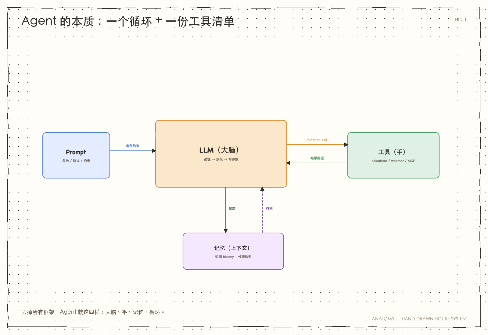
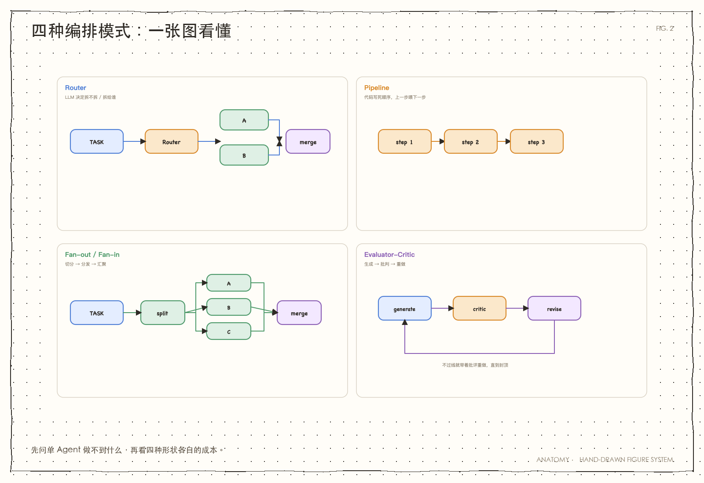
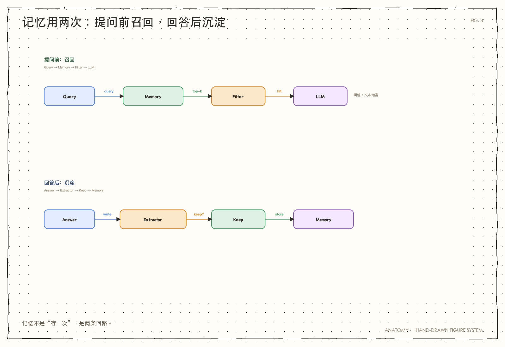
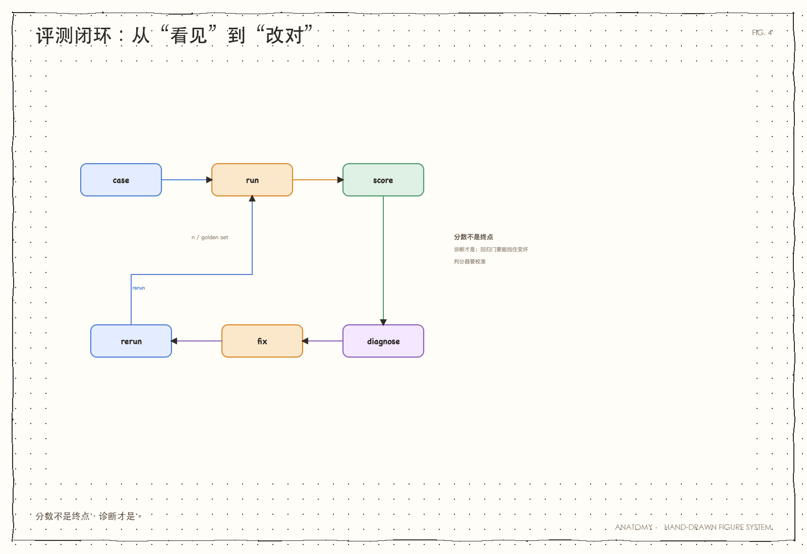
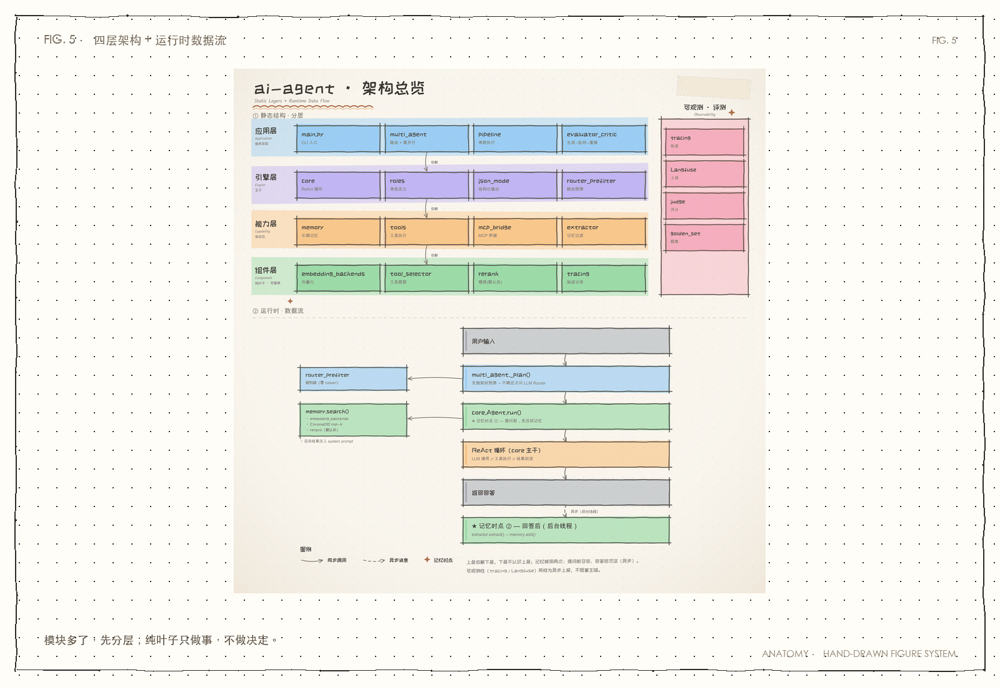
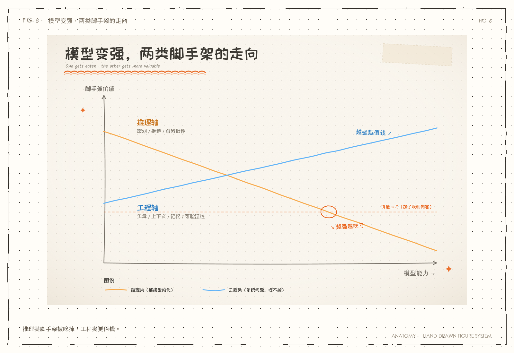
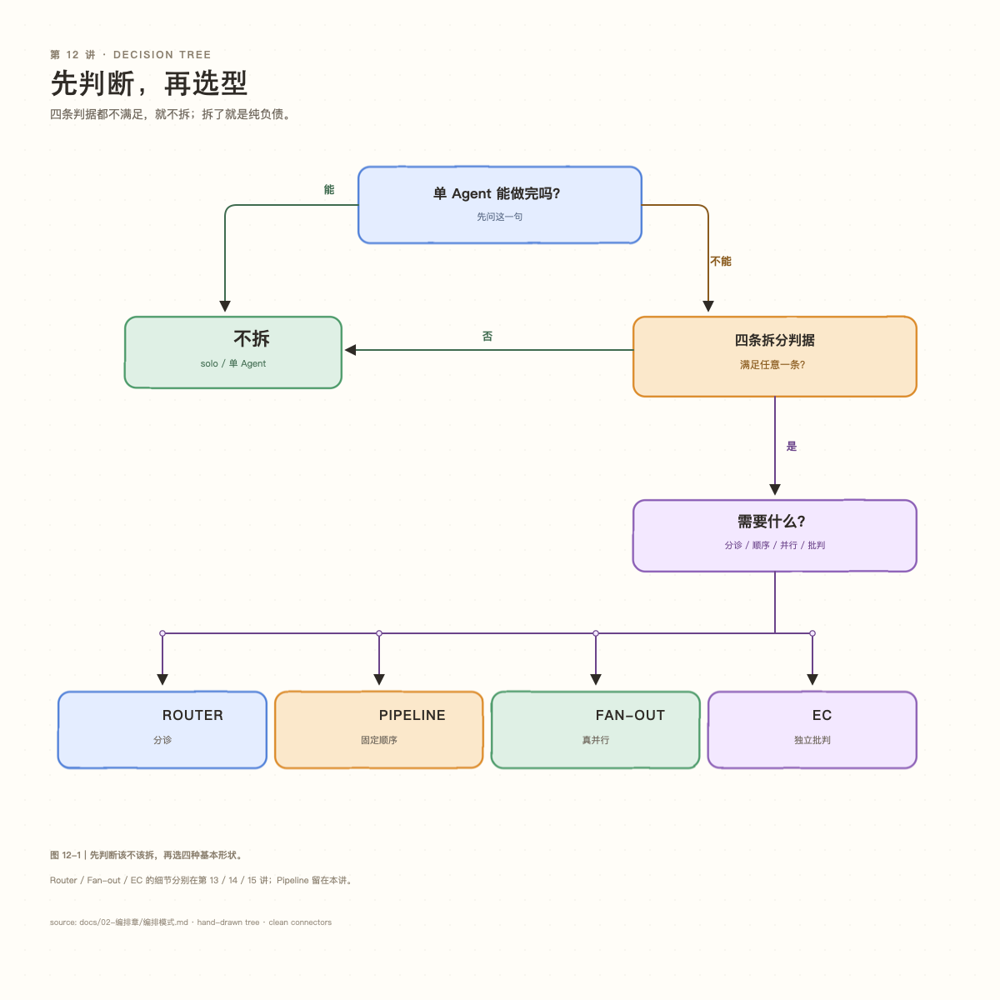
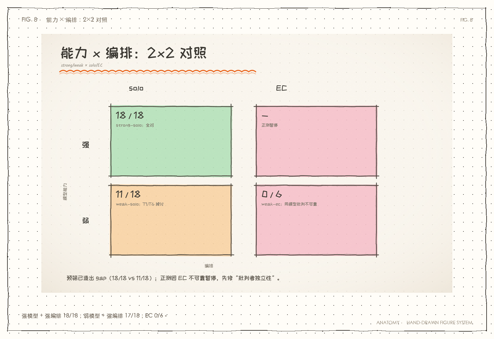
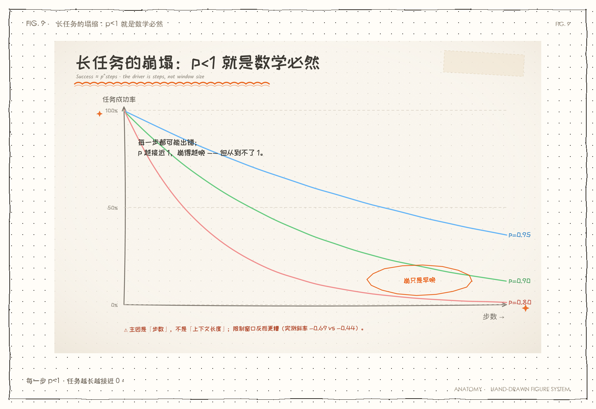
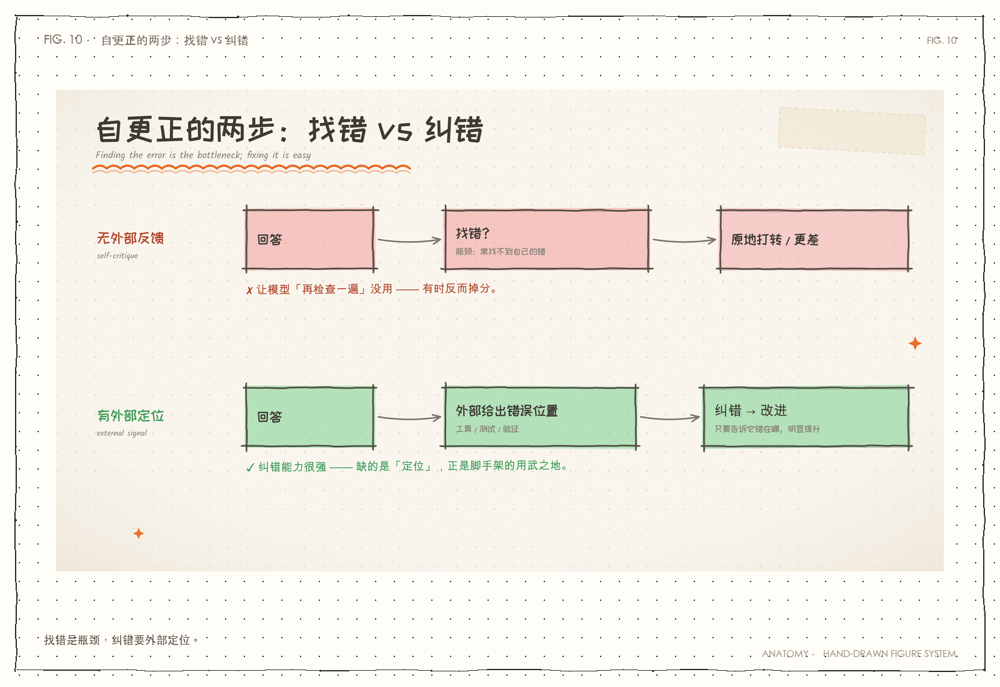

Agent 入门（结构 / 视觉试读版）
版本：2026-10-22 试读版 · 6 篇 32 讲。 这不是终稿。 这一版只做三件事：统一讲前卡、重写第 12 讲、统一书中插图。 其余正文仍是初稿内容，没有逐讲重写；标 ⬜ 的仍是待写。
本版改了什么 1. 32 讲统一增加/保留“前情 → 本讲只回答 → 读完后你能 → 下一讲”讲前卡； 2. 第 12 讲按试读方案重写：判据前置、四模式地图、Pipeline 最小例、决策树； 3. 书中 12 张图统一成手绘卡片风格：4 张核心图重绘，6 张保留内容加统一框， 第 12 讲决策树用手绘版； 4. 其余讲正文未重写，只做结构入口和图片替换。
读法：先看第 0 讲地图；再按 6 篇顺序读。每讲先看讲前卡，再看正文。 复习时只看每讲开头和结尾的“代价 / 下一讲”。
目录
序章 - 第 0 讲 · 教学总览：从 88 行到一个多 Agent 系统 🟡
第一篇 · 本质：从“会说”到“会做” - 第 1 讲 · 一个只会说话的模型 - 第 2 讲 · 最小 Agent：一个循环 + 一份工具清单 🟡 - 第 3 讲 · 工具结果怎么回来：感知契约 - 第 4 讲 · 上下文与历史：短期记忆的边界 ⬜
第二篇 · 记忆：让 Agent 不失忆 - 第 5 讲 · 为什么需要长期记忆 - 第 6 讲 · 写侧：抽取什么、怎么抽 - 第 7 讲 · 读侧：召回、阈值、文本增富 - 第 8 讲 · 读侧进阶：换更强 embedding - 第 9 讲 · 切分与指代：跨轮“它”到底指谁 - 第 10 讲 · 记忆评测：答案有没有变 - 第 11 讲 · 检索进阶：rerank 为什么被否决
第三篇 · 编排：从单 Agent 到多 Agent - 第 12 讲 · 什么时候该拆：四种编排速览 🟡 - 第 13 讲 · Router 成本：先花 0 token 判断 - 第 14 讲 · Fan-out 深入：真并行与假并行 - 第 15 讲 · EC 的边界：同模型在数值题上 0/6 - 第 16 讲 · 层级与工人池：慢工具才值 - 第 17 讲 · 去中心化：Group Chat - 第 18 讲 · 合同网：中央无法评估时 - 第 19 讲 · 辩论：必要性未复现 - 第 20 讲 · 黑板：关键变量是反应式控制 - 第 21 讲 · 能力 × 编排：模型变强后
第四篇 · 工程化：可运行、可负担、可观测 - 第 22 讲 · 约束与收尾：别等撞墙才停 🟡 - 第 23 讲 · MCP：把 N×M 变成 N+M - 第 24 讲 · MCP 边界：什么该做成工具 - 第 25 讲 · 架构：四层与纯叶子 - 第 26 讲 · 观测与评测：怎么知道它行不行 ⬜
第五篇 · 边界：什么时候不该加 - 第 27 讲 · 学习总结：九句话与被证伪的判断 - 第 28 讲 · 模型能力与 Agent 编排
第六篇 · 下一步：从教学项目到 harness - 第 29 讲 · DSH 技术设计与实现 - 第 30 讲 · 从 DSH 吸收什么：路线 - 第 31 讲 · 交互可视化：把流程拍下来 - 第 32 讲 · 长任务、状态、安全：还缺什么 ⬜
附录 - 第 34 讲 · 附录 A · 问题清单（40 条） - 第 35 讲 · 附录 B · 课程地图与自检 - 第 36 讲 · 附录 C · 写作规范
序章
先看整本书的地图：Agent 是什么、为什么这样长、怎么读。
第 0 讲 · 教学总览：从 88 行到一个多 Agent 系统
状态：🟡 改写
这不是论文，是一张“先看懂、再动手”的学习地图。 适合：刚开始学 Agent，或者写完 demo 但不知道下一步学什么的人。 读法：先看三句话 → 再看六张图 → 最后按兴趣点进各章。 本书目录与章节关系：全书目录与主线。 单文件初稿：Agent 入门（初稿汇编）。 一句话：Agent 没那么神秘；难的是知道什么时候该加东西、加了要付什么代价。
前情：接着序章的问题往下走。
本讲只回答：这本书怎么读？
读完后你能：知道全书五拍主线，并能按问题跳读。
下一讲：第 1 讲会接着这个问题。
先看三句话
- Agent 的本质 = 一个循环 + 一份工具清单。 模型负责“想”，工具负责“做”，记忆负责“别失忆”，循环负责“做完看一眼再决定下一步”。
- 多 Agent 不是能力升级，是成本结构。 每多一个 Agent，就多一份交接、压缩上下文和 token；买不到“单 Agent 做不到的事”，就别买。
- 能测量的别猜。
“明显更快”不算，
5.11s → 3.04s才算；负结果和正结果一样值钱。
概念小抄（先混个脸熟）
| 词 | 一句话 | 打个比方 |
|---|---|---|
| LLM | 只会读文字、写文字的大脑 | 一个很会答题但没手没脚的人 |
| Agent | 给大脑装上循环、工具、记忆 | 给那个人配了手、笔记本和流程 |
| ReAct | 想 → 做 → 看 → 再想 | 边做边看反馈，不是一口气写完 |
| Prompt | 给模型的角色说明和格式要求 | 上岗前的岗位说明书 |
| Token | 模型读写文字的计量单位 | 电表；也是账单 |
| Tool / function call | 模型决定“调用哪个函数”，程序真正执行 | 模型点菜，程序做菜 |
| Router | 一个调度者判断“拆不拆、派给谁” | 医院前台分诊 |
| Worker | 被派活的专家 | 专科医生 |
| Pipeline | 固定顺序串联，上一步输出 = 下一步输入 | 流水线 |
| Fan-out | 先切分，再分头做，最后汇总 | 几个人分头查资料，最后合并 |
| Evaluator-Critic（EC） | 生成 → 批判 → 不达标重做 | 写完找同事挑错，再改一版 |
| RAG / embedding | 把文字变成向量，按相似度找回来 | 把书页变成坐标，找“离问题最近”的几页 |
| MCP | 工具的通用插座 | USB 接口：换个工具不用重写一遍 |
| Golden set / judge | 固定题库 + 评卷规则 | 期末考试卷 + 评分标准 |
| Observability | 记录每一步在干什么 | 行车记录仪 |
这些词后面都会反复出现。第一次看不懂没关系，先有个印象，读到对应章节再回来查。
图 1：Agent 的本质

图 1｜大脑、手、记忆、循环，四样东西；其余都是加在它上面的成本。
看图说话：
- LLM（大脑）：只负责“读懂 → 决策 → 写参数”。它不执行任何东西。
- 工具（手）：计算器、天气、MCP 工具……真正干活的是它们。
- 记忆（上下文）：短期是这一轮对话的历史；长期是向量库检索回来的片段。
- 循环（ReAct）：模型要工具就执行，结果回填，再让模型看；直到它不再要工具。
max_steps是保险丝，防止它一直转。
一个常见误解：
“Agent 很聪明，是它自己会规划。”
不是。智能 100% 来自 LLM；Agent 只是把“角色 + 历史 + 工具”装配好，
让模型的决策能落地。看懂 minimal.py 的 88 行，就懂了一半。
→ 深入：能力阶梯
图 2：四种编排模式

图 2｜四种模式不是四种“能力”，是四种“成本结构”。
看图说话：
| 模式 | 一句话 | 什么时候用 | 代价 |
|---|---|---|---|
| Router | 前台分诊，决定拆不拆 | 请求类型多、需要动态判断 | 判断本身也要 token |
| Pipeline | 固定顺序，A→B→C | 步骤天然有先后 | 流程定死，不会拐弯 |
| Fan-out | 分头做，再汇总 | 子任务独立、工具慢 | 交接会丢信息 |
| EC | 生成→批判→重做 | 有明确标准、且能改 | 每轮多付生成 + 批判 |
最容易踩的坑：
“这道题跨了两个领域，所以应该拆成两个专家。”
不一定。跨域不是判据；“单 Agent 做不到”才是。 两个各只有半个工具集的专家，常常各自漏答一半。
图 3：记忆用两次

图 3｜记忆不是“记住一切”，是两次有选择的动作。
看图说话：
- ① 提问前：召回。把问题变成向量，去库里找最相关的几条；低于阈值的不发，
防止“不相干的记忆”污染上下文。
top_k管发几条，阈值管发不发。 - ② 回答后：沉淀。不是无脑存；先用一个轻量 LLM 判断“值不值得记”， 只记明确偏好、个人信息、跨会话事实；写入放后台线程，不阻塞回答。
两个常见误解：
“上下文窗口很大，就不用记忆了。”
窗口大 ≠ 管得好。塞得越多，注意力越容易被稀释；而且关掉页面就没了。
“记忆越多越好。”
无限制扩张的记忆会传播错误、污染判断。会忘，和会记一样重要。
图 4：评测闭环

图 4｜监控答“发生了什么”，评测答“对不对”；两件事不能互相替代。
看图说话：
- 监控（Langfuse / Tracer）：哪一步慢、贵、错。它只描述，不判断。
- 评测（golden set + judge）：拿固定题集跑，回答“这版比上版好还是坏”。
- 闭环：监控发现坏 case → 固化成评测题 → 修复 → 回归。 不回归，下次还会踩同一个坑。
一条硬规矩：
有客观、可程序验证的标准（能算、能跑测试）→ 用代码验证，别雇 LLM 评委。
这条规矩在 2026/10/19 又被实测证了一遍：同模型 EC 在数值题上 0/6， 会把对的判错、把错的认同。
→ 深入：数值题EC可靠性调查、成文规矩
图 5：系统是怎么搭的

图 5｜上层依赖下层，下层不认识上层；10 个“纯叶子”是项目的可替换策略层。
看图说话：
- 应用层：
main.py、Router、Pipeline、EC——负责“发起”和“编排”。 - 引擎层：
core.py是唯一的 ReAct 主干；roles定义专家。 - 能力层：
memory有状态；tools执行；mcp_bridge接外部工具。 - 组件层：embedding、rerank、提取器、评测、轨迹……都是可替换零件。
为什么这么分：
越底层越“无知”，越上层越“知道全局”。
tools.py 不该知道“谁在用它”；memory.py 不该知道“这次是哪个专家”。
底层不认识 Agent，才能被单独测试、A/B、整体换掉。
→ 深入：架构
图 6：模型变强后，哪些脚手架还值钱

图 6｜模型变强，吃掉“替它想”的脚手架，吃不掉“帮它够得着/记得住/验得了”的能力。
看图说话：
- 推理轴（拆步、规划、自我批评）：模型自己在内化；外挂的价值在下降，甚至转负。
- 工程轴（工具、上下文、记忆、验证、隔离）：模型变强帮不上忙，价值不降反升。
这解释了本项目的几个“反直觉”结论：
- 显式规划：小任务全对，长链救不了，零增益；
- rerank：实现了，但本项目语料上 Top-1 反而降；
- Debate：强模型自己就会质疑前提，必要性未复现；
- EC：文案题有用，数值题同模型自评 不可靠。
→ 深入：模型能力与Agent编排
实测账：哪些结论有数字撑腰
| 实验 | 关键数字 | 这说明什么 |
|---|---|---|
| Router 预筛 | 86% 跳过，总 token −25% | 简单任务用规则更省 |
| 真并行 Fan-out | 5.11s → 3.04s（−41%） | 独立子任务 + 慢工具才值 |
| EC 文案 | 84→84→85；及格线 90 时回退 | 及格线是旋钮，拧太高会反噬 |
| 显式规划 | N≤8 可，N≥9 不可；规划 0 增益 | 边界是预算，不是计划 |
| 工人池（慢工具） | 12.0/16.2s → 4.7/4.0s | 慢工具下并行真必要 |
| 去中心化协商 | 33% vs 100%；成本 1.25× | 信息分散时不可替代 |
| Contract Net | 33% vs 100%；成本 ≈5× | 中央无法评估时才值 |
| Debate | 12/12 vs 11/12 | 强模型自己会质疑前提 |
| Blackboard | 静态 0/6；单 Agent 4/6；黑板 5/6 | 关键变量是“反应式控制” |
| 记忆 | 有记忆 4/5 vs 无 2/5 | 记忆有贡献，但会漏召 |
| MCP 工具裁剪 | 省 42% 工具声明 token | 工具清单有租金 |
| 同模型 EC（数值） | 0/6；9 被改成 771429 | 同模型自评不是独立信号 |
所有数字带日期与实验语境；n 小，别当“定律”。
负结果：哪些热闹不能跟
| 负结果 | 数字 | 这告诉我们什么 |
|---|---|---|
| 显式规划 | 长链 N≥9 一样失败 | “把计划写出来”≠“跑得动” |
| 精排 rerank | Top-1 14→13，延迟 +296ms | 新组件不一定比旧的好 |
| Debate | 12/12 vs 11/12 | 强模型不需要“正反方”来纠错 |
| Blackboard | 单 Agent 反应 4/6，黑板 5/6 | 优势主要来自“先看再决定” |
| 同模型 EC | 0/6，9→771429 | 有客观标准时，代码验证 > LLM 评委 |
一句话：
不为未复现的问题增加复杂度；先找最便宜的修法，再加机器。
什么时候用什么
| 你的情况 | 建议 |
|---|---|
| 单 Agent 能做完 | solo；别加 Router |
| 步骤天然有先后 | Pipeline（代码控制） |
| 子任务独立、工具慢 | Fan-out / 工人池 |
| 需要批判人格、且能从批评中改进 | EC；但要有外部信号 |
| 信息分散在多方 | Group Chat / Contract Net |
| 中央无法评估“该谁干” | Contract Net |
| 有客观标准（能算/能测） | 代码验证，不用 LLM 评委 |
九句话
- 同一句“100%”，含金量可以完全不同。
- 能测量的别让 LLM 判；恒为满分的维度只当一票否决。
- 多 Agent 是花钱买“单 Agent 做不到的事”；买不到就别买。
- 软提示改不了行为惯性；要改行为，得改“可用动作”。
- 不为未复现的问题增加复杂度；先找最便宜的修法。
- 编排的必要性是有条件的：子任务独立 + 单任务耗时足够大。
- 模型变强吃掉推理类脚手架，吃不掉工程类能力。
- 接口契约的价值取决于“谁来消费”；程序消费不能靠概率。
- 同模型自评不是独立信号；有客观标准时，代码验证 > LLM 评委。
展开版：学习总结。
怎么读这套文档
第一次读（建立整体印象）：
带着问题查：
| 想知道 | 看这里 |
|---|---|
| 怎么省钱 | 路由成本优化 |
| 慢工具怎么提速 | 并行分发 |
| 记忆检索不准 | 记忆召回修复 |
| 工具怎么复用 | MCP基础 |
| 多 Agent 怎么协作 | 去中心化协商调查 |
学方法论：
学习总结 的“被证伪的判断” + 问题清单 的 40 条踩坑 + 各篇“调查”类讲义。结论不是学到的，是测出来的。
诚实边界
- 样本小：很多实验 n=3–6；只能写“方向性”，不能写“证明”。
- 单作者：实验设计、判分器、复核都是一个人，容易有盲区。
- 模型会漂移：2026/09 的
deepseek-flash和今天不一定一样；旧数字要重跑。 - 判分器会错：T2 的期望值就曾算错；数字整齐到可疑时，先查实验台。
- 任务会泄漏：用测试查询写提示词，分数会虚高；必须用留出集。
这份文档不追求 SOTA，追求可解释的边界；能被证伪，比“看起来厉害”重要。
延伸阅读
- 教学大纲：12 节进阶路线
- 学习总结：主线 + 五模块 + 九句话
- 问题清单：40 条踩坑
- 成文规矩：讲义怎么写
- 模型能力与Agent编排：文献综述
- 文档地图：全部讲义入口
- 项目日志 2026：按日期的复盘、审视、重构、盘点
- 交互可视化设计：把 Agent 流程做成可回放动画（设想）
- DSH 技术研究：从 DSH 源码/设计文档吸收可落地机制
本讲来源：教学总览.md
第一篇 · 本质：从“会说”到“会做”
LLM 只会“说”。这一篇只做一件事：给它装上循环和工具，让“说”变成“做”。先看最小的 88 行，再看工具结果怎么回来，最后看上下文为什么会先撞墙。
状态：✅ 已有
2026/10/20。这一讲先不写 Agent，只把模型本身看清楚：它能做什么、不能做什么？ 先把“模型”和“Agent”分开，后面才知道循环和工具是为什么加的。
一句话：模型只会“读一叠消息，写下一段文字”；它不记得你，也不会替你动手。 适读：刚开始写 Agent，或者一直分不清“模型”和“Agent”的人。 相关讲义：能力阶梯、感知结构化调查
打个比方：模型像一个很会写字、但被关在房间里的人。 你每次只能从门缝里塞一叠纸进去，他写完一叠纸递出来； 他看不到房间外面，也不会替你跑腿。
前情提要：这是全书第一讲，我们先不写 Agent，先看清模型本身。 本章只回答：模型能做什么、不能做什么？ 读完后你能：说清 messages / token / 上下文窗口，以及为什么 Agent 需要循环和工具。 下一章为什么存在：模型只会说；要让它做事，得给它一个循环和一份工具清单。
1. 一次请求，到底发生了什么
你调用一次模型，本质上是三件事：
- 你把一叠消息（messages）发给 API；
- 模型根据这叠消息，一个 token 一个 token 地写出下一段文字；
- API 把这段文字返回给你。
用 OpenAI 兼容接口写，大概是这样：
import os
from openai import OpenAI
client = OpenAI(
base_url="https://api.deepseek.com", # 按你的 provider 填
api_key=os.environ["DEEPSEEK_API_KEY"],
)
resp = client.chat.completions.create(
model="deepseek-flash",
messages=[
{"role": "system", "content": "你是一个简洁的助手。"},
{"role": "user", "content": "北京今天天气怎么样？"},
],
)
print(resp.choices[0].message.content)
这里没有“记忆”，也没有“行动”。 你发什么，它看什么；它写完，这次调用就结束了。
2. 它不记得你：每次都要把历史重新发一遍
假设你昨天说“我对花生过敏”，今天问“推荐一家餐厅”。
如果你今天只发“推荐一家餐厅”，模型不会知道花生的事——它没有“昨天”。
很多人觉得模型“记得”，其实是因为客户端把历史又发了一遍：
messages = [
{"role": "user", "content": "我对花生过敏"},
{"role": "assistant", "content": "好的，我记住了"},
{"role": "user", "content": "推荐一家餐厅"},
]
模型看到的不是“它上次说过什么”，而是你这次塞进去的整叠纸。
常见误解：模型回答得像记得，是因为你把历史又发了一遍；不是它记住了。
所以，“记忆”首先是你的事，不是模型的事。
3. token 和上下文窗口：它一次能看多少
模型不是按“字”算，而是按 token。
粗略理解：一个 token 是一个词片；中文一个字大约 1–2 个 token， 具体怎么切，取决于模型的分词器。
一次请求能塞进去的 token 上限，叫上下文窗口（context window）。 它同时限制三件事：
- 你能放多少历史；
- 你能放多长的工具结果；
- 这次调用大概要花多少钱。
窗口不是“越大越好”：
- 历史每多一段，每次调用都要重新付一遍 input token；
- 塞得越满，模型越容易被无关内容分散注意力；
- 窗口再大，进程一关，这次请求里的东西也没了。
记住一句话：窗口是草稿纸，不是数据库。
4. 它只会“说”，不会“做”
你问“北京天气”，模型可以：
- 凭训练数据猜一个答案；
- 或者说“我不知道”；
- 或者输出一个工具调用（tool_call）的 JSON。
但注意：输出工具调用，不等于执行工具。
模型只能“写”出：
{"name": "get_weather", "arguments": {"city": "北京"}}
真正去调天气 API 的，是你的代码。
模型看不到你的文件、数据库、浏览器； 它只能看到你放进 messages 的东西，或者你通过工具返回给它的东西。
模型负责“说”，代码负责“做”；中间缺的那座桥，就是工具和循环。
5. 所以，Agent 到底是什么
把上面几节连起来：
- 模型只会读 messages、写文字；
- 它不记得你，也不会动手；
- 它一次能看的内容有上限。
那 Agent 是什么？
Agent = 模型 + 一个循环 + 一份工具清单 + 一点状态。
- 循环让它能“调用工具 → 看结果 → 再决定下一步”；
- 工具让它能“做”；
- 状态让它能“记住这次任务走到哪”。
下一讲，我们就把这几样东西塞进 88 行代码里：
一个最小的 ReAct 循环，一份工具清单，一个能跑起来的 minimal.py。
本讲来源：一个只会说话的模型.md
第 2 讲 · 最小 Agent：一个循环 + 一份工具清单
状态：🟡 改写
起因：参考
sanbuphy/nanoAgent（103 行讲清 Agent 本质）后， 发现本项目缺一个最小可运行入口——21 个业务模块、约 4800 行， 新手打开会懵。 完成日期：2026/10/02。
这是什么：一条纵向的代码阶梯。每级都是独立可运行的完整程序， 不是片段。读一级懂一层，读完五级就懂全貌。
和「章」的关系：项目按主题分章（横向），阶梯按复杂度分级（纵向）。 两者正交 —— 阶梯回答「从哪开始读」，章回答「某个主题讲什么」。
一句话：从 88 行到 4800 行的纵向代码阶梯：每级都是独立可运行的完整程序。 适读：第一次接触本项目，想解决「从哪开始读代码」。 相关讲义：编排四模式、架构图
打个比方：像爬楼梯：每级都能站住，但不要一次跨四级；先站稳 L0，再往上加。
前情提要：上一章留下一个问题——LLM 只会“说”，不会“做”。 本章只回答：怎么用最小的代码，把“说”变成“做”？ 读完后你能：画出 ReAct 循环，并说清每一步的输入/输出。 下一章为什么存在：工具会返回字符串；程序怎么可靠地消费它？
阶梯总览
| 级 | 内容 | 代码量 | 对应文件 | 跑法 |
|---|---|---|---|---|
| 0 | 最小 Agent | 88 行（纯代码） | minimal.py |
python minimal.py "算 1+1" |
| 1 | + 记忆 | +253 行 | agent/memory.py |
见 docs/03-实战章/记忆用例评测.md |
| 2 | + 工具生态 | +375 行 | agent/tools.py + agent/mcp_bridge.py |
见 docs/04-协议章/MCP基础.md |
| 3 | + 编排 | +510 行 | agent/multi_agent.py 等 3 个 |
见 docs/02-编排章/编排模式.md |
| 4 | + 评测与可观测 | +600 行 | agent/judge.py、eval_runner.py |
见 docs/00-索引/学习总结.md |
行数含注释与空行会更大（
minimal.py共 187 行，其中 88 行是纯代码）。
阶梯 0 · 最小 Agent（minimal.py）
它只有三样东西：
1) 工具：定义（spec）+ 实现（函数）+ 注册表（name→fn）
2) 循环：发历史 → 模型要工具就执行 → 结果回填 → 再发 → 直到模型给答案
3) 入口：读输入、建客户端、调用循环
核心循环就 20 行：
for step in range(1, max_steps + 1):
resp = client.chat.completions.create(..., messages=messages, tools=TOOLS_SPEC)
msg = resp.choices[0].message
messages.append(msg)
if not msg.tool_calls: # ← 出口：模型不再要工具 = 它认为完了
return msg.content
for tc in msg.tool_calls: # ← 执行工具，结果回填
result = TOOL_FUNCTIONS[tc.function.name](../01-基础章/**args)
messages.append({"role": "tool", "tool_call_id": tc.id, "content": result})
Agent 的全部本质就是这段。 其余所有东西都是加在它之上的。
一句话对照表：阶梯 0 vs 完整版
| 能力 | 阶梯 0（minimal.py） |
完整版（agent/core.py） |
为什么加 |
|---|---|---|---|
| ReAct 循环 | ✅ 20 行 | ✅ 同样逻辑 | —— |
| 工具声明 | 2 个纯本地工具 | 本地 + MCP 动态发现 | 复用外部能力 |
| 记忆 | ❌ | ✅ 提问前检索、回答后沉淀 | 跨轮不失忆 |
| 上下文控制 | ❌ | ✅ trim_history |
长对话不爆 |
| 工具输出截断 | ❌ | ✅ 头尾保留 | 防一次输出炸上下文 |
| 预算预警 | ❌ | ✅ 剩 2 步时提醒收敛 | 不硬停 |
| 追踪 | 打印 | ✅ tracer + Langfuse 父子 span |
能归因 |
| 错误处理 | 基本 | ✅ 工具失败不静默 | 能排查 |
完整版 385 行里多出的部分，每一处都有实测依据（见各讲义）。 但对第一次读的人来说，那些都是噪声 —— 所以先读阶梯 0。
阶梯 1-4 的增量是什么
阶梯 1 · + 记忆
解决的问题：LLM API 无状态，关掉就失忆。
增量：把状态外置成检索库，提问前召回、回答后沉淀。
踩过的坑（都在 docs/00-索引/问题清单.md）：
- 召回阈值定错（0.6 太高）
- 向量空间混用
- 记忆文本措辞影响召回
阶梯 2 · + 工具生态
解决的问题：N 个框架 × M 个工具 = N×M 份适配。
增量：MCP 把适配压成 N+M（双方各实现一次协议）。
关键实测：协议层 0.69ms（可忽略），但工具清单每轮吃 token（14 个工具 +308%）。
阶梯 3 · + 编排
解决的问题：单步能干活，但不会自己定"下一步做什么、什么时候停"。
增量：4 种编排模式（Router / Pipeline / Fan-out / Evaluator-Critic）。
铁律：多 Agent 不是能力升级，是成本结构 —— 必须换回"单 Agent 做不到"的东西。
阶梯 4 · + 评测与可观测
解决的问题：Agent 是黑盒（不知发生了什么），且无标准（不知做得好不好）。
增量：在线埋点（Langfuse）+ 离线对照（golden set + judge）。
关键区分：监控答「发生了什么」，评测答「对不对」—— 两问不同。
为什么要有这条阶梯
对照 sanbuphy/nanoAgent
它的递进是：
agent.py（103 行） 纯 ReAct
↓ 只加记忆 + 规划
agent-plus.py（206 行） +MEMORY.md、+create_plan()、+错误处理
↓ 只加工具 + 配置
agent-claudecode.py（282 行）+edit/glob/grep、+rules/、+skills/、+MCP 配置
每往上一步，只加一层。每一步都能独立跑。
本项目的缺口正好在这：有"章"没有"阶梯"。
minimal.py 就是补上的阶梯 0。
但不要学它的地方
nanoagent 的 .agent/skills/ 是运行时加载 markdown 技能——
那是"技能系统"，属于另一个主题，本项目没有（也不需要）。
照搬会跑偏。
怎么用这条阶梯
如果你是第一次读这个项目：
1. 先读 minimal.py（88 行纯代码，一口气读完）
2. 再按阶梯 1→4 读对应模块 + 讲义
3. 最后回看 docs/05-收尾章/架构.md 的架构图，把整体串起来
如果你想改这个项目： - 先定位改动落在哪一级 - 只读那一级 + 相邻一级（不要一次读 4800 行）
如果你要讲给别人听： - 从阶梯 0 讲起 —— "Agent 就是一个循环加一份工具清单" - 然后每一级加一样东西，说清为什么加、代价是什么
实测账（2026/10/02）
minimal.py 实测：
| 场景 | 结果 |
|---|---|
单工具（算 123*456） |
✅ 调用 calculator → 56088 |
多工具（算 99*99，另外几点） |
✅ 两次工具调用，结果都对 |
无需工具（你好） |
✅ 直接回答，不调工具 |
注入攻击（算 1+1; rm -rf /） |
✅ 表达式被白名单挡住；模型明确说明"我没有执行 shell 的能力" |
纯代码行数：88 行（比 nanoagent 的 103 行更少）。
说明：阶梯 0 刻意不含安全护栏 —— 它的工具是纯本地函数（无 shell）， 所以攻击面很小。一旦接 shell 工具，必须先补
docs/03-实战章/约束与收尾.md那套约束，以及权限边界。
结论
- 阶梯 0 是最小缺口，也是最大收益 —— 88 行让人真正"看懂"；
- 阶梯不是替代"章"，是给"章"提供入口 —— 两者正交；
- 学 nanoagent 的是"递进结构"，不是"极简本身" —— 本项目是教学项目，目标是可理解，不是最小。 完整版那 385 行每一处都有理由，不该为极简而砍。
踩过的坑
| 坑 | 说明 |
|---|---|
| 把阶梯当成"要砍代码" | 不是。完整版不砍，只是多给一个入口 |
minimal.py 里用 __import__("datetime") |
一开始图省事写成动态导入，又丑又慢。已改为正常 import |
| 只数总行数 | minimal.py 共 187 行，纯代码只有 88 行。报"多少行"要区分口径 |
| 以为照搬 nanoagent 的技能系统 | 那是另一个主题；本项目无此需求，照搬会跑偏 |
本讲来源：能力阶梯.md
第 3 讲 · 工具结果怎么回来：感知契约
状态：✅ 已有
2026/10/06。这一讲只回答一个问题：工具结果要不要加一层固定的形状？ 纪律还是老规矩：先证明「病」存在，再决定要不要治。
一句话：工具结果要不要加 {ok,data,error}？看谁来读：LLM 读，收益小；代码读，必需。
适读：写过工具调用，但没想过“工具结果到底给谁读”的人。
相关讲义：编排四模式、能力阶梯
打个比方：给程序递一张“体检单”（ok/data/error），而不是一张模糊的便签。
前情提要：最小 Agent 已经会调工具，但工具返回的是一段字符串。 本章只回答：怎么让“模型消费”和“程序消费”都不翻车？ 读完后你能：解释
{ok,data,error}契约，并说出它防住的两种失败。 下一章为什么存在：循环越跑，历史越长；上下文会先撞墙。
1. 先看现在的问题：工具结果只是一段字符串
上一讲的最小 Agent 里，工具返回什么，core.py 就原样塞进 history：
工具返回 "AAPL: 189.5; GOOGL: 141.2"
→ 作为 role="tool" 的消息塞进 history
→ LLM 读它，决定下一步
→ 如果下一步是代码，代码也读它
这里有个容易被忽略的点：LLM 读得懂，不等于代码读得懂。
LLM 可以容忍“AAPL 189.5 美元”“价格 AAPL=189.5”这些不同写法；
代码通常不行——它要么按某个格式写死解析，要么直接 json.loads。
一旦格式对不上，代码不会“理解”，只会返回空值或抛异常。
项目里已经有
json_mode.py，但那是给最终答案用的； 这一讲说的是回路中间的工具结果：它还没有固定的形状。
2. 先试一个最容易被想到的担心：模型会不会把异常当数据？
我们先假设：模型可能把 -1、未知、超时 3000ms 当成正常数据。
于是构造了三个坑（docs/experiments/perception_probe.py）：
| # | 工具返回 | 我们希望模型说 |
|---|---|---|
| A1 | 未知代码返回哨兵 -1 |
“这不是有效价格” |
| A2 | 持仓串里 MSFT=未知 |
“数据缺失，算不了” |
| A3 | 错误信息里有“超时（3000ms）” | “3000ms 是超时上限，不是延迟” |
结果：三例全被识破。
| # | 裸字符串 | 加契约 |
|---|---|---|
| A1 | ✅ “-1 并不是有效价格” |
✅ |
| A2 | ✅ “MSFT 返回‘未知’，无法算出” | ✅ |
| A3 | ✅ “3000ms 是超时上限，不是实际延迟” | ✅ |
所以，“模型把异常当数据”这个担心，在强模型上基本不成立。
它自己能从上下文里判断：-1 不是价格，未知 不是数字。
那是不是说明：契约没必要了？
先别下结论。上面是“模型读”；下面换一个消费者——只让代码读。
3. 换一个消费者：只让代码读同一份结果
docs/experiments/perception_determinism.py 把 LLM 拿掉，
只让下游代码解析同一份工具结果。
道理很简单：如果代码也能稳，契约确实没必要； 如果代码会翻车，那问题就不在模型，而在“结果有没有固定的形状”。
3.1 第一种翻车：换一种写法，解析器就返回空
假设工具返回股票价格，下游代码用正则解析。它只认这一种写法：
# 解析器按格式 #1 写死
"AAPL: 189.5; GOOGL: 141.2"
# 正则大致是：(\w+): ([\d.]+)
现在，同一份数据换两种意思完全一样的写法。
下表的“结构化返回”，指工具直接把
data给成字典；不是让正则去猜另一种写法。
| 写法 | 裸正则解析 | 结构化返回 |
|---|---|---|
AAPL: 189.5; GOOGL: 141.2 |
✅ {AAPL, GOOGL} |
✅ |
AAPL 189.5 美元；GOOGL 141.2 美元 |
❌ 返回 {} |
✅ |
价格 AAPL=189.5 \| 价格 GOOGL=141.2 |
❌ 返回 {} |
✅ |
注意：第二、三种没有抛异常，只是返回了空对象。 程序不会崩，它会继续跑，然后以为“没有数据”。 这就是静默失败——比崩溃更难发现。
这里变的不是模型，是写法。 只要工具的输出格式由工具作者决定，下游代码就永远可能遇到“等价但不同形”的写法。
契约的作用，不是“让正则变聪明”，而是把解析提前到生产者：
工具直接返回 data（比如 {"AAPL": 189.5, "GOOGL": 141.2}），
消费者不再猜字符串。
3.2 第二种翻车：错误值被当成价格，参与了计算
再假设下游要算持仓市值：
price = tool("UNKNOWN") # 未知代码，工具返回 -1
value = price * 10 # 10 股
# 结果：-10.0
没有异常，没有报错，程序得到一个负的市值。 如果这个结果再被写进报表、喂给下一步，错误就会继续传下去。
加契约后：
obs = tool("UNKNOWN") # {"ok": false, "error": "unknown code"}
if not obs["ok"]:
return "无法计算：未知代码"
| 感知形态 | 下游计算 | 结果 |
|---|---|---|
裸字符串（失败 = -1） |
-1 × 10 |
−10.0 ❌ 静默算错 |
结构化（ok=false） |
先判断，再决定算不算 | “无法计算（未知代码）” ✅ |
4. 所以，契约到底为谁而加？
把上面两个实验放在一起，答案其实只有一句话：
契约的价值，取决于“谁来读结果”。
| 谁读结果 | 没有契约会怎样 | 有契约会怎样 | 结论 |
|---|---|---|---|
| LLM | 强模型通常能读懂 | 帮助有限，反而多一层格式 | 主要是成本 |
| 代码 | 格式漂移 → 返回空；哨兵值 → 静默算错 | 能按 ok 分支，错误不会被当成数据 |
必需 |
这也解释了为什么第 2 节的 A 探针“没打中”： 它测的是“模型能不能读懂”，而真正的风险在“代码能不能消费”。 模型读懂了，不等于代码读懂了；模型不会把自己的理解自动传给下游代码。
回到最小 Agent：
- 如果只有 LLM 读工具结果，裸字符串还能跑；
- 一旦加了 Pipeline、Evaluator-Critic、外部系统，代码开始读结果，就必须有契约。
下一讲要解决的是另一个问题：历史越跑越长，上下文会先撞墙。 契约解决“结果能不能被消费”，上下文解决“结果塞不塞得下”。
5. 实现：结构化感知契约（agent/observation.py）✅ 2026/10/06
契约不用很重，只做三件事：告诉我成功还是失败、把数据放在固定位置、把错误说清楚。
5.1 契约形态
{"ok": bool, "data": Any, "error": str | None, ...可选元信息}
- 生产者：
ok(data)/fail(error)（推荐显式） - 兼容旧工具：
normalize()把裸字符串启发式判断，并标_normalized=True（提示"此处走了有损推断"，消费方可据此决定是否信任ok）
5.2 接入 core.py
- 新增开关
OBSERVATION_CONTRACT = True（关闭时与旧版完全一致） - 工具结果先在未截断时归一化为 Observation（下游要完整契约，非给 LLM 看的截断串），
再截断给 LLM；
TraceStep新增可选字段observation - 长输出时给契约加
truncated=True/raw_len
5.3 验证（docs/experiments/perception_contract_validate.py）
| 测试 | 内容 | 结果 |
|---|---|---|
| T1 契约生成 | 显式 fail / 旧字符串 / 成功 → ok 正确 |
✅ |
| T2 确定性消费 | 下游按 ok=false 分支 → "无法计算"（不再静默算错） |
✅ |
| T3 无回归 | 123*456=56088 照常 |
✅ |
对照 §3.2：旧式
-1×10 = -10.0（静默算错）→ 契约后走正确分支。
5.4 诚实边界
- 契约只在生产者遵守时才确定；旧工具靠启发式（标
_normalized=True）。 - 想真正确定，得把工具改成返回
ok()/fail()（本项目工具已可逐步迁移）。 - 对 LLM 消费几乎无影响（强模型本就能识破）；价值在程序消费侧。
6. 一句话结论
感知结构化不是“让模型更聪明”，是“让代码敢接模型的结果”。 模型越强，越敢把结果交给下游程序，契约反而越值钱。
与项目铁律的关系
- 「多 Agent 是成本结构」的同一逻辑：接口契约也是成本结构，看消费方而定；
- 呼应番外篇（
docs/99-番外/模型能力与Agent编排.md）： 强模型吃掉「推理类」鲁棒性，吃不掉「接口类」确定性。
产品
agent/observation.py（新模块）；agent/core.py（接入 + 开关）；agent/tracing.py（observation字段）docs/experiments/perception_{probe,determinism,contract_validate}.py- 本文件
7. 待决
- 将
agent/tools.py现有工具逐步迁移到ok()/fail()（真正确定性）； - 接受结论收口本专题。
本讲来源：感知结构化调查.md
第 4 讲 · 上下文与历史：短期记忆的边界
状态：⬜ 待写 本章计划：history 为什么会爆、trim_history 的代价、截断/摘要/压缩三条路。 对应代码：
agent/core.py的trim_history。⬜ 这一讲还没写。 先用上面的“本章计划”占位；读完相邻章节后回来补。
前情：接着第 3 讲的问题往下走。
本讲只回答：历史为什么先撞墙？
读完后你能：知道上下文预算、截断和压缩的代价。
下一讲：第 5 讲会接着这个问题。
第二篇 · 记忆：让 Agent 不失忆
能动手之后，下一道坎是“关掉就忘”。这一篇从“为什么需要长期记忆”开始，依次讲写侧（记什么）、读侧（怎么召回）、切分（跨轮指代）和评测（答案有没有变）。最后用 rerank 的否决说明：检索组件不是越多越好。
状态：✅ 已有
2026/10/20。这一讲先不写代码，只把“为什么需要外置记忆”说清楚。 先分清“窗口 / 会话历史 / 长期记忆”，再看记忆的写侧和读侧。
一句话：模型不记得你；窗口是草稿纸，会话历史是聊天记录，长期记忆是备忘录。 适读：准备给 Agent 加记忆，但还没想清楚“记什么、怎么取”的人。 相关讲义：记忆抽取、记忆召回修复、记忆切分
打个比方：窗口是你桌上的一张纸，写完就扔； 会话历史是这次聊天的录音；长期记忆是你放在抽屉里的备忘录，下次还能翻出来。
前情提要：在最小 Agent 里，窗口有限，进程一关就忘。 本章只回答：为什么需要“窗口之外”的记忆？ 读完后你能：分清三种记忆，并说出长期记忆的写侧/读侧。 下一章为什么存在：知道了要记，接下来要决定“记什么”。
1. 一个具体的忘事现场
周一，你告诉 Agent：“我对花生过敏。” 周二，你问：“推荐一家餐厅。”
如果周二只发“推荐一家餐厅”，Agent 很可能推荐一家花生酱很好吃的店。 不是它故意害你，是它根本不知道周一说过什么。
你可能会说：不是有上下文窗口吗？
窗口里只有这次请求的消息；周二是一次新请求，周一的历史不在里面。 除非你把周一那句话再塞进去，或者把它存进一个“下次还能查到”的地方。
2. 三种“记忆”，别混在一起
| 类型 | 活多久 | 里面放什么 | 谁负责 |
|---|---|---|---|
| 上下文窗口 | 一次请求 | 这次要发给模型的 messages | API / 模型 |
| 会话历史 | 一个会话 | 这次对话的完整记录 | 你的代码 / 数据库 |
| 长期记忆 | 跨会话 | 偏好、事实、决策 | 向量库 + 抽取 + 召回 |
一句话：
- 窗口是草稿纸：这次用，这次扔；
- 会话历史是聊天记录：这次会话能翻，换个会话不一定；
- 长期记忆是备忘录：下次还能按意思找到。
三者不是替代关系，是三层。 长期记忆不能替代会话历史；它只是把“值得跨会话保留的东西”单独存起来。
3. 为什么不能只靠“更大的窗口”
“窗口再大一点，不就能把历史都塞进去吗？”
理论上可以，实际上有三笔账：
- 钱：历史每多一段，每次调用都要重新付 input token；聊得越久，越贵。
- 注意力：塞得越满，模型越容易被无关内容带偏；真正相关的那句话可能被淹没。
- 持久性：窗口只活在这次请求里；进程一关，什么都没了。
所以，窗口解决的是“这次能看多少”，不是“下次还能不能记得”。
4. 长期记忆 = 写侧 + 读侧
长期记忆不是“把聊天记录全存下来”，它有两个动作：
图 1｜记忆不是“记住一切”，是两次有选择的动作。
写侧：回答之后，决定记什么
不是每句话都值得记。
“今天天气不错”不值得；“我对花生过敏”值得。 写侧要做的是：判断 → 抽取 → 存储。
读侧：提问之前，先找相关的
用户问“推荐一家餐厅”，先把问题变成向量，去库里找最相关的几条； 相关度低于阈值的不发，避免“不相干的记忆”污染上下文。
用伪代码表示：
# 写侧：回答后
if worth_remembering(user_msg):
memory.add(extract(user_msg))
# 读侧：回答前
hits = memory.search(question, top_k=5)
if hits:
system_prompt += "\n已知用户信息：\n" + "\n".join(hits)
本项目用 ChromaDB + 通义 text-embedding-v4 做向量存储和召回；
这一讲不展开参数，先把“两次动作”记住。
5. 记忆不是越多越好
记忆有两个反作用：
- 记错：把一次性的说法当成长期偏好，下次就会用错；
- 记多：什么都存，召回时反而找不到重点，还会把旧信息带进来。
所以记忆系统真正难的不是“存”，是：
- 写侧：什么值得记；
- 读侧：什么该召回、什么该忽略；
- 评测：加了记忆之后，答案到底变好还是变坏。
这也是后面几讲要依次解决的问题：
- 第 6 讲：写侧，抽取什么；
- 第 7 讲：读侧，怎么召回、阈值怎么定；
- 第 8 讲：切分与指代；
- 第 9 讲：端到端评测，答案有没有变。
6. 这一篇在全书里的位置
前面我们讲的是“这次请求里能放多少”；这一讲讲“这次请求之外还能记住什么”。
- 如果你只是做一次性的问答，窗口就够了；
- 如果你要做跨会话的助手，长期记忆就是必需；
- 但记忆不是“越多越好”，它需要写侧过滤、读侧阈值和评测。
下一讲，我们进入写侧：到底记什么、怎么抽。
本讲来源：为什么需要长期记忆.md
第 6 讲 · 写侧：抽取什么、怎么抽
状态：✅ 已改写
2026/09/19 起；2026/10/20 重写。 这一讲只回答：一轮对话结束后，什么值得记、怎么抽、怎么评？ 本地小模型替代云端 LLM 的选型实验，单独放在 本地小模型替代 LLM，不在这一讲展开。
一句话：写侧不是“把对话总结一下”，而是“判断这条信息以后还会不会用到”。 适读：准备做长期记忆，或者记忆库已经开始变脏的人。 相关讲义：为什么需要长期记忆、读侧：召回、阈值、文本增富
打个比方：写侧是档案管理员。 不是把每张纸都塞进柜子，而是先问“这张以后还会查吗？”
前情提要：上一讲说了记忆为什么要分写侧/读侧；这一讲只看写侧。 本章只回答：什么值得记、怎么抽、怎么评？ 读完后你能：设计一个“宁可少记，不可记错”的写侧。 下一章为什么存在：记下来只是第一步；下次能不能召回，是读侧的事。
1. 写侧到底在做什么
agent/extractor.py 在每轮回答结束后跑一次，决定这轮要不要写进长期记忆。
它输出三个字段：
{"keep": true, "text": "用户名叫小王，是一名测试开发工程师。", "tags": ["personal_info", "job"]}
keep：这轮值不值得记（分类）；text：值得记的话，压成一句可检索的话（生成）；tags：给这句话打标签，方便以后过滤（抽取）。
它位于“回答之后、写入向量库之前”：
用户问 → Agent 答 → extractor 判断
├─ keep=true → 写入 ChromaDB
└─ keep=false → 丢弃
为什么不能无脑全存： “你好”“谢谢”“今天天气不错”会把记忆库塞满，检索时全是噪声。 写侧的第一个职责，不是“多记”，而是少记错的。
2. 先定红线：误记比漏记更贵
写侧有两个方向的错误，严重性不一样：
| 错误 | 表现 | 后果 |
|---|---|---|
| 漏记 | 该记的没记 | 下次少一条信息，用户可能再问一遍 |
| 误记 | 不该记的记了 | 污染记忆库，以后每次召回都可能被带偏 |
漏记是“少一条”，误记是“多一条错的”。 错的记忆会长期留在库里，还会让 Agent 产生凭空归因：
“你之前提过 Langfuse……” 其实那句话是助手自己说的，不是用户说的。
所以写侧的原则是：
宁可少记，不可记错。
3. 怎么评：三个维度，全部确定性
换模型、改 prompt 之前，先有尺子。 记忆抽取的三个维度，都能确定性判定，不需要 LLM-as-judge：
| 维度 | 判法 |
|---|---|
keep 对错 |
直接比布尔值 |
text 质量 |
关键词覆盖：该有的信息有没有丢 |
tags 质量 |
集合比较：同义词/更具体形式算对 |
两个关键设计：
keep要分开看漏记/误记，不能只看总准确率。 58% 可能是“该记的全漏”，也可能是“记了一半”；性质完全不同。- 题集要有难例，否则强模型和弱模型都考 100%，测不出差距。 第三方转述、助手自造内容、假设句、临时状态，才是容易误记的地方。
这一节只讲“怎么评”；具体题集、模型对比和三轮实验的过程， 在 本地小模型替代 LLM 里。
4. 实测：云端基线 + 一个本地模型
用 20 条题（含 8 条难例）跑一轮，结果可以压成一张表：
| 方案 | keep | 误记 | 结论 |
|---|---|---|---|
云端 deepseek-flash |
20/20 | 0 | 基线 |
本地 gemma4-e4b（关思考） |
19/20 | 1（助手自造内容） | 稳定误记，暂不切 |
| 本地 + 显式规则 | 20/20 | 0 | 可行，但切换前要先加 failover |
三个值得记住的点：
- 第一版题集太简单：两个模型都满分，等于没测出差异；
- 加了难例才看出差距：本地唯一丢分是“误记”，而且稳定复现 5/5；
- 一条显式规则能修系统性问题：只记用户本人透露的稳定信息， 不记助手知识、第三方转述、假设、临时状态；留出集 6/6 未见退化。
这些是“本地模型选型”的结论，不是“写侧”的结论。 写侧的主线结论只有一句：先保证不误记，再谈记多少。
5. 写侧的结论
写侧不是一个“总结”动作，而是三个不同性质的任务：
keep是分类：该不该记；text是生成：记成一句可检索的话；tags是抽取：打上可过滤的标签。
三件事适合的模型可能不同。 所以“用哪个模型”是实现选择；“先定红线、再评测”才是写侧的方法。
写侧的最小闭环：
定红线（误记 > 漏记）
→ 建题集（含难例）
→ 确定性判分（keep/text/tags）
→ 再谈换模型/加规则
6. 代码与跑法
| 文件 | 说明 |
|---|---|
agent/extractor.py |
写侧抽取器；支持 reasoning_effort / max_tokens |
eval_memory_extract.py |
20 条用例，3 维度，确定性判分 |
eval_reports/extract_*.json |
各模型结果，供对比 |
# 云端基线
.venv/bin/python eval_memory_extract.py --repeat 3 \
--save eval_reports/extract_baseline_cloud.json
本地模型的跑法、思考模式、规则验证和 failover， 都在 本地小模型替代 LLM。
7. 踩过的坑
| 坑 | 说明 |
|---|---|
| 只看准确率 | 58% 可能不是“差一点”，而是“该记的全漏” |
| 题集太简单 | 两个模型都 100%，测不出差异；满分不等于评测有效 |
| 期望值定太死 | tags 写成固定词表，会把“更具体的标签”判成错 |
| 把“总结”当写侧 | 写侧首先是分类判断；总结只是其中一步 |
8. 下一讲：读侧
写侧解决“记什么”；下一讲解决“怎么找回来”。
记下来只是第一步。 如果召回不准，记忆越多，污染越大。
本讲来源：记忆抽取.md
第 7 讲 · 读侧：召回、阈值、文本增富
状态：✅ 已有
起因：2026/09/23 的记忆用例评测发现一个真实召回断层—— 用户问「我的职业是什么？」，对记忆「用户是一名测试开发工程师」的相似度 只有 0.5051（< 阈值 0.6），记忆根本没被检索到。 本文记录修复思路、实测与边界。 完成日期：2026/09/29。
前情：接着第 6 讲的问题往下走。
本讲只回答：存了不一定召得回，读侧怎么召回？
读完后你能：理解 top-k、阈值和文本增富。
下一讲：第 8 讲会接着这个问题。
一句话：记忆召回修复：增量式文本增富（让「问法」与「记法」对上）。 适读：检索该召回却没召回时看。 相关讲义：记忆抽取、精排层
1. 是什么
给每一条记忆补上「用户日后可能怎么问它」，并用这份增富文本去做向量化。
写入时：
事实文本（存下来，注入上下文用） 「用户是一名测试开发工程师」
+ 可能问法（用于向量化） 「我是做什么工作的 / 我的职业是什么 / 我是干啥的」
→ 向量化用「事实 + 问法」，存储仍用「事实」
关键：向量化文本与注入文本解耦——这是本次的技术核心。
2. 结构定位
- 谁控制流：LLM（抽取器产出问法）+ 代码（拼接并分离两份文本）
- 信息流：串联，位于「记忆抽取」与「写入向量库」之间
对话 → 抽取器（LLM）→ {text, questions} → build_embed_text() → 写入
│ │
│ └→ 向量化用（增富）
└→ 存储用（精简，注入上下文）
| 环节 | 用什么文本 | 为什么 |
|---|---|---|
| 向量化 | 事实 + 可能问法 | 拉近与真实问句的向量距离 |
| 存储/注入 | 仅事实 | 省 token（否则每条多付 3-4 倍字符） |
3. 为什么这么设计
3.1 先量清问题：为什么相似度这么低
记忆是一句陈述句，用户问的是一句疑问句，两者在向量空间里并不自动靠近：
记忆：「用户是一名测试开发工程师」
问句：「我的职业是什么？」 → 0.5051 ❌
embedding 模型分不开「该召回」与「不该召回」——0.5051 恰好落在 2026/09/14 测出的「不该召回组」区间（0.444~0.515）之内。
3.2 试了 6 种措辞，只有部分有效（第一轮实验）
| 记忆措辞 | 我的职业 | 我做什么工作 | 我是谁 | 你还记得我干嘛 |
|---|---|---|---|---|
| A 叙述句（现状） | 0.5051 | 0.5274 | 0.5034 | 0.4278 |
| B 键值对 | 0.5738 | 0.5484 | 0.4875 | 0.4160 |
| D 关键词式 | 0.6094 ✅ | 0.5647 | 0.4567 | 0.4052 |
| E 用户视角 | 0.5616 | 0.6005 ✅ | 0.5349 | 0.4641 |
三条发现：
- 换措辞确实有用（D、E 各让一个问题过线）；
- 但没有一种格式全能——D 赢「职业是什么」却输 E 在「做什么工作」；
- 最大提升只有 +0.10，堪堪过线。
3.3 真正有效的是「带问法提示」（第二轮实验）
| 格式 | 我的职业 | 我做什么工作 | 我是谁 | 不该召回组 |
|---|---|---|---|---|
| A 叙述句 | 0.5051 | 0.5274 | 0.5034 | 0.33~0.43 |
| G 键值+问法提示 | 0.6713 ✅ | 0.6392 ✅ | 0.5572 | 0.29~0.40 |
| H 多问法罗列 | 0.6706 ✅ | 0.6979 ✅ | 0.5992 | 0.31~0.38 |
给记忆加上「它能回答哪些问法」，显著拉高该召回组，同时不抬高不该召回组。
3.4 用留出集排除「自我循环」
第一轮写提示时用的是待测查询的原话——这是自我循环，等于拿测试集调参。
所以又做了一次留出验证：提示里只写通用问法，测试用全新措辞。
| 召回命中 | 漏/低分 | 误召 | |
|---|---|---|---|
| A · 叙述句 | 4 | 3 | 0 |
| B · 加问法提示 | 5 | 2 | 0 |
诚实结论：改善是真的（4→5），零副作用（误召仍 0）， 但没解决问题——口语化问法仍失败：
「我干啥的来着」 0.420 ← 加了提示仍召不回
「介绍一下你是跟谁在说话」 0.536 ← 同样
⇒ 这是「改善」，不是「修复」。根因是 embedding 本身分不开，换措辞只能撬动边缘。
3.5 设计取舍：为什么拆成两份文本
若增富文本直接存储，每次注入上下文都要多付 3-4 倍字符（实测 12 → 49 字符）。
但 ChromaDB 的 add() 支持分别传 documents 和 embeddings——
于是可以「向量化用增富版，存储用精简版」，两头的好处都拿到。
实现：MemoryStore.add(text, meta, embed_text=None)。
4. 代价（值钱那行）
| 代价项 | 说明 |
|---|---|
| 改善有限 | 口语化/间接问法仍召不回（见 §3.4）——它不是修复 |
| 多一次 LLM 输出 | 抽取器要多产出 questions，输出 token 小幅上升 |
| 有自我循环风险 | 若问法照抄测试用例，就是在拿测试集调参（用留出集才排除） |
| 引入两份文本 | 存储/向量化分离，读代码时要分清哪份是哪份 |
| 数据迁移 | 已存的旧记忆没有增富向量，需重建才享受收益 |
收益：目标问法相似度 +0.15~0.17；注入 token 零增长；精度未受损。
5. 代码在哪
| 文件 | 改动 |
|---|---|
agent/extractor.py |
prompt 增 questions 字段；新增纯函数 build_embed_text() |
agent/memory.py |
add(text, meta, embed_text=None) —— 向量化与存储解耦 |
agent/core.py |
写入路径：stored 精简 / embed_text 增富 |
agent/golden_set.py |
记忆用例 seed 支持 questions 字段 |
eval_memory_cases.py |
走与生产一致的增富路径 |
为什么 build_embed_text() 是纯函数：
① 可单独测、可 A/B（改拼法不用动抽取器）；
② 与「注入文本」解耦，边界清晰。
6. 怎么跑
# 记忆用例评测（生产一致的增富路径）
.venv/bin/python eval_memory_cases.py
# 单独验证某条记忆的召回复现
.venv/bin/python -c "
import sys; sys.path.insert(0,'.')
from agent.extractor import build_embed_text
print(build_embed_text('用户是一名测试开发工程师', ['我的职业是什么','我是干啥的']))
"
7. 实测账（2026/09/29）
7.1 目标问法的相似度变化
| 问法 | 旧（叙述句） | 新（增富） | 变化 |
|---|---|---|---|
| 我的职业是什么 | 0.5051 ❌ | 0.6690 ✅ | +0.164 |
| 我做什么工作 | 0.5274 ❌ | 0.6811 ✅ | +0.154 |
| 我是谁 | 0.5034 ❌ | 0.5638 ❌ | +0.060 |
| 你还记得我干什么的吗 | 0.4278 ❌ | 0.5243 ❌ | +0.097 |
2/4 修复，另 2 条明显上升但仍差一点。
7.2 精度未受损（关键）
| 无关问法 | 相似度 | 判定 |
|---|---|---|
| 上海天气怎么样 | 0.2995 | ✅ 未误召 |
| 帮我算 123×456 | 0.3964 | ✅ 未误召 |
| 推荐一部电影 | 0.2950 | ✅ 未误召 |
| 现在几点了 | 0.4735 | ✅ 未误召 |
7.3 注入 token 零增长（设计目标达成）
| 字符数 | |
|---|---|
| 存储的文本（注入用） | 12 |
| 若不过滤（增富版） | 49 |
7.4 端到端（eval_memory_cases.py）
| 修改前 | 修改后 | |
|---|---|---|
| 有记忆通过 | 4/5 | 5/5 |
| 记忆确有贡献 | 2 条 | 3 条 |
| mem2（原失败项） | ❌❌ | ✅❌ |
8. 结论
第二点（改记忆文本措辞）已完成，但必须诚实标注它的边界。
- 有效：目标问法相似度 +0.15~0.17，mem2 从失败转通过；
- 安全：精度未受损、注入 token 零增长；
- 不彻底：口语化/间接问法仍召不回——需换 embedding（候选 1，已完成） 或加 rerank（候选 3，已实测否决）。
下一步该做的：
| 候选 | 预期 | 代价 |
|---|---|---|
| 换更强 embedding（本地 Qwen3-Embedding-4B） | 可能整体抬升 0.05~0.10 | 需重建向量库、验证质量 |
| ~~加 rerank 层~~ | ~~可显著改善边缘案例~~ 实测否决 | 见 docs/03-实战章/精排层.md |
最值钱的认知：
「改善」和「修复」是两件事，不能混说。 本次把相似度从 0.505 提到 0.669，看起来漂亮； 但留出集暴露了真相——口语化问法仍是 0.42。 如果不做留出验证，就会把「改善」误报成「修好了」。
9. 踩过的坑
| 坑 | 说明 |
|---|---|
| 拿测试查询写提示词 = 自我循环 | 第一轮我用的提示正是待测查询原话，分数很漂亮但不可信。必须用留出集（提示里只写通用问法，测试用全新措辞）。 |
| 双句号 | LLM 输出的 text 末尾已带「。」，拼接时又加一个 → 工程师。。可能 。拼接前先 rstrip 标点。 |
| 增富文本直接存储会白吃 token | 12 → 49 字符，每次注入都多付。拆成两份文本（向量化用增富 / 存储用精简）才是正解。 |
| 旧记忆享受不到收益 | 增富只影响新写入的记忆；已有数据需重建向量库才生效（本次评测用新建库，故立即见效）。 |
本讲来源：记忆召回修复.md
状态：✅ 已有
起因：2026/09/29 用「记忆文本增富」把召回断层从 0.505 改善到 0.669， 但口语化问法仍召不回（「我干啥的来着」0.420）。候选 1 是换更强 embedding。 本文记录：换模型、顺带挖出的阈值错误与一个静默失败。 完成日期：2026/09/29。
前情：接着第 7 讲的问题往下走。
本讲只回答：换更强 embedding，值不值？
读完后你能：知道召回率、延迟和成本的三角。
下一讲：第 9 讲会接着这个问题。
一句话：换更强 embedding（v3→v4）+ 阈值重推导（0.6→0.46）。 适读：关心向量质量、阈值怎么定。 相关讲义：召回修复、本地推理
1. 是什么
把云端 embedding 从 text-embedding-v3 换成 text-embedding-v4，并把召回阈值从
0.6 下调到 0.46。
不是简单换一个模型名——过程中发现三个叠加的问题，改一处不够。
2. 结构定位
- 谁控制流：代码（环境变量选择模型与阈值）
- 信息流：串联，只影响「记忆写入的向量化」与「检索的分数门槛」
- 不涉及：Agent 循环、编排、MCP
写入：事实 + 可能问法 → [v4 向量化] → 新 collection
检索：问句 → [v4 向量化] → 分数 ≥ 0.46 才注入上下文
3. 为什么这么设计
3.1 先量：v4 到底强在哪（不是"分数变高"）
在 09-14 原始语料上重测（阈值 0.6 就是在这套语料上定的）：
| 配置 | 该召回最低 | 不该召回最高 | 空档 |
|---|---|---|---|
| v3 @1024（现状） | 0.6787 | 0.5154 | +0.1633 |
| v4 @1024 | 0.6241 | 0.3778 | +0.2463 |
| v4 @2048 | 0.6191 | 0.3725 | +0.2466 |
关键不是"该召回的分数变高"（反而略降），而是"不该召回的被压下去了" ——0.5154 → 0.3778，降了 0.14。这才是安全边距。
3.2 再加自然问法，差距更明显
把「自然口语问法」纳入评测后（两套语料合并）：
| 配置 | 该召回最低 | 不该召回最高 | 合并空档 |
|---|---|---|---|
| v3 @1024 | 0.5270 | 0.5154 | +0.0116 ⚠️ |
| v4 @1024 | 0.4927 | 0.4274 | +0.0653 |
| v4 @2048 | 0.5098 | 0.4196 | +0.0902 |
v3 的合并空档只有 +0.0116 —— 加上自然问法后它几乎分不开（踩在悬崖边）。 v4 把它扩大 5.6 倍。
3.3 顺带挖出的第二个 bug：阈值 0.6 定错了
关键证据：eval_memory_recall.py 的阈值扫描是退化的——
阈值 判对 漏召 误召 通过率
0.00 | 10 | 0 | 0 | 100%
0.45 | 10 | 0 | 0 | 100%
0.60 | 10 | 0 | 0 | 100% ← 所有行完全一样
原因：search() 默认就带 0.6 过滤，负例在进扫描前就被滤掉了。
这正是 skill 警告的「自证完美」——0.6 这个阈值从未被有效验证过。
修好扫描（min_score=0.0）后，真实分布才显现：
| 语料 | 问法类型 | 合适阈值 |
|---|---|---|
eval_memory_recall（09-14 定 0.6 用的） |
标准措辞（"什么是向量数据库？"） | 0.6 ✅ |
| 自然口语 | 自然转述（"我干啥的来着"） | 0.46~0.50 |
0.6 是在"精心挑过的措辞"上定的 —— 遇到自然问法必然漏召。 这与 09-23 的教训同源：语料决定结论。
推导（v4@1024，合并语料）：推荐区间 (0.4274, 0.4927] → 取 0.46。
3.4 第三个 bug：collection 会混表
原实现只按后端名区分 collection（dashscope / ollama）：
return COLLECTION_NAME if backend_name == "dashscope" else f"{...}_{backend_name}"
同后端内换模型会直接复用同一集合 → v3 与 v4 向量混表， 分数看着正常、实际是两种空间的混算 —— 正是 skill 警告的静默失败。
改为按「后端 + 模型 + 维度」隔离（_space_id()），
且 legacy 组合仍映射到原名 memory_store，既有数据不受影响。
3.5 第四个发现：思考吃光输出预算（静默失败）
给旧记忆补问法时踩到：
completion_tokens: 200 ← 全被 reasoning_tokens 吃光
finish_reason: length
content: "" ← 空
deepseek-flash 默认开思考，生成 4 条问题会烧光 200 的预算。
若不特判，空 content 会走到「解析失败」分支，与「真的没什么可记」长得一样。
⚠️ 这与 2026/09/19 在本地模型上踩的坑是同一类：思考吃光预算 → 静默失败。
修法两处：
- suggest_questions()：关思考（reasoning_effort="none"），实测稳定
- extract()：保留思考但 max_tokens 200 → 600，并显式识别
finish_reason=="length" → 报 budget_exhausted，不再与"没什么可记"混淆
（extract() 实测思考仅用 9~49 token，但把余量留足更稳妥。）
4. 代价（值钱那行）
| 代价项 | 说明 |
|---|---|
| 必须重建向量库 | 换模型 = 换向量空间，旧向量不可混用 |
| 降阈值 = 放宽精度 | 多带回"相关但不必要"的记忆（见 §7.4） |
| 2048 维收益不稳 | 1024→2048 只多 0.025 空档，样本小，可能是噪声 |
| 旧记忆需额外迁移 | 早期记忆没有 questions，需 suggest_questions() 补 |
收益：合并空档 +0.0116 → +0.0653（5.6 倍）；延迟下降（v4 更快）。
5. 代码在哪
| 文件 | 改动 |
|---|---|
agent/embedding_backends.py |
DashScopeBackend(model, dims)，默认 v4；环境变量可覆盖 |
agent/memory.py |
_space_id() 按模型+维度隔离集合；MIN_SCORE 0.6→0.46 |
agent/extractor.py |
suggest_questions()（迁移旧记忆）；max_tokens 600；识别 budget_exhausted |
eval_memory_recall.py |
修退化扫描（补 min_score=0.0） |
eval_embedding_v4.py |
本轮的 A/B（含难负例、留出集、空档推导） |
6. 怎么跑
# A/B：v3 vs v4@1024 vs v4@2048（空档 / 留出集 / 延迟）
.venv/bin/python eval_embedding_v4.py
# 召回语料的阈值扫描（已修好退化）
.venv/bin/python eval_memory_recall.py
# 端到端记忆用例
.venv/bin/python eval_memory_cases.py
环境变量（可选）：
EMBEDDING_MODEL=text-embedding-v4 # 默认已是 v4
EMBEDDING_DIM=1024 # 2048 可获得更宽边距
MEMORY_MIN_SCORE=0.46 # 召回阈值
7. 实测账（2026/09/29）
7.1 三配置对比（合并语料）
| 配置 | 空档 | 难负例最高 | 该召回 | 留出命中 | 延迟 |
|---|---|---|---|---|---|
| v3 @1024（旧） | +0.0116 | 0.4693 | 10/10* | 3/6 | ~190ms |
| v4 @1024（新默认） | +0.0653 | 0.4274 | 10/10 | 4/6 | ~173ms |
| v4 @2048 | +0.0902 | 0.4196 | 10/10 | 4/6 | ~202ms |
* 在推导阈值下；固定 0.6 时 v3 只有 7/10。
7.2 阈值修正的效果
| 固定 0.6 | 修正为 0.46 | |
|---|---|---|
| 该召回通过 | 7/10 | 10/10 |
| 不该召回误触发 | 0 | 0 |
7.3 端到端（eval_memory_cases.py）
| 结果 | |
|---|---|
| 有记忆通过 | 5/5 |
| 记忆确有贡献 | 3 条 |
7.4 ⚠️ 精度代价（必须诚实记录）
降阈值后，同一问句会多带回"相关但可能不必要"的记忆：
【向量数据库】
0.7434 向量数据库可以实现语义搜索
0.5219 ChromaDB 写入测试成功 ← 0.6 阈值下不会出现
ChromaDB 确实是向量数据库，所以不算错召，但会多几个 token。
权衡：漏召（用户问自己的信息却没有答案）比多带一条相关记忆更糟 → 选择降阈值。
top_k 仍封顶注入条数。
8. 结论
候选 1 完成，且顺带修掉两个更隐蔽的 bug。
- 换 v4 的真实收益是"安全边距翻倍"，不是"分数变高"——不该召回的从 0.5154 压到 0.3778；
- 阈值 0.6 一直是错的——它建立在退化扫描与只含标准措辞的语料之上；
- collection 隔离原本会混表——同后端换模型是同一个陷阱；
- 思考吃光预算导致静默失败——与 09-19 本地模型那个坑同类， 这次发生在云端。
最值钱的认知：
一个「从未被有效验证」的参数，比一个明显错误的参数更危险。 0.6 看起来有依据（"09-14 扫描出来的"），但那个扫描是退化的—— 所有阈值行结果相同，本身就是最明显的警报。 我没有在 09-14 就发现它，是因为当时没检查"扫描结果是否随阈值变化"。
教条：做阈值扫描时，先确认不同阈值给出不同结果。
9. 踩过的坑
| 坑 | 说明 |
|---|---|
| 退化扫描没被发现 | 所有阈值行一模一样（0.00~0.60 全 100%），却没意识到这是警报。扫描不随参数变化 = 扫描无效。 |
| 只用"易负例"会高估效果 | 第一版 A/B 的负例最高才 0.4274（太容易）→ 结论虚高。换成含通用知识的难负例后才真实。 |
| 思考吃光 max_tokens | 云端默认开思考；生成类任务烧光预算 → content 空、finish_reason=length |
| （同上·结论） | 与 09-19 本地模型那个坑是同一类静默失败 |
| collection 只按后端名隔离 | 同后端换模型会混表。必须把模型 + 维度纳入空间标识。 |
reasoning_effort 传参重复 |
同时用 **kwargs 与显式参数会 TypeError → 合并成一个 dict 再传。 |
本讲来源：向量模型升级.md
状态：✅ 已有
起因：
问题清单第 26 条——「我那只英短叫什么」品种在 A、名字在 B，单文档检索答不了， 被标注为「记忆切分问题，非检索能修」。 结论：原问题已被 09/29 的检索修复顺手解决；本次挖出并修掉的是另一个切分问题。 完成日期：2026/10/04。前情：接着第 8 讲的问题往下走。
本讲只回答：跨轮“它”到底指谁？
读完后你能：理解记忆切分和指代消解。
下一讲：第 10 讲会接着这个问题。
一句话：记忆切分粒度：跨轮指代消解（「它」到底指谁）。 适读：关心抽取丢上下文（单宠物无害、多宠物才暴露）。 相关讲义：记忆抽取、召回修复
1. 原问题：为什么这次「不复现」
issue-26 的设问是「答案跨两条记忆 → 检索答不了」。实测 6 个场景全过线：
| 场景 | 结果 |
|---|---|
| 基础（品种/名字分两条） | 4 问法全过线 ✅ |
| 无增富（裸文本，模拟老记忆） | 全过线 ✅ |
| 无共同实体词（"英国短毛" vs "宠物"） | 全过线 ✅ |
| 拥挤（+14 条干扰记忆） | A、B 仍稳居 top-1/top-2 ✅ |
| 推理桥（"对猫过敏"+"英短掉毛"→"能养英短吗"） | 两条都过线 ✅ |
真实管线（真 MemoryExtractor） |
全过线 ✅ |
根因：09/29 的文本增富 + 阈值 0.46 顺带解决了跨记忆召回。
→ 问题清单 第 26 条的「非检索能修」判断是错的（当时没做增富 + 阈值偏高）。
→ 教训：陈旧的 issue 标签不可信，动手前先实测复现。
2. 真正的问题：写侧「逐轮抽取」丢指代
真实管线复现暴露了新问题——不在检索，在写入：
轮1「我养了一只英短猫」→ 抽取：用户养了一只英国短毛猫（英短） ✅
轮2「它叫毛毛」 → 抽取：用户有一只宠物（或某个对象）名叫「毛毛」 ⚠️
第二轮「它叫毛毛」是代词悬空的。抽取器只看单轮，不知道"它"=那只英短， 于是只能含糊其辞："宠物或某个对象"。稳定复现（4 跑 3 次含糊）。
危害验证（多宠物场景）
| 记忆形态 | 「我的猫叫什么」 | 「我的狗叫什么」 |
|---|---|---|
| 含糊（逐轮抽取产物） | ❌「没有记录哪一只是猫、哪一只是狗」 | ❌ 同 |
| 上下文感知（正确形态） | ✅ 毛毛 | ✅ 大黄 |
0/2 vs 2/2 —— 危害真实存在。单宠物时模型能推断（无害），多宠物时才暴露。
⚠️ 这又是一个静默失败：记忆被悄悄降级，"不报错、不崩溃"。
根因定位
不是抽取器的错，是「逐轮切分」的结构代价。 就算换最聪明的模型，只喂它「它叫毛毛」四个字，也拿不到"它"是谁——信息不在输入里。
要区分两个"切分"： - ② 存储的粒度（每条事实一条记忆）→ issue-26 说的，已排解 - ① 抽取的输入（只喂单轮）→ 本次的真痛点
3. 设计：方案 A（补上下文）
| 方案 | 做法 | 取舍 |
|---|---|---|
| A. 补上下文（选用） | 抽取时带上最近 N 轮 | 直接消除病因（"输入范围"问题用"扩大输入范围"治） |
| B. 事后回指消解 | 抽完再单独一次 LLM 消解 | 多一次调用、流程复杂 |
| C. 启发式触发 | 仅有代词时才补 | 规则一漏就栽回原坑（指代可藏在关键词之外） |
选 A：最小改动、直击病因。C 有局限（规则猜不全哪里需要上下文），留作后续优化。
两个关键参数
- 补多少：最近 3 轮。指代绝大多数在 1~2 轮内；跨更远时用户往往会重新点明。
- 什么身份：标为「仅供理解指代，不得抽取」。 - ⚠️ 防「重复窃取」：若背景可被抽取，第 3 轮跑抽取时会连第 1 轮事实一起重抽 → 说法一变就绕过 md5 去重 → 记忆库被稀释。故 prompt 明确：只抽当前轮。
4. 实现
| 文件 | 改动 |
|---|---|
agent/extractor.py |
extract(user_input, assistant_reply, context=None)；有背景时在 prompt 前置「前文背景（仅供理解指代）」段；SYSTEM_PROMPT 加「只抽当前轮」纪律 + 指代替换示例 |
agent/core.py |
新增 _recent_turns(n) 从 history 取最近完整轮次；_persist 里快照最近 3 轮，传给 extract(context=...) |
关键：context 默认 None → 单轮行为完全不变（向后兼容）。
5. 实测账
| 测试 | 修复前 | 修复后 |
|---|---|---|
| 指代消解 | 「宠物（或某个对象）名叫毛毛」 | ✅「英短猫叫毛毛」 |
| 无重复窃取 | — | ✅ 2 条记忆，不膨胀 |
| 多宠物危害 | 0/2 | ✅ 2/2 |
现有评测 eval_memory_extract.py |
100% | ✅ 100%（keep/概括/标签全 100%） |
6. 代价
| 代价项 | 说明 |
|---|---|
| 抽取输入变长 | 每轮多带 3 轮背景 → prompt token 涨；但抽取在后台线程，不在关键路径 |
| 仍非万能 | 指代跨 >3 轮、或背景本身被截断，仍消解不了 |
| 防重复靠 prompt 纪律 | 不是硬机制；若模型不遵守，仍可能重复窃取（当前实测未发生） |
| 只取「用户+助手」对 | 工具调用轮不纳入背景，复杂链路下的指代可能仍丢 |
7. 踩过的坑
| 坑 | 说明 |
|---|---|
| 轻信陈旧 issue | 第 26 条标「未解决」，实测已不复现 → 先复现再动手 |
| 判分器误判 | 危害测试初版把"顺带提到另一只宠物"判成错 → 改用「是否声明无法区分」判定 |
| 差点漏了重复窃取 | 补上下文前先想到：背景若可抽取会污染库 → 加「只抽当前轮」纪律 |
_recent_turns 排除当前轮 |
取历史时最后一个 user 尚未配对（当前轮），须自然排除，否则把当前轮当背景 |
8. 结论
- 「切分粒度」有两种：存储粒度（跨记忆检索）与抽取输入范围（跨轮指代）。 本次真痛点是后者。
- 写侧丢上下文是静默失败——单宠物无害、多宠物才暴露；只有主动构造对照才发现。
- 修法：抽取器补最近 3 轮「仅作指代理解」的背景 → 指代可消解，且不污染库。
本讲来源：记忆切分.md
状态：✅ 已有
起因：
学习总结留的最后一项——「golden_set的记忆版： 评测题集里没有『记忆是否被正确召回』的用例，把召回评测并进主评测流程。」 完成日期：2026/09/23。前情：接着第 9 讲的问题往下走。
本讲只回答：记忆策略改了，怎么知道变好？
读完后你能：会用端到端记忆用例评测。
下一讲：第 11 讲会接着这个问题。
一句话：记忆用例评测：端到端看答案有没有变（而非只看检索分数）。 适读：要验证「记忆真的有用」而不是「检索像是有用」。 相关讲义：记忆抽取、召回修复
1. 是什么
在评测题集里加一类「记忆用例」：跑之前先往记忆库种入事实，再问一个 「只有记忆里才有答案」的问题，看 Agent 有没有真的用上它。
2. 结构定位
补的是两套评测之间的那条缝：
① 存进库里 → ② 检索召回 → ③ 注入 context → ④ 模型用了它 → ⑤ 答出来
↑ ↑
eval_memory_recall eval_runner
（只到 ②） （不测记忆）
↑
今天补的是 ③④⑤ 这一段
| 评测 | 测什么 | 盲区 |
|---|---|---|
eval_memory_recall.py |
召回分数 | 绕过了 Agent，看不到最终效果 |
eval_runner.py |
端到端回答 | 完全不测记忆 |
eval_memory_cases.py（新） |
记忆是否被用上 | — |
这正印证了
学习总结里那句：「离线分 ≠ 线上效果」。 召回分 0.8 并不意味着用户能看到答案里有那条记忆。
3. 为什么这么设计
3.1 用例结构：比普通用例多三样
{
"id": "mem1",
"seed": [{"text": "用户养了一只猫，名字叫豆豆", "meta": {"type": "test"}}], # ①
"input": "我家的猫叫什么名字？",
"must_recall": "豆豆", # ② 答案必须出现的关键事实（判据）
"expected": "必须答出「豆豆」",
"tags": ["记忆", "事实召回"],
}
| 字段 | 作用 |
|---|---|
seed |
跑之前往记忆库种什么 |
must_recall |
这条是核心判据——只有记忆里才有的事实 |
| （清理） | 跑完必须清库，见 §3.2 |
3.2 为什么必须清库（实测证据）
记忆库是跨轮持久化的（ChromaDB 落盘），而用例是逐条跑的。 实测不清理的后果：
用例A 种「用户偏好用 Python 写脚本」
用例B 种「用户偏好用 Java 写后端」
B 的查询 → 0.8482 [B] 用户偏好用 Java 写后端
0.7175 [A] 用户偏好用 Python 写脚本 ← 上一条的记忆串进来了
0.7175 > 阈值 0.6 → 会被真的注入 B 的上下文。 于是测的变成「两条叠加的效果」，不是各自的效果。
与
eval_memory_recall.py用独立chroma_data_eval/目录是同一个道理： 评测用例之间必须隔离。
3.3 题面必须「无法被猜出来」
| 设计 | 能验证什么 |
|---|---|
| ❌「什么是向量数据库？」 | 什么都验证不了——不用记忆也能答对 |
| ✅「我的猫叫什么名字？」 | 只有记忆里有「豆豆」才答得出 |
3.4 为什么要「有记忆 / 无记忆」两遍对照
有些题不靠记忆也能蒙对。单看「有记忆」组的通过率，会把 「本来就答得对」误算成「记忆起作用了」。
所以每条跑两遍，看两组的差：
| 结果 | 含义 |
|---|---|
| 有 ✅ / 无 ❌ | 记忆确有贡献（这才是证据） |
| 有 ✅ / 无 ✅ | 不靠记忆也能答对 → 题出得太松，验证不了记忆 |
| 有 ❌ / 无 ❌ | 记忆没用上，或判据太严 → 需排查 |
3.5 判据全部确定性，且加了一条「对冲词规则」
判分不用 LLM judge（沿用项目原则），四条判据：
must_recall—— 必须出现的关键事实must_not—— 不该出现的内容（防被无关记忆带偏）must_not_gold—— 记忆里没有时，不该编造- 对冲词规则： - 有 seed 的题 → 答案不该说「不知道」（说了 = 记忆没送到或没被用） - 无 seed 的题 → 答案该说「不知道」
第 4 条是本次踩坑后加的。原因见 §7 的 mem3：无记忆时模型答 「不知道…比如 Python、Bash」，含「Python」但只是在举例列举—— 纯关键词判据会被骗过。加上「有 seed 不该说不知道」就判对了。
4. 代价（值钱那行）
| 代价项 | 说明 |
|---|---|
| 每条跑两遍 | token 翻倍（本次 5 条 6962 token） |
| 必须清库 | 漏了就污染，且污染是静默的（分数仍正常） |
| 题面设计难 | 要保证「裸模型猜不到」，否则白测 |
| 判据仍是字符串匹配 | 需要「对冲词」这类补丁来堵列举式误判 |
| 测的是「能不能用上」，不是「记得对不对」 | 记忆文本本身的质量仍需另一个评测 |
5. 代码在哪
| 文件 | 说明 |
|---|---|
agent/golden_set.py |
新增 MEMORY_CASES（5 条）+ memory_cases() |
eval_memory_cases.py |
评测器（两遍对照 + 四判据 + 汇总） |
为什么单独一个列表、不混进 GOLDEN_SET：
原 14 条是无状态的；记忆用例要种记忆，混在一起会互相干扰，
也便于单独跑。
6. 怎么跑
.venv/bin/python eval_memory_cases.py # 5 条，每条跑两遍
.venv/bin/python agent/golden_set.py # 看题集概览 + 结构自检
用独立目录 chroma_data_memcases/（已 gitignore），不碰真实记忆库。
7. 实测账（2026/09/23）
| 用例 | 有记忆 | 无记忆 | 结论 |
|---|---|---|---|
| mem1 猫的名字 | ✅ | ❌ | 记忆确有贡献 |
| mem2 职业 | ❌ | ❌ | 召回断层（已知缺口） |
| mem3 语言偏好 | ✅ | ❌ | 记忆确有贡献 |
| mem4 干扰项（算数 + 天气记忆） | ✅ | ✅ | 未被无关记忆带偏 ✅ |
| mem5 反向（库里没狗名） | ✅ | ✅ | 诚实承认不知道、未编造 ✅ |
有记忆通过 4/5｜无记忆通过 2/5｜记忆确有贡献 2 条。
🎯 意外发现：一个真实的召回断层（mem2）
mem2 失败的原因不是模型没用记忆，而是记忆根本没被检索到：
记忆文本「用户是一名测试开发工程师」vs 用户问法「我的职业是什么？」， 相似度只有 0.5051，低于阈值 0.6 → 召回 0 条 → 模型只能答「不知道」。
测了 6 种真实问法：
| 用户问法 | 相似度 | 能否召回 |
|---|---|---|
| 「我的职业是什么」 | 0.5051 | ❌ |
| 「我做什么工作」 | 0.5287 | ❌ |
| 「你还记得我干什么的吗」 | 0.4278 | ❌ |
| 「我是谁」 | 0.5053 | ❌ |
| 「用户的职业」 | 0.6913 | ✅ |
| 「测试开发工程师」 | 0.8454 | ✅ |
真实问法几乎全挂，只有「标准措辞」能中。
更值得注意的是：0.5051 恰好落在 2026/09/14 测出的「不该召回组」区间 （0.444~0.515）内——说明 embedding 模型分不开「该召回」与「不该召回」。
⇒ 这不是评测的 bug，是召回环节的真实缺陷。已作为 known_gap 保留在用例里。
后续（2026/09/29）：分两步处理—— ① 「记忆文本增富」：该问法 0.5051 → 0.6690，mem2 从 ❌❌ 变 ✅❌； ② 「换更强 embedding + 修正阈值」：合并空档由 +0.0116 扩到 +0.0653， 并发现旧的 0.6 阈值建立在退化扫描之上（所有阈值行结果相同）。 详见
docs/03-实战章/记忆召回修复.md、docs/03-实战章/向量模型升级.md。
8. 结论
本次把评测补到了链路末端（③④⑤），并立刻发现了一个之前看不见的缺陷。
三条结论：
- 记忆链路是通的：mem1/mem3 证明了「种入 → 召回 → 注入 → 用上 → 答对」可行；
- 召回是当前最弱的一环：措辞一变就召不回，而这一点在只测召回分数的 旧评测里完全看不出来（旧评测用的是「标准措辞」，分数很漂亮）；
- 对照组是必需品：没有「无记忆」那遍，mem1/mem3 根本分不清是 「记忆起作用」还是「模型蒙对」。
最值钱的一句： 端到端评测的价值不在于给出分数，而在于让「看不见的环节」变得可见。 旧评测一直显示召回分数 0.8+，看起来健康； 补上 ③④⑤ 之后才发现——那 0.8 是在我们特意挑的措辞下测出来的。
9. 踩过的坑
| 坑 | 说明 |
|---|---|
| 判据被「举例列举」骗过 | 无记忆时模型答「不知道…比如 Python、Bash」，含关键词却被判通过。加「对冲词规则」才判对。 |
手工覆盖 collection_name 无效 |
MemoryStore._sync_collection() 会按后端重算并覆盖回去。隔离要靠目录，不靠改集合名。 |
| 污染是静默的 | 不清库时分数看着都正常（0.8482 vs 0.7175），但两条记忆已混在一起。只有对照才能发现。 |
| 差点把「已知缺口」当成评测 bug | mem2 失败第一反应是判据太严；实测才发现是召回真的没命中——是缺陷，不是噪音。 |
本讲来源：记忆用例评测.md
## 第 11 讲 · 检索进阶：rerank 为什么被否决
状态：✅ 已有
起因：候选 1（换 embedding）完成后的下一个候选——「加 rerank 层」。 本文先给完整技术背景，再用实测给出结论。 完成日期：2026/09/29。
结论先说：实现了、链路验证通过、但实测建议不启用（Top-1 反而降 1， 延迟 +296ms）。值得留下来的是为什么。
前情：接着第 10 讲的问题往下走。
本讲只回答：加精排一定更好吗？
读完后你能：知道 rerank 被否决的边界。
下一讲：第 12 讲会接着这个问题。
一句话：精排层（rerank）→ 实测否决：Top-1 反降、延迟 +296ms。 适读：想加 rerank/精排之前必读。 相关讲义：召回修复、换 embedding
1. 技术背景：为什么需要 rerank
1.1 你现在用的是「双塔」（bi-encoder）
查询 → [编码器] → 向量 ─┐
├→ 算余弦相似度 → 排序
文档 → [编码器] → 向量 ─┘
查询与文档分别编码，从不接触。 优势是文档向量可离线预计算—— 你 ChromaDB 里存的正是这些预算好的向量，所以检索极快。
代价：编码文档时不知道谁会来查它。
打个比方：双塔像相亲简历 —— 双方各自写介绍再比匹配度。 写简历时不知道对象是谁，只能尽量写通用。
1.2 这正是本项目召回断层的根因
记忆：「用户是一名测试开发工程师」 ← 编码时不知道会被怎么问
问句：「我的职业是什么？」 → 0.5051（召不回）
双塔把「陈述句」和「疑问句」编码成两个相距很远的点——字面上确实不像。 模型没机会看到"这两句在说同一件事"。
1.3 rerank 用「交叉编码器」（cross-encoder）
查询 + 文档 → [拼在一起] → [编码器] → 相关性分数
查询与文档同时进入模型、内部充分交互（attention 逐词比对）。
交叉编码器像面谈 —— 双方坐在一起聊，能发现简历看不出的契合。
所以它准得多，尤其擅长「字面不像但语义相关」。
1.4 那为什么不直接用交叉编码器？
因为慢到无法接受。
| 双塔 | 交叉编码器 | |
|---|---|---|
| 文档编码 | 可预计算（离线一次） | ❌ 必须与查询一起现算 |
| 检索 N 条 | N 次点积 | N 次完整模型前向 |
算账（1 万条记忆）： - 双塔：1 万次点积（微秒级）→ 几毫秒 - 交叉：1 万次前向（每次 ~10ms）→ 上百秒
差 4 个数量级。
1.5 所以标准答案是「两阶段」
这就是业界标准范式 retrieve-then-rerank：
阶段一 · 召回（要快，宁可多带）
双塔 + 向量库 → top-K（如 20~50）
↓
阶段二 · 精排（要准，但只处理 K 条）
交叉编码器逐条打分 → 重排 → top-N（如 3~5）
| 阶段一 | 阶段二 | |
|---|---|---|
| 目标 | 别漏（高召回） | 别错（高精度） |
| 手段 | 快但粗 | 慢但准 |
| 数量 | 全部 → K | K → N |
| 代价 | 几乎免费 | 正 O(K) 次模型调用 |
一句话：用便宜但粗的方法把候选压到几十条，再用贵但准的精挑几个。
1.6 ⚠️ 硬边界：rerank 救不回漏召
K 是生死线：rerank 只能重排已经召回的。
若正确答案在阶段一排在 #51，而你只取 top-50 → rerank 救不了
这是 rerank 的天花板，也是本次实测要验证的第一件事。
1.7 DashScope 上可用的 rerank 模型
| 模型 | 状态 | 价格 | 限制 |
|---|---|---|---|
qwen3-rerank |
✅ 推荐 | ¥0.5/百万 token | 500 文档/次，单条 4000 tok |
gte-rerank-v2 |
⚠️ 2026-05-30 下线 | — | 500 文档 |
qwen3-vl-rerank |
多模态版 | — | 图文视频混合排序 |
端点（与 embedding 不是同一个）：
POST https://dashscope.aliyuncs.com/compatible-api/v1/reranks
分辨力实测（三档文档）：
| 文档 | qwen3-rerank | gte-rerank-v2 |
|---|---|---|
| 相关 | 0.9335 | 0.9400 |
| 部分相关 | 0.7696 | 0.4158 |
| 完全无关 | 0.2925 | 0.0058 |
qwen3 在三档间给出连续梯度；gte 是"要么满分要么归零"。
2. 实测结果：建议不启用
2.1 实验设置
- 语料 40 条（含 14 条硬干扰项：共享词面但非答案）
- 用例 15 条正例 + 5 条负例（直球 / 口语化 / 对抗 / 不该召回）
- 两阶段：召回
K=40→ 精排取N=3
⚠️ 为什么必须建大语料：库里只有 4 条时，粗筛已把所有条目带上， rerank 无从发挥，会得到"没用"的假结论。
2.2 对照结果
| 配置 | Top-1 | Top-3 | 阶段一漏召 | 延迟中位 |
|---|---|---|---|---|
| 仅向量 | 14/15 | 15/15 | 0 | 189ms |
| 向量 + rerank | 13/15 | 15/15 | 0 | 485ms |
| 差 | −1 | 0 | 0 | +296ms |
rerank 让 Top-1 变差，还多花 296ms。
2.3 它改坏了哪一条
Q: 我家主子叫什么名字
✅ 向量#1 (0.5870) 用户养了一只猫，名字叫豆豆
❌ rerank#1 (0.5448) 用户的直属领导叫李工 ← 被「叫」这个字骗了
复现 3/3 次，稳定。 追查发现：只对「主子」这个词失败——
| 问法 | rerank 结果 |
|---|---|
| 我的猫叫什么 | ✅ 0.738 |
| 我养的宠物叫什么名字 | ✅ 0.731 |
| 我家猫的名字 | ✅ 0.786 |
| 我家主子叫什么名字 | ❌ 0.545（不认识「主子」） |
「主子」是网络俚语（指宠物）。rerank 不认识它，只能退回匹配 「叫…名字」的字面模式，于是选中了「领导叫李工」。
而向量检索在「主子」这句上是对的（0.5870）。
2.4 结论：两者失败模式互补
| 被什么骗 | 实例 | |
|---|---|---|
| 双塔（向量） | 词面重叠 | 问「英短叫什么」→ 选到「英短，今年三岁」（品种那条） |
| rerank | 俚语 / 生词 | 问「主子叫什么」→ 选到「领导叫李工」 |
没有一方全面更强。 这是本次最有价值的认知。
3. 代价（值钱那行）
| 代价 | 实测/说明 |
|---|---|
| 延迟 | +296ms（189 → 485ms）——每轮记忆检索都付 |
| 成本 | ¥0.5/百万 token；K=20 时约 ¥0.0003/次，量小可忽略 |
| 无法挽回漏召 | 硬边界，本实验 K=40 时未暴露（漏召 0） |
| 会「帮倒忙」 | 实测发生了：把原本正确的压到第 2 |
| 多一个外部依赖 | 已实现降级（不可用时退回向量顺序） |
收益：本语料下 Top-1 −1、Top-3 持平 → 净负。
4. 代码在哪（保留为可选增强）
| 文件 | 说明 |
|---|---|
agent/rerank.py |
DashScopeReranker（HTTP 直调，零新增依赖）+ Reranker（含优雅降级） |
agent/memory.py |
RERANK_ENABLED 开关（默认关）、宽召 RERANK_RECALL_K |
eval_rerank.py |
40 条语料 + 20 用例的两阶段对照 |
关键设计（即便当前不启用，这些设计是对的）：
1. K 必须放宽（RERANK_RECALL_K=20），因为 rerank 救不回漏召；
2. 阈值改由 rerank 分把关（它看过原文，比向量分可信）；
3. 失败优雅降级：返回原向量顺序 + 记录 last_error，不让记忆检索挂掉。
5. 怎么跑
# 两阶段对照（含 rerank 改坏的用例定位）
.venv/bin/python eval_rerank.py
# 开启精排（默认关闭）
RERANK_ENABLED=1 .venv/bin/python -c "..."
6. 结论
实现完成、链路通、降级正常，但实测建议不启用。
| 判断 | 依据 |
|---|---|
| 不建议启用 | Top-1 14→13、延迟 +296ms、Top-3 无提升 |
| 值得保留 | 代码留作可选；"为什么不用"的结论比代码更值钱 |
当前最优组合（已验证）：
text-embedding-v4 + 记忆文本增富 + 阈值 0.46
最值钱的认知（三条）：
1. rerank 的天花板在召回，不在精排。 它只能重排已召回的——阶段一漏掉的，再好的精排也救不回来。 所以优化顺序应该是：先把召回做对，再考虑精排。
2. 不同检索器有不同失败模式，不是"新的比旧的强"。 向量被词面重叠骗，rerank 被俚语/生词骗。 所以「升级到更强的方法」这个说法本身就有问题—— 必须在自己语料上实测，而不是假设更强。
3. 「实测否决」和「实测通过」一样有价值。 加一个业界公认的先进组件（rerank 是 RAG 标配），实测发现它在本项目上帮倒忙—— 这个结论直接省下了延迟、成本与维护面。 不做实验就会一直背着它。
7. 踩过的坑
| 坑 | 说明 |
|---|---|
| 语料太小测不出效果 | 4 条记忆时粗筛全带上，rerank 无从发挥 → 会得出"没用"的假结论。必须先造足够的对抗语料。 |
| 用例索引错位 | 往语料中间插条目会让后面的下标全部移位。本次靠人工核对抓出（我的项目叫什么 指向了相邻条目）。 |
| 自己写的查询和自造的 questions 太像 | 第一版语料向量检索 11/11 全中，因为问题是我照着答案写的。加了对抗用例（词面重叠、答案不同）才测出东西。 |
| "边界题"其实是设计缺陷 | 「我那只英短叫什么名字」的答案跨两条记忆（品种在 A、名字在 B）——单文档检索答不了。这是记忆切分的问题，不是 rerank 能修的。 |
本讲来源：精排层.md
第三篇 · 编排：从单 Agent 到多 Agent
单 Agent 能做完的做完了；有些任务一个人做不完，或者太慢。这一篇先给“该不该拆”的四条判据，再逐个看 Router、Pipeline、Fan-out、EC，最后看层级、群聊、合同网、辩论、黑板这些高级结构——以及它们什么时候不该加。
第 12 讲 · 什么时候该拆：四种编排速览
试读稿：按试读方案重写；原稿见
编排模式.md。 状态：🟡 试读稿；数字、代码、负结果保留，结构和语气按“篇首导览”处理。
一句话：先判断该不该拆，再看四种基本形状；细节留给第 13–15 讲。 适读：读完工具、记忆、rerank，准备进入多 Agent 编排。 相关讲义：编排模式、Router 成本、并行分发、数值题 EC
前情：第 11 讲把 rerank 否决了——单 Agent 的检索够用，加精排反而添乱。
本讲只回答：什么条件下，拆成多个 Agent 才划算？
读完后你能：用四条拆分判据和四条循环否决线，判断该不该拆，并知道下一步该看哪一讲。
12.1 先看一次拆错的经历
「算 123×456，再查上海天气」看起来跨了两个域，于是 Router 把它拆给“数学专家”和“天气专家”。
两位专家各自只有半个工具集：数学专家没有天气工具，天气专家不会算乘法。最后各答一半，谁也没交完整答案。
错不在“跨域”，在把“跨域”当成了拆分判据。跨域只是任务看起来的样子；真正要问的是：拆开之后，每个子任务是不是更独立、更快、更专业，或者单 Agent 真的装不下。
拆之前，先过判据。
12.2 四条拆分判据
满足任意一条，拆才可能划算：
| 判据 | 问什么 | 反例 |
|---|---|---|
| 上下文隔离 | 两边的知识/工具会互相干扰吗？ | 两个专家各揣半个工具集，互相不知道对方在做什么 |
| 真能并行 | 子任务独立，且并行能显著省墙钟时间吗？ | 串行 for 循环，省的是认知负担，不是时间 |
| 不同视角 | 需要“生成”和“批判”这种互斥立场吗？ | 同一个 Agent 原地加一句“你再检查一遍” |
| 单 Agent 装不下 | 任务大到超出上下文窗口吗？ | 只是历史长了一点，截断/压缩就能解决 |
「跨域」不在这四条里。 一条都不满足，就不拆；拆了就是纯负债。
这四条是拆分判据，不是选型判据。拆不拆和选哪种形状，是两个问题。
12.3 四条循环否决线
如果拆出来的形状是 Evaluator-Critic 这种循环，还要再过四条否决线。踩任意一条，就别上循环：
- ✗ 有客观、可程序验证的标准（能跑测试/能算）→ 用代码验证，别雇 LLM 评委；
- ✗ 评判标准说不清（“够不够有感染力”）→ 打分漂移，重做没有方向；
- ✗ 任务便宜、单次就够 → 多一轮 ≈ 多付一份生成的钱；
- ✗ 无法从批判中改进（缺的是信息，不是做得好不好）→ 批十遍也变不出新信息。
这四条是循环否决线，不是拆分判据。两条“四条”不要混。
12.4 四种基本形状
拆了之后，先看四种基本形状。它们都是“谁控制流 × 信息怎么流”上的一个点：
| 形状 | 谁控制流 | 信息怎么流 | 一句话 | 详见 |
|---|---|---|---|---|
| Router | LLM | 分发-汇聚 | 先分诊，再决定拆不拆、拆给谁 | 第 13 讲 |
| Pipeline | 代码（固定顺序） | 串联 | 上一步输出 = 下一步输入 | 本讲 |
| Fan-out / Fan-in | LLM（决定切分） | 分发-汇聚 | 先切分，再分发，最后汇聚 | 第 14 讲 |
| Evaluator-Critic | 代码（固定循环） | 串联 + 回环 | 生成-批判-重做，直到过线或封顶 | 第 15 讲 |
其余 6 种高级结构（层级、群聊、合同网、辩论、黑板等）在第 16–20 讲。背 10 种模式没用，会定位才有用。

图 12-1｜先判断该不该拆，再选四种基本形状。四条判据都不满足，就不拆。
一条贯穿全篇的铁律：多 Agent 不是能力升级，是成本结构。每拆一个 Agent，就多付「交接损耗 + 压缩后的上下文 + token」，必须换回某个单 Agent 拿不到的东西。
12.5 Pipeline 最小例
四种形状里，Router / Fan-out / EC 后面各有一讲深入；Pipeline 留在本讲，因为它是“固定顺序”的基准形状。
Pipeline 的关键不是“多个 Agent”，是顺序由代码写死：
- 先算，再总结；先调研，再成稿；
- 上一步的输出是 dict，下一步直接拿字段，不去猜自然语言；
- 同一输入永远走同一条路径，可复现。
代码在 agent/pipeline.py（PipelineStep + Pipeline），结构化输出在 agent/json_mode.py。
.venv/bin/python main.py
/pipe math_to_summary 99的平方 # 计算 → 一句话总结
/pipe research_to_report AI Agent # 调研 → 报告
/pipe list
代价：流程定死，偏离预设就卡住；链路越长，误差越容易累积；每一步都要过完整上下文，token 随步数增长。
12.6 成本总账
这一讲只给总账，详细账在 13–15 讲：
| 形状 | 一次典型账 | 详见 |
|---|---|---|
| Router | 判断 853 token；判“不拆”后总账 2,213（853 + 1,360） | 第 13 讲 |
| Pipeline | 两步 2,650 token / 2.7s | 本讲 |
| Fan-out | 改造前 3,624 token；改造后的账见第 14 讲 | 第 14 讲 |
| EC | 正例 14,865 token；数值题边界 0/6 见第 15 讲 | 第 15 讲 |
先记住三件事：
- 连“不拆”这个决定本身都要花钱——Router 每次 853 token，是判断税；
- 能省钱的办法是把控制权交给代码——Pipeline 固定顺序、EC 固定循环，都不需要 LLM 判断；
- 每种形状的代价都不一样，且都可测量——写不出代价，就说明还没搞懂边界。
数字口径：Router / Pipeline / Fan-out 为 2026/09/16 记录；EC 的 0/6 为 2026/10/19。
模型、n、重复次数以第 13–15 讲的表头为准；2,213 与第 14 讲的 2,242 请按各自口径引用。
12.7 决策清单
拆之前，按顺序问三个问题：
- 单 Agent 能做完吗？ 能 → 不拆。
- 四条拆分判据，满足任意一条吗？ 一条都不满足 → 不拆。
- 拆了之后需要什么？ 分诊 → Router；固定顺序 → Pipeline；真并行 → Fan-out；独立批判 → EC。
把这张图贴在显示器旁边，比背 10 种模式有用：
（决策图见图 12-1。）
12.8 本章小结 & 下一讲
小结：
- 多 Agent 不是能力升级，是成本结构；
- 四条拆分判据：上下文隔离 / 真并行 / 不同视角 / 装不下；
- 四条循环否决线：能程序判 / 标准说不清 / 任务太便宜 / 批了也改不动；
- 四种基本形状：Router / Pipeline / Fan-out / EC。
下一讲：Router 每次判断要花 853 token。能不能先花 0 token 把简单任务筛掉？
本讲来源：编排模式.md（试读版）
第 13 讲 · Router 成本：先花 0 token 判断
状态：✅ 已有
起因：学习总结里留的未完成项——「Router 现在每条都问 LLM（853 token/次）， 加规则预筛，只让复杂任务进 Router」。 本章是第一次回头削自己之前的设计：承认 Router 在简单任务上是纯负担。 完成日期：2026/09/22。
前情：接着第 12 讲的问题往下走。
本讲只回答：Router 判断一次要花多少钱？
读完后你能：理解 853 token 的判断税和 0 token 预筛。
下一讲：第 14 讲会接着这个问题。
一句话：用规则预筛削掉 Router 在简单任务上的开销（省 25%）。 适读：关心 token 成本、想「回头削自己设计」的取舍。 相关讲义：编排四模式、Fan-out
打个比方：前台先看一眼“这事要不要叫专家”；能自己答就不叫。叫错最多慢一点，漏叫工具才会出错。
1. 是什么
用零 token 的规则先拦一道，明显不用拆的直接走 solo，跳过 Router 这次付费判断。
改造前： 每条查询 ──────────────→ Router（约 450 token）→ 专家
改造后： 每条查询 → 规则预筛 ─┬→ 明显简单 → 直接 solo（0 token 判断）
└→ 不确定 → Router → 专家
2. 结构定位
- 谁控制流：代码（规则匹配）——这次把「要不要拆」的第一道判断从 LLM 手里拿回来了。
- 信息流：串联，但入口多了一层「零成本闸门」。
- 在系统中的位置：只在
_plan()的最前面，不动 Router 本身（它仍处理不确定的查询）。
用户输入 → 【规则预筛】→ solo 或 → Router → 专家 → 归并
3. 为什么这么设计
3.1 先量清成本：853 不是「按难度收费」，是「固定税」
实测三种查询的 Router 消耗：
| 输入 | 输入 token | 输出 token | 合计 |
|---|---|---|---|
| 「你好」 | 759 | 177 | 936 |
| 「帮我算 123*456」 | 764 | 53 | 817 |
| 「算数 + 天气」 | 769 | 84 | 853 |
看第一列：759 / 764 / 769 —— 几乎不变，与任务复杂度完全无关。
一句「你好」也要交 760 输入 token。这是固定税，不是弹性成本。
3.2 顺手挖出的免费的钱：386 token 的工具声明
拆解那 ~760 的输入：
| 成分 | 约 token |
|---|---|
| Router 的 system prompt | ~267 |
| 工具声明 schema | ~386 ← ⚠️ |
| 用户输入 + 框架开销 | ~107 |
代码原文：
tools=None, # 调度器不需要工具
但本项目里 tools=None 的语义是「全部工具」：
self.tools = set(tools) if tools else None # None 和 () 都 → None → 全部
注释的意图与代码的行为正好相反。 而 tools=() 也因空集为假而落到同一分支——
构造期无法表达「零工具」。
结果：Router 每次路由都背着 3 个工具的声明（约 386 token）， 而它只输出 JSON，一个工具都不用。占输入约一半，纯浪费。
修法：构造后显式清空（唯一能表达「零工具」的位置）。归并员同样处理。
3.3 规则预筛的判据（三条全满足才跳过）
| 判据 | 理由 |
|---|---|
| ① 无多任务连接词 | 「另外/同时/并且/顺便/两个都要」→ 可能真要多任务，交 Router |
| ② 命中意图组 ≤ 1 | 复用 tool_selector 的「关键词→组」思想（这里按专家职责分组） |
| ③ 无复杂度标记 | 「开发/系统/项目/框架/架构」→ 可能复杂，交 Router |
3.4 核心取舍：为什么规则可以偏激进
这是本章最重要的判断，来自实测的反直觉结论：
同一道题「算数+天气」，强制两种走法：
| 走法 | token | 墙钟 | 答案完整？ |
|---|---|---|---|
| 拆 2 专家 + 归并 | 3185 | 6.01 s | ✅ |
| 不拆，solo 全干 | 1388 | 3.55 s | ✅ |
| 差 | −1797 | −2.46 s | 质量一样 |
误判「不拆」没有导致失败——solo 稳稳接住了，而且更快更便宜。
因为两种误判的后果严重不对称：
| 误判 | 后果 | 有救吗 |
|---|---|---|
| Router 误判「不拆」 | 降级（慢/贵一点） | ✅ solo 工具全开，接得住 |
| 工具漏选 | 硬失败（工具不存在） | ❌ 只能重选 |
⇒ Router 的预筛可以比工具预筛激进得多—— 因为它的止损线是「solo 的能力上限」，而不是「任务失败」。
⚠️ 唯一例外：判据④「单 Agent 装不下」。那种情况 solo 会真失败。 本项目任务都是短查询，触不到这条。
3.5 设计取舍
| 决定 | 理由 |
|---|---|
预筛器可置 None 关闭 |
便于做 A/B 对照，也保回退 |
| 预筛逻辑独立成模块 | 关键词表可单独维护、单独测 |
| 不确定就交 Router | 保守优先；规则的收益是「省」，不是「取代」 |
4. 代价（值钱那行）
| 代价项 | 说明 |
|---|---|
| 关键词表要维护 | 新说法要加词；漏了只是退化成「问 Router」，不会出错 |
| 规则不懂语义 | 只认词面。如「把『今天天气很好』翻译成英文」里的「天气」会被误认为天气意图 |
| 会误判 | 但方向安全（多判「不拆」而已），且可测量 |
| 多一层代码路径 | 出问题时要能一键关闭（已支持置 None） |
关键：规则法的风险是「退化」，不是「崩溃」——与 tool_selector 的结论一致。
5. 代码在哪
| 文件 | 说明 |
|---|---|
agent/router_prefilter.py |
RouterPrefilter（三条判据）+ decide_route() |
agent/multi_agent.py |
_plan() 开头接入预筛；Router/归并员显式清空工具 |
eval_router_prefilter.py |
对照实验（14 条 golden set，两组对比） |
改动点（_plan() 开头）：
if self.prefilter is not None:
decision, reason = self.prefilter.decide(user_input)
if decision == "skip":
return [{"expert": "solo", "subtask": user_input}] # 零成本
# else: 继续走 Router
6. 怎么跑
# 对照实验：无预筛 vs 有预筛（14 条 golden set）
.venv/bin/python eval_router_prefilter.py
7. 实测账（2026/09/22）
7.1 第一处修复：清掉工具声明
| 查询 | 修前 | 修后 | 省 |
|---|---|---|---|
| 「你好」 | 936 | 353 | −583 |
| 「算 123×456」 | 817 | 382 | −435 |
| 「算数 + 天气」 | 853 | 449 | −404 |
Router 输入 token 从 ~765 降到 ~315（砍 59%）——一行改动，零风险。
端到端同题：2213 → 1816 token。
7.2 第二处：规则预筛对照实验（14 条用例）
| 组别 | 总 token | 跳过 Router | 答对 |
|---|---|---|---|
| 甲 · 无预筛 | 25270 | 0 | 14/14 |
| 乙 · 有预筛 | 18954 | 12/14（86%） | 14/14 |
| 差 | −6316（−25.0%） | 未退化 ✅ |
被跳过的题，省下的正好是一整次 Router 调用（−203 ~ −887 token 不等）。
答对率 14 → 14 —— 安全线通过：预筛没有把任务搞坏。
7.3 一个值得记下的观察
被送去问 Router 的两条多任务用例，Router 都判了「不拆 → solo」。
也就是说：我们花了约 450 token，让它确认规则本来就能猜对的事。
但这不该反推「规则可以更激进」——那是拿测试集调参。 多任务是真需要 LLM 判断的场景，保守是对的。
8. 结论
两处优化，收益与风险都不同：
| 优化 | 收益 | 风险 |
|---|---|---|
| 清空 Router/归并员的工具声明 | Router 输入 −59% | 零（它本来就不用工具） |
| 规则预筛 | 总 token −25%（86% 跳过率） | 低（误判只降级，不崩溃） |
本章最有价值的认知：
优化的前提是量清楚成本结构。 如果没量，就不会发现 Router 的 386 token 工具声明—— 那是一行改动就能省的纯浪费，比写整套预筛规则更划算。
先量，再改。 而且量的时候要拆到「构成」，不能只看总数。
9. 踩过的坑
| 坑 | 说明 |
|---|---|
tools=None 是语义陷阱 |
注释写「不需要工具」，实际是「全部工具」；tools=() 也落到同一分支。构造期无法表达「零工具」，只能构造后清空。 |
| 只看总数看不出浪费 | 「853 token」看着只是一个数；拆成「prompt 267 + 工具 386 + 输入 107」才看出一半是浪费。 |
| 差点据测试集调参 | 两条多任务 Router 都判「不拆」，容易顺手放宽规则——但那是过拟合，不是原理。 |
| 误判方向要分清 | 「预筛漏判」与「工具漏选」后果不对称：前者降级、后者硬失败。判据不同，激进程度就该不同。 |
本讲来源：路由成本优化.md
## 第 14 讲 · Fan-out 深入：真并行与假并行
状态：✅ 已有
起因：学习总结里留了一条没兑现的声明——判据②「真能并行」从未成立， 因为 Fan-out 一直是串行
for循环。本文把它改成真并行，并量出代价。 完成日期：2026/09/20。前情：接着第 13 讲的问题往下走。
本讲只回答：Fan-out 是真并行还是假并行？
读完后你能：分得清墙钟时间、认知负担和串行 for。
下一讲：第 15 讲会接着这个问题。
一句话：真并行 Fan-out：判据②（子任务独立 且 被等待资源能吸收并发）。 适读：关心并行加速、想分清「真并行 vs 串行」。 相关讲义：编排四模式、Router 成本、层级编排
打个比方：三个人同时查三座城市，比一个人挨个查快；但得各查各的，不能挤同一张桌子。
1. 是什么
把「多个专家的子任务」从逐个跑，改成同时跑。
改造前（串行） 改造后（并行）
for t in tasks: ThreadPoolExecutor
worker.run(t) ──┐ worker_a.run() ──┐
...等 1s │ worker_b.run() ──┤ 同时跑
worker2.run() ──┘ ... ┘
...等 1s 归并
关键区别：串行的墙钟 = 各任务之和；并行的墙钟 ≈ 最长那个任务 + 调度开销。
2. 结构定位
- 谁控制流：仍是 LLM（Router 决定拆不拆、拆几个）——并行只改「怎么执行」，不改「怎么决策」。
- 信息流：分发-汇聚（Fan-out / Fan-in），与改造前一致。
- 改动位置：只在「专家执行」这一段，归并逻辑不变。
Router 拆任务 → 【并发执行各专家】← 只改这里 → 归并员汇总
3. 为什么这么设计
3.1 为什么用多线程，不用多进程
判断依据是任务的瓶颈在哪：
| 特征 | 该用什么 | |
|---|---|---|
| CPU 密集 | 本地狂算，CPU 满载 | 多进程（Python 有 GIL，多线程算不了并行） |
| I/O 密集 | 时间花在等（网络/磁盘） | 多线程（等 I/O 时 GIL 会释放） |
本项目属于 I/O 密集：每个专家的时间几乎全花在「等 LLM 返回」， 本地只干几毫秒的拼 JSON / 解析。
多线程的另一个好处是「轻」：共享同一份内存。
多进程要复制整个进程，那些共享对象（MemoryStore、专家实例、Langfuse client）
在新进程里都是另一份，通信成本远高于收益。
3.2 为什么不需要加锁（三条查证过的证据）
这是本次最容易想错的地方。先查证，再决定——而不是「感觉应该加个锁」。
| 证据 | 内容 | 结论 |
|---|---|---|
| ① 专家实例独立 | 每个专家是各自 Agent 对象，history/tracer/usage 各一份 |
不共享 → 无需锁 |
② _plan() 按 expert 去重 |
同一专家不会同时出现在两个子任务里 | 无同对象竞争 |
③ 共享的只有 memory |
实测 8 线程并发写入 40 条，0 异常；且 id=md5(text) 幂等 |
竞态也只覆盖，不出脏数据 |
加锁反而是负收益——它会把并行重新变回串行，白付一整套并发设计。
3.3 一个容易忽略的事实：并发早就存在了
core.py 里记忆沉淀跑在后台线程里：
def _persist(): ...
self.memory.add(...)
threading.Thread(target=_persist, daemon=True).start()
也就是说——
memory.add()今天就已经在并发调用了。 改成并行 Fan-out 没有引入新的并发风险，只是把已有的并发从 1 个变成 2 个。
3.4 设计取舍
| 决定 | 理由 |
|---|---|
| 单子任务不走并行路径 | 一个任务没有可并行的东西，开线程池是纯开销 |
结果保序（executor.map 天然保序） |
归并员的输入顺序稳定 → 输出可复现 |
并行逻辑抽成独立方法 _fanout_parallel() |
将来换 asyncio / 进程池 / 限流，只改这一处 |
不碰 core.py |
沿用「新能力外挂式接入」的惯例 |
4. 代价（值钱那行）
| 代价项 | 实测值 | 说明 |
|---|---|---|
| 调度开销（纯线程池） | 0.04 ms（2 线程）/ 0.18 ms（8 线程） | 相对 1-3 秒的任务，小 5 个数量级 |
| 并发会放大下游压力 | 云端 8 并发仍近线性（7.9x） | 但本地单卡 GPU 会立刻饱和 |
| 输出会交错 | 多线程 print 天然交叉 | 已改为「先收集、再按序输出」 |
| 失败处理变复杂 | 一个线程抛异常，其余仍在跑 | 需明确：是整体失败还是降级部分结果 |
| 调试变难 | 堆栈跨线程，时序不确定 | 日志要带线程名 |
⚠️ 最重要的一条：真正的上限不在调度器，在共享资源
纯调度开销 0.04ms → 调度器几乎免费。 那并行的性能上限由什么决定？你在等什么，什么就是瓶颈。
| 被等待的资源 | 并发表现 | 证据 |
|---|---|---|
| 云端 LLM API | 近线性扩展 | 实测 8 并发 = 7.90x |
| 本地单卡 GPU | 会立刻饱和 | 未实测（主机当晚离线），但机制明确：一张卡一次只能驻留一份模型实例 |
这就回答了判据②该补的那句话：
并行不总是赚的——能不能赚，取决于你要等的那个资源能不能吸收这份并发。
5. 代码在哪
| 文件 | 说明 |
|---|---|
agent/multi_agent.py |
run() 改为调用 _fanout_parallel()；新增该方法 |
eval_fanout_parallel.py |
串行 / 并行对照实验（含纯开销与扩展性测量） |
核心实现（_fanout_parallel）：
with ThreadPoolExecutor(max_workers=len(tasks),
thread_name_prefix="fanout") as pool:
return list(pool.map(_run_one, tasks)) # map 天然保序
6. 怎么跑
# 对照实验：串行 vs 并行（各 3 次取平均）
.venv/bin/python eval_fanout_parallel.py
实验不经过 Router：直接构造 2 个子任务喂给 fan-out。 理由：Router 现在倾向判「不拆」，让它决定很可能进不到并行路径； 更要紧的是——对照实验必须只变一个变量（串行/并行）， 要把「Router 怎么判」固定住。
7. 实测账（2026/09/20）
7.1 对照实验（真实任务，各 3 次取平均）
| 模式 | 平均墙钟 | 平均 token | 各任务耗时 |
|---|---|---|---|
| 串行 | 5.11 s | 2119 | [1.77, 2.99] |
| 并行 | 3.04 s | 2122 | [2.81, 1.58] |
| 差 | −2.07 s（−41%） | +3（噪声） | 在噪声内 |
两条结论：
- 墙钟省 41%，接近理论最优（省到最长任务 2.99s，实际 3.04s）；
- token 几乎不变（+3） ✅ —— 这正是自检指标：并行不改工作量。 如果 token 明显变了，说明改错了（多跑或少跑了东西）。
7.2 纯调度开销（隔离测量，各 50 次取中位）
| 并发数 | 串行 | 并行 | 净开销 |
|---|---|---|---|
| 2 | 0.000 ms | 0.039 ms | +0.039 ms |
| 4 | 0.000 ms | 0.099 ms | +0.099 ms |
| 8 | 0.000 ms | 0.175 ms | +0.175 ms |
0.04 毫秒 vs 任务 1-3 秒 —— 差 5 个数量级。
所以 7.1 里那个「并行墙钟 − 最长任务 = +0.23s」不是调度费， 是 LLM 延迟的运行间抖动。第一版实验曾出现「并行时单任务反而变慢」， 补测后消失 —— 说明它在噪声内，不是系统性惩罚。
7.3 扩展性（云端 API，同一 prompt 并发 n 次）
| 并发数 | 串行 | 并行 | 加速比 |
|---|---|---|---|
| 1 | 1.16 s | 1.01 s | 1.14x |
| 2 | 1.44 s | 0.83 s | 1.73x |
| 4 | 2.85 s | 0.80 s | 3.55x |
| 8 | 6.37 s | 0.81 s | 7.90x |
近线性扩展——云端在这个量级完全不吃力（并发上限 2500）。
⚠️ 本应在本地主机上跑同一组做对照（预期会立刻饱和）， 但当晚 Windows 主机离线（这本身也是本地依赖的真实代价）。 留作待办。
8. 结论：判据②到底什么时候成立
成立的条件（两个都必须满足）：
- 子任务真的互相独立（有依赖就不能并行，比如「先算数再总结」）；
- 被等待的资源能吸收这份并发（云端 API 能；本地单卡 GPU 不能）。
不成立的情况：
| 情况 | 为什么 |
|---|---|
| 子任务有依赖 | 根本不能并行 |
| 只有一个子任务 | 没有可并行的东西，纯开销 |
| 共享资源饱和 | 并发请求排队 → 总时长不降反增 |
| 任务极短（< 1ms 级） | 开销占比过大（本项目不适用：任务以秒计） |
最关键的一条认知：
调度器是免费的（0.04ms），瓶颈永远在「你在等什么」。 所以问「该不该并行」时，别问「调度贵不贵」—— 要问「我要等的那个东西，能不能同时服务这么多请求」。
9. 踩过的坑
| 坑 | 说明 |
|---|---|
| 把构造时间算进墙钟 | 第一版实验把 MultiAgent() 构造（约 0.6s）计入了计时，稀释了真实差异。计时区必须只含被测行为。 |
| 样本太少就下结论 | 单次跑出「并行时单任务变慢」，补测 3 次后消失 —— 是噪声。单次测量不足以判断系统性效应。 |
| 以为调度要花 token | 调度是纯本地代码，一次 LLM 都不调，不可能产生 token。容易和 Router（要花 token 的智能决策）混淆。 |
| 先想加锁 | 「多线程 → 要加锁」是条件反射。先查证有没有真共享、被共享的东西是否已线程安全，再决定——加错锁是负收益。 |
| 改了数据结构忘了改调用方 | parts 从 3 元组变 4 元组（多了耗时），但 _merge() 仍按 3 个解包 → ValueError: too many values to unpack。端到端测试才抓到的（单元层面看不出来）。修法：for e, s, a, *_ in parts 兼容两种形态。 |
本讲来源：并行分发.md
## 第 15 讲 · EC 的边界：同模型在数值题上 0/6
状态：✅ 已有
起因：
能力与编排对照.md附录 B 已造出弱模型 gap（强 18/18 vs 弱 11/18）， 但正测（solo/EC × 强/弱，n≥5）未做。本调查先跑 smoke，结果在 smoke 阶段就撞上边界。 日期：2026/10/19。 结论：同模型 EC 在 T1/T6 上 0/6；会把对的判错、也会认同错的；正式跑暂停。前情：接着第 14 讲的问题往下走。
本讲只回答：同模型 EC 在客观题上靠谱吗？
读完后你能：知道 0/6 的边界和外部独立信号。
下一讲：第 16 讲会接着这个问题。
一句话：同模型 EC 在客观数值题上不可靠——它没有独立信号，会把 9 判成 11、把 771429 当成对。 适读：读完编排四模式、准备用 EC 做"质量提升"的人。 相关讲义：编排四模式、能力×编排、 正测设计稿
打个比方：让同一个人自己检查作业：他往往用同样的思路再看一遍，错的地方还是错。
1. 是什么
问题：EC（生成 → 批判 → 重做）在客观数值题上，能不能稳定地把弱模型的错误答案改对？
背景：v2 预筛已证明 T1/T6 能拉开强弱模型（强 18/18 vs 弱 11/18）； 正测要回答"EC 对弱模型的提升是否大于强模型"。但 smoke 先暴露了一个更基础的问题： 批判者本身可不可信？
2. 结构定位
- 谁控制流：代码（固定循环，最多 2 版）
- 信息流：串联 + 回环（批判意见回流给生成者）
- 判据：③「不同视角」——但本实验里批判者与生成者同模型，只换人格。 这正是要检验的边界：立场独立 ≠ 能力独立。
3. 为什么这么设计（以及为什么怀疑它）
设计上沿用项目 EC 的三条原则：
- 批判者不给标准答案，只独立重算；
- 轮次由代码封顶（最多 2 版）；
- 阈值/判分由代码定，不让裁判自己宣布及格。
但项目自己已经写过一条否决线：
✗ 有客观、可程序验证的标准（能跑测试/能算）→ 用代码验证，别雇 LLM 评委。
本调查就是去撞这条线：如果批判者只是"同一个模型的第二遍"，它凭什么比第一遍更对？
4. 实验设计（最小版）
- 题：T1（实例数）、T6（后端降幅），唯一数值答案，确定性判分。
- 模型：强
deepseek-flash；弱qwen-flash（DashScope）。 - 臂：solo（1 版）vs EC（生成 → 批判 → 需要时重做，最多 2 版）。
- 判分：取回答最后一个数；
OK/WRONG/ERR；ERR不计分母。 - 批判者：同模型、换人格；先逐字复述候选答案（
candidate_seen），再独立重算 （recomputed）；runner 做两道校验： 1. 复述保真：candidate_seen与候选原文不一致 → 重试一次；仍不一致 → 不据此重做。 2. 代码兜底：recomputed与候选答案不一致 → 强制重做，不管consistent说什么。 - 运行：4 格 smoke 各 1 次；修复后 weak-ec 再跑 6 次。没有跑 40 次正式实验。
代码：
docs/experiments/capability_x_positive.py。
5. 代价（值钱那行）
- token：首轮 smoke 里，strong-ec 2313 vs strong-solo 666（3.5×）； weak-ec 2508 vs weak-solo 1380（1.8×）。EC 不是免费的。
- 最贵的失败不是"没修好"，是"把对的改错"：fix2 #1 首版 9 是对的， 批判者说 11，强制重做后变成 771429。EC 的负增益可以比 solo 更差。
- 同模型自评没有外部信号：它和生成者共享同一套算术盲区；批判者"重算"出的 13、771429 与候选一模一样，说明它不是独立验证，只是第二次表达。
- "一致"字段不可信：fix1 #1 候选 100、批判者自己算出 108，却写
consistent=true。 只信consistent会被它骗；必须用代码比对recomputed。
6. 代码在哪
| 文件 | 职责 |
|---|---|
docs/experiments/capability_x_positive.py |
runner：solo/EC、判分、保真校验、JSONL 落盘 |
docs/02-编排章/能力与编排正测设计.md |
设计稿 + §11 smoke 记录 |
agent/evaluator_critic.py |
文案版 EC（本次未复用；数值版是独立实现） |
未改
agent/现有代码。
7. 怎么跑
# 单格 smoke（例子）
.venv/bin/python docs/experiments/capability_x_positive.py \
--cell weak-ec --n 1 --task T1 \
--out tmp-artifacts/capability_x_positive.jsonl
# 四格各 1 次（链路）
for c in strong-solo strong-ec weak-solo weak-ec; do
.venv/bin/python docs/experiments/capability_x_positive.py \
--cell "$c" --n 1 --task T1 \
--out tmp-artifacts/capability_x_smoke.jsonl
done
8. 实测账
8.1 首轮 4 格 smoke（旧批判 prompt，各 1 次）
| cell | 结果 | token | 轮次 | 备注 |
|---|---|---|---|---|
| strong-solo | ✅ 9 | 666 | 1 | — |
| strong-ec | ✅ 9 | 2313 | 1 | 批判者认同；多花 3.5× token |
| weak-solo | ❌ 771429 | 1380 | 1 | 复现 v2 的错值 |
| weak-ec | ✅ 9 | 2508 | 2 | 看似修好，但批判者把候选复述成 150 |
8.2 两版修复后 weak-ec 6 次（0/6）
| 轮次 | 首版 | 批判者复述 | 批判者重算 | 它说 | 最终 |
|---|---|---|---|---|---|
| fix1 #1 | 100 | 100 | 108 | consistent=true |
100（错） |
| fix1 #2 | 771429 | 771429 | 771429 | consistent=true |
771429（错） |
| fix1 #3 | 48857 | 48857 | 48857 | consistent=true |
48857（错） |
| fix2 #1 | 9（对） | 9 | 11 | consistent=false |
重做 → 771429（把对的改错） |
| fix2 #2 | 13 | 13 | 13 | consistent=true |
13（错） |
| fix2 #3 | 771429 | 771429 | 771429 | consistent=true |
771429（错） |
- fix1 = 只有复述保真校验；fix2 = 复述保真 + 代码级
recomputed兜底。 - 复述保真修好后，6/6 的
candidate_seen都对上了；问题不在"看错"，在"算错/认同错"。 - 首轮 weak-ec 的 9 没有复现；更像运气/锚定。
9. 结论：边界在哪
- 同模型 EC 在客观数值题上不可靠：0/6；既会把对的判错，也会认同错的。
- EC 需要外部独立信号：不同模型、计算器、单元测试、可执行验证—— 任一都比"同一个模型再想一遍"强。
- 有客观标准时，代码验证 > LLM 评委：这不是新结论，是项目原有否决线的实测证据。
- "一致"字段不可信：评委说
consistent=true不代表它对；要用代码比对它算出的值。 - 不要把这次当成"EC 全盘否定"：文案题上 EC 仍有价值（README §八的 84→84→85）； 边界是"有没有外部可验证信号"，不是"EC 这个模式行不行"。
10. 踩过的坑
| 坑 | 说明 |
|---|---|
只信 consistent |
fix1 #1 候选 100、重算 108，却写 consistent=true；加代码兜底才抓到 |
| 只做"复述保真"不够 | 复述对了，但批判者仍认同错答案（13/13、771429/771429） |
| 批判者会锚定候选 | 让它先复述候选，可能把候选当锚；两阶段"先独立算、再比对"更干净（未做） |
| 把一次成功当结论 | 首轮 weak-ec 9 看似成功，修复后 0/6；n=1 的成功不可信 |
| 用 LLM 判本来能程序判的题 | 这正是 EC 否决线；本调查用实测又证了一遍 |
11. 下一步（未做）
- 若要继续：换强模型批判者（deepseek 评 qwen）或计算器/代码验证； 前者是能力混淆，后者不是 EC。
- 两阶段独立重算（先不看候选、再比对）可作为独立小实验。
- 正式 40 次跑暂停；除非先解决"批判者独立性"。
本讲来源：数值题EC可靠性调查.md
状态：✅ 已有
起因：大纲 §3.1 推荐顺序的下一站（Router→Pipeline→EC→Fan-out→Planner→Hierarchical）。 纪律：先证明「病」存在。日期：2026/10/05。
前情：接着第 15 讲的问题往下走。
本讲只回答：层级/工人池，什么时候值？
读完后你能：理解慢工具才值的条件。
下一讲：第 17 讲会接着这个问题。
一句话：层级编排 / 工人池 → 条件性必要：慢工具省 61–76%，快工具纯负债。 适读：关心多层委派与并行收益的边界。 相关讲义：Fan-out、显式规划
1. 现状（第 1 步侦察）
本项目是两层扁平结构：
Router（顶层，一次分类）→ _plan() 产出扁平列表 [{expert, subtask}]
→ [math / weather / general / solo] 4 个叶子专家，平级
→ Fan-out 并行 → Merger 归并
_plan()是一次性路由分类，无"子任务再拆"；- 4 个专家是叶子，无管理者 Agent；
- ⚠️
_plan()按 expert 去重：同一专家只能出现一次。
对照：用户的 三省六部（edict）是真多层（太子→中书→门下→尚书→六部）， 尤其有本项目没有的门下省「审核封驳」（规划后、执行前的独立复查层）。
2. 探针设计（第 2 步）
| 方向 | 案例 | 打什么 |
|---|---|---|
| A | 多城「分头调研」：子任务自身可再拆 | 同域子任务能否并行/正确拆 |
| B | 预筛易判错 / 需复查闸 | 规划错了有没有人拦 |
3. 结果
A：露馅了 — 单层结构无法表达「N 个同域并行子任务」
任务：「请分头调研北京、上海、广州，每城给出当前气温。」
- Router 顶层规划其实是对的 —— 原始 JSON 明确写出
[3× weather(北京/上海/广州) + 1× solo(对比)]； - 但
_plan()按 expert 去重 → 3 个 weather 被压成 1 个 → 返回['weather']； - 稳定复现：3/3 跑都只返回 1 个 weather 任务；
- 端到端结果侥幸正确（solo 工具全开，自己把 3 城补查了）， 但「分头」变「单线串行」 —— 并行彻底丢失，且靠兜底而非结构。
B：没露馅
预筛直接判 solo，两案例（伪跨域 / 易错规划）单 Agent 都做对。
根因（代码坐实）
去重不是随意的，是扇出安全的前提（multi_agent.py:169）：
「
_plan()已按 expert 去重，同一个专家不会同时出现在两个子任务里」
因为专家是共享单例（每角色一个实例），并发会争用同一 worker 的 history/tracer。
→ 想「3 城并行」，必须为同角色动态实例化多个 worker。
4. 阶段性结论
本项目单层扁平结构的真实局限 = 「无法表达多个同域并行子任务」。 根因是「专家=共享单例 + 按角色去重」，不是顶层拆不动 （顶层 Router 拆得动，它写了 3 个 weather 子任务）。
修复方向（指向层级/工人池）： - 为每个子任务动态实例化独立 worker（同角色可多实例）； - 顶层决定「要 N 个某域 worker」→ 动态派生 → 并行 → 归并。
→ 这正是层级编排的一个真实价值点：动态工人分配。 （不同于"顶层拆不动"那种层级理由——本项目顶层拆得动。）
5. 实现与实测（方案 1）
5.1 两条修法
| 修法 | 做法 |
|---|---|
| 工人池 | 同域多子任务 × 每子任务独立 worker（保留 ALLOW_PARALLEL_SAME_ROLE / env WORKER_POOL） |
| 合并（选用） | 去重时把同域子任务合并为一条（而非丢弃），1 个 worker 处理 |
5.2 固定计划 A/B（隔离单一变量）
发现 Router 拆分不稳定（有时 3 任务、有时 1 solo），故固定计划（3×weather + 1×solo）做对照：
| 方案 | worker 数 | weather 调用 | 墙钟 | 总 token | 正确性 |
|---|---|---|---|---|---|
| 旧：去重（丢弃） | 1 | 1 | ~3.3s | ~1060 | ❌ 丢数据 |
| 合并（选用） | 1 | — | — | ~1393 | ✅ 全对 |
| 工人池 | 3 | 3 | ~3.6s | ~3250（3×） | ✅ 全对 |
5.3 关键发现
- 旧去重是「潜在正确性 bug」：同域多子任务只保留第一个，其余丢弃。
实测：只给北京 → merger 如实报「上海、广州未提供」（不幻觉，但答案残缺）。
平时被
solo兜底重新查询掩盖，故未被发现。 - 工人池结构性修好，但净成本：3 workers 并行 无墙钟收益（LLM 延迟主导，单 worker 本来就能批量）， token 飙 3×（每 worker 各付 system prompt + 工具声明）。
- 合并是最优解：修复正确性、只多 ~30% token、不起多 worker。
- 附带发现：Router 拆分决策 run-to-run 不稳定（同任务时拆 3 任务、时判 solo）。
5.4 落地
_plan：默认同域合并（existing["subtask"] += "；" + sub）；- 工人池降为可选（默认 关，env
WORKER_POOL=1开启）； _new_worker()/_run_workers（工人池基础设施保留）；print_traces改列实际 worker。- 端到端验证：计划
[weather(合并3城), solo]→ 2 worker、三城全对 ✅；普通任务（123*456）不受影响 ✅。
6. 结论
层级/工人池在「正确性」上无必要，在「速度」上无收益。 单层结构确实有缺陷（同域多子任务被去重），但真正的 bug 是「丢弃而非合并」—— 一句合并就能修，无需多一层 / 多 worker。
与前面专题同源： - 同域多 worker = 又一次「多 Agent 成本结构」（3× token 换 0 收益）； - 真正值钱的是找出成本最优的修法（合并），而非加机器。
层级编排真正的用武之地（本场景未触发）： - 同域子任务极多且工具慢/不可批量（需真并行压墙钟）； - 或需要多层委派 + 独立复查层（如三省六部的「门下封驳」）——但那是「控制/审计」价值，非正确性。
7. 必要性论证（2026/10/05 补）—— 首尾补齐
§5–§6 只证了「不必要」（快工具下）。用户指出：没证「必要」。 本节构造「必要」的场景。
7.1 关键细节：批量工具调用是顺序执行的
core.run() 里工具执行是 for tc in msg.tool_calls: —— 批在同一步的多个工具调用，是逐个顺序跑的。
所以：
- 快工具（查天气 ~0.1s）：批量 ≈ 免费 → 单 worker 够（§5 结论）；
- 慢工具（每次数秒）：批量 = 顺序累加 → 单 worker 慢，并行才救得回。
7.2 实验（docs/experiments/orch_necessity.py）
同一任务、同一工具，只变「单 worker（合并）vs 工人池（N 并行）」。
工具=slow_lookup(city)（sleep S 秒）。
| 场景 | 单 worker（合并） | 工人池（N 并行） | 节省 |
|---|---|---|---|
| 3 城，工具 3s | 12.0s | 4.7s | 61% |
| 6 城，工具 2s | 16.2s | 4.0s | 76% |
单 worker 墙钟 ≈ N×S（顺序）；工人池 ≈ S（并行）。收益随规模放大。
7.3 必要性的边界（完整图景）
| 工具性质 | 单 worker（合并） | 工人池（并行） | 编排必要性 |
|---|---|---|---|
| 快（~0.1s） | 够用，token 低 | 无收益，token 3× | ❌ 不必要 |
| 慢（≥ 数秒） | 慢（顺序累加） | 省 61–76% 墙钟 | ✅ 必要 |
→ 判据②「真能并行」成立的条件（实测坐实）：
1. 子任务互相独立；
2. 被等待的资源能吸收并发（I/O 密集的慢工具 → 线程并行有效；
对比：本地单卡 GPU 会立刻饱和，见 docs/02-编排章/并行分发.md）。
7.4 本节总结（完整闭环）
编排的必要性不是普遍的，是「有条件的」： 当子任务独立 且 单个子任务耗时足够大时，并行编排是真必要（省 61–76%）； 反之（快工具 / 非独立 / 单资源饱和）则不必要，加了就是纯负债。
——这正好与本项目「多 Agent 是成本结构」的铁律一致：买得到才买。
本讲来源：层级编排调查.md
状态：✅ 已有
起因：大纲 §2.3 缺口「去中心化协商 demo」+ §3 高级模式（Group Chat / Blackboard / Debate）。 纪律：先证明「病」存在。日期：2026/10/06。
前情：接着第 16 讲的问题往下走。
本讲只回答：去中心化 Group Chat，什么时候必要？
读完后你能：知道协商成本和广播的代价。
下一讲：第 18 讲会接着这个问题。
一句话：去中心化协商（Group Chat）：信息分散时集中式只能掷硬币（33% vs 100%）。 适读：关心多 Agent 协作、信息汇集与可审计。 相关讲义：Contract Net、编排四模式
1. 现状（侦察）
本项目为纯集中式：Router(_plan) → 专家并行 → Merger。
代码中无任何协商/群聊/黑板/辩论机制（grep 全空）。
关键结构事实：并行专家互相看不见（各持独立 history）。
对照大纲 §2.3：中心化 vs 去中心化（调试易 ↔ 扩展性高）。
2. 五组探针与结果
| # | 实验 | 假设 | 结果 |
|---|---|---|---|
| P1 | 轻互评（两专家互核） | 集中式做不了互评 | ❌ 未中：_plan 判 solo，solo 自导自演互评 |
| P2 | 中互评（三专家互评） | 同上 | ❌ 未中：solo 拒答（"你没给议题"），反而诚实 |
| P3 | 重互评（辩论收敛） | 同上 | ❌ 未中：solo 自演辩论（真调 4 次工具）得出统一结论 |
| D1 | 自评 vs 独立互评（文案歧义） | 同上下文会自我圆场，独立评审能抓出歧义 | ❌ 两臂都抓出（"你只是问一句就逼它切视角"） |
| D2 | 信息不对称（机房切流） | 私有事实不可推理 → 集中式必错 | ❌ 两臂都对（集中式凭"先验证两条前提"的先验猜对） |
| D3 | 先验反转（退款审批） | 让"本能答案"是错的 | ❌ 两臂都对（集中式"事实缺失→保守不批"恰好命中真值） |
连续 6 次未打中。
3. 关键发现：集中式不是做不到，而是「降级」
集中式遇到协作类任务时，不是崩溃，而是降级为单 Agent 自导自演：
- _plan 直接判 solo，由一个 Agent 扮演所有角色；
- solo 甚至会真实调用工具（P3 调了 4 次）来支撑它编出的"多方辩论"。
为什么反复猜对？ —— 强模型的通用先验太强： - "切机房前该验证前提"、"事实缺失时保守否决"这类判据，模型自己就会； - 于是即使拿不到私有事实，它的保守默认常与真值巧合。
4. 那真正的边界在哪？
排除了"集中式会算错"，剩下的是结构性的、与正确性无关的差异：
| 维度 | 集中式（降级为 solo） | 去中心化协商 |
|---|---|---|
| 信息来源 | 只有通用先验（猜） | 每条结论引用独立信源（风控/合同/网络/合规） |
| 可审计性 | 无法追溯"哪条事实支撑哪个结论" | 记录里逐条可查、可复盘 |
| 事实可得性 | 天然拿不到分散的私有信息 | 信息在参与者手里 → 会话即汇集 |
| 成本 | 1.5k–1.7k token | 19k–20k token（≈ 10–12×） |
| 调试 | 简单 | 难（需读整段频道记录） |
| 风险 | 无 | 可能绕圈/无人接手（需终止条件） |
结论（与"层级编排"同源：条件性必要）
去中心化协商的价值不在「小任务正确性」，而在三个结构性维度： 1. 来源可审计：结论必须能追溯到独立信源（合规/风控/法务类决策）； 2. 信息天然分散且不可推理：中心根本拿不到，只能猜； 3. 参与集开放/动态：中心无法预先规划全部角色。
代价：≈10× token + 难调试。 无此三者，集中式（或 solo）更省更稳。
⚠️ 与既有铁律一致
- 与「多 Agent 是成本结构：买不到单 Agent 做不到的事，就别买」完全一致；
- 与 rerank / 显式规划 / 层级的"实测否决 / 条件性必要"同一模式。
5. 诚实声明（重要）
本调查未能构造出「集中式必错」的场景。 所以严格讲——
「去中心化协商在正确性上不可替代」这一命题，尚未被本项目的实验证实。
已证实的是：它在「来源可审计」与「私有事实汇集」上结构性地不可替代（集中式连信息都没有）， 以及代价约为 10× token。
6. 决定性实验（随机真值）—— 打中了 ✅
6.1 为什么前几轮都没打中
前几轮的私有事实落在模型先验疆域内（"切机房前该验证前提"、"事实缺失要保守"）， 强模型靠自己就能猜中 → 掩盖了"拿不到信息"的硬伤。
6.2 杀手锏：把真值随机化
docs/experiments/decentral_random_truth.py：
- 真值由随机数决定 → 模型再强也无从猜起（只能 ~50% 掷硬币）；
- 而能把「分散私有事实」汇集起来的一方 → 100%；
- 差距无法被"模型聪明"抹平。
三个场景（每个随机真值、强制二选一）： | 场景 | 选项 | 私有事实在哪 | |---|---|---| | 发货仓 | 东仓 / 西仓 | 库存系统（哪仓有货，随机）| | 变更窗口 | 02:00 / 04:00 | 变更日历（哪个时段空闲，随机）| | 供应商 | Alpha / Beta | 合规记录（哪家资质有效，随机）|
两臂：
- 集中式：单 Agent + 一个 lookup 工具（返回"访问受限"，模拟无权限）；
- 去中心化：信息持有者发言 → 决策者据此收敛。
6.3 结果（n=6）
| 场景 | 真值 | 集中式 | 去中心化 |
|---|---|---|---|
| 发货仓 | 东仓 | ✅ | ✅ |
| 变更窗口 | 02:00 | ✅ | ✅ |
| 供应商 | Beta | ❌ | ✅ |
| 供应商 | Beta | ❌ | ✅ |
| 发货仓 | 西仓 | ❌ | ✅ |
| 发货仓 | 西仓 | ❌ | ✅ |
集中式 2/6（33%，接近抛硬币）｜ 去中心化 6/6（100%）
6.4 结论（修正 §5 的"未能证实"）
当关键信息「随机散布」在参与者手中时，集中式在信息论上不可能做对—— 模型只能依靠通用先验，而随机真值与先验无关 → 退化为掷硬币。 去中心化协商是唯一能把分散信息汇集起来的结构。
⚠️ 诚实边界： - 本实验的"去中心化"是两级（信息持有者 → 决策者），非多轮自由群聊； - 现实中的信息往往部分可从先验推断（非纯随机）→ 差距会收窄； - 随机化是极端的"最纯"场景，用于排除先验干扰，不代表日常分布。
6.5 踩坑（实验台 bug，值得记）
首版实验台两个 bug，产出荒谬结果（去中心化 0/4，比抛硬币还差）：
1. 真值方向写反：把 truth 设成"有问题的那一项"（opts[which]），
而正确选项应是另一个（opts[1-which]）→ 答对反而不匹配；
2. 选项解析取第一个：回答同时提两个选项时（"东仓有货、西仓没有，故选东仓"）会取错。
→ 教训：数字荒谬时先怀疑实验台，不要当结论。（issue-log #11 同类）
7. 结论（完整）
去中心化协商的价值（三条件，满足其一即不可替代）
- 信息天然分散且不可推理（本实验已证：随机真值 → 集中式 33% vs 去中心化 100%）；
- 来源可审计：结论能追溯到独立信源（合规/风控/法务类决策）；
- 参与集开放/动态：中心无法预先规划全部角色。
代价
- token ≈10–12×（集中式 1.5–1.7k vs 去中心化 19–20k）；
- 难调试（需读整段频道记录）；可能绕圈（需终止条件）。
与既有铁律一致
多 Agent 是成本结构：买得到才买。 去中心化买的不是"推理质量"（那被强模型吃掉了）， 而是 信息 / 并行 / 隔离 / 审计——强模型越强，这四条越凸显。
8. 实现：Group Chat（agent/group_chat.py）✅ 2026/10/06
把"信息汇集"从探针变成可用件。
8.1 结构
GroupChat
├─ add_participant(name, system_prompt) # 每个参与者可带私有信息
├─ 共享频道 transcript # 每个参与者都能看到全部历史
├─ run(topic, rounds) # 轮转发言 N 轮 → 主持收敛
└─ report() # token / 频道概况
与 multi_agent.py 的根本区别：那边是中央分派 → 各自盲跑（互相看不见）；
这边参与者共享上下文，能互相质疑、修订。
8.2 验证（docs/experiments/group_chat_validate.py）
用同一批随机真值场景（与 §6 同源同种子）对照：
| 臂 | 准确率 | token/次 | 相对成本 |
|---|---|---|---|
| 集中式（单 Agent + 受限 lookup） | 2/6 = 33% | ≈2107（实测 1738/2704/1879） | 1× |
| Group Chat | 6/6 = 100% | ≈2633 | ≈1.25× |
⚠️ 成本修正：早前估的"≈10×"是多轮复杂协商（如 3 人×3 轮，19k token）的数字； 本次最小 Group Chat（2 人×1 轮 + 主持）只 ≈1.25×。代价随参与者数与轮数放大。
8.3 诚实边界
- "100%"基于同一批 6 个随机真值场景、1 轮；样本小，未做显著性检验；
- 代价随规模放大（参与者 × 轮数 × 频道长度），不适合无脑套用；
- 仍需代码封顶（
max_rounds）——不指望模型自己停。
9. 结论（完整）
去中心化协商的价值（三条件，满足其一即不可替代）
- 信息天然分散且不可推理（§6 已证：集中式 33% vs 去中心化 100%）；
- 来源可审计：结论能追溯到独立信源（合规/风控/法务类决策）；
- 参与集开放/动态：中心无法预先规划全部角色。
代价
- token 随参与者 × 轮数放大（最小实现 ≈1.25×；多轮复杂协商可达 10×）；
- 难调试、可能绕圈（需
max_rounds封顶）。
与既有铁律一致
多 Agent 是成本结构：买得到才买。 去中心化买的不是"推理质量"（那被强模型吃掉了）， 而是 信息 / 并行 / 隔离 / 审计——强模型越强，这四条越凸显。
交付物
agent/group_chat.py（共享频道 + 轮转 + 主持收敛）docs/experiments/decentral_random_truth.py（随机真值决定性实验）docs/experiments/group_chat_validate.py（实现验证）- 本文件
10. 接入 main.py（/gc 命令）✅ 2026/10/06
/gc list → 用法说明（含适用 / 不适用场景）
/gc demo → 内置案例：库存 + 风控 各持私有信息
/gc <议题> → 三角色小组（支持 / 反对 / 中立）辩论该议题
实测 /gc demo：库存（西仓有货）与风控（西仓暴雨预警）两条私有信息被合并，
主持人给出统一结论西仓 + 风险缓解建议（预留 1–2 天缓冲）。成本 2658 tokens。
与直接提问的区别：单 Agent 拿不到这两条分散事实，只能靠直觉。
11. 待决
- 接受结论收口本专题（并进学习总结 + 更新大纲）。
本讲来源：去中心化协商调查.md
状态：✅ 已有
起因：大纲 §3.1 剩余高级模式。方向 C「需求未知」——中央无法评估「这活该谁干」，执行者自己知道。 纪律：先证明「病」存在。日期：2026/10/07。
前情：接着第 17 讲的问题往下走。
本讲只回答：中央无法评估时，合同网怎么用？
读完后你能：理解招标/投标/中标的结构。
下一讲：第 19 讲会接着这个问题。
一句话：Contract Net（发标-投标-中标）：中央无法评估时的分配机制。 适读：关心任务分配、资源调度（谁干最合适）。 相关讲义：去中心化协商、编排四模式
1. 问题
Contract Net 的主张：把「谁做」从中央指定，改成候选者自报价竞争 —— 中央择优。它该治的病：
中央不知道每个执行者的「真实能力/负载/工期」，只能瞎派；而执行者自己知道。
这与去中心化专题的「信息分散」同族，但形态不同： 不是「信息在谁手里」，而是「能力/成本只有自己知道」（私有信息在自我评估里）。
2. 探针设计（方向 C）
docs/experiments/contract_net_probe.py
场景：一台 Flink 实时管道积压告警，需一位工程师接手。
- 三位工程师各持私有信息（互相看不到）：
- 最优者：精通 Flink + 空闲 + 1 天可修
- 一人：不熟 Flink + 两个 deadline 今晚到期（5 天）
- 一人：Flink 不深 + 正在休假（3 天，且需远程）
- 中央只看到简介（工龄 + "参与过数据项目"）——无法区分。
对照： - 集中式臂：单 Agent，只看简介，直接指派。 - 报价臂（Contract Net）：公告任务 → 三人各自报价 → 中央按报价择优。
3. 结果：打中了
3.1 首次跑（真值偏斜，见 §5）
| 跑 | 真值 | 集中式 | 报价臂 |
|---|---|---|---|
| 1~6 | 甲×5 / 乙×1 | 3/6 | 6/6 |
3.2 修正后复跑（真值轮转，甲/乙/丙 各 2 次）
| 跑 | 真值 | 集中式 | 报价臂 |
|---|---|---|---|
| 1 | 甲 | 甲 ✅ | 甲 ✅ |
| 2 | 乙 | 甲 ❌ | 乙 ✅ |
| 3 | 丙 | 甲 ❌ | 丙 ✅ |
| 4 | 甲 | 甲 ✅ | 甲 ✅ |
| 5 | 乙 | 丙 ❌ | 乙 ✅ |
| 6 | 丙 | 甲 ❌ | 丙 ✅ |
集中式 2/6 = 33%（恰好 = 三选一瞎猜的 1/3）｜ Contract Net 6/6 = 100%
⚠️ 集中式还有个特征：默认倾向"甲"（6 跑里 4 次选甲）—— 因为简介里甲工龄短，它按某个隐含偏见排序。
3.3 关键：中央自己承认它在瞎猜
某跑集中式原话：
"没有任何关于 Flink／实时链路经验的信息……若必须指定，我选乙，但这是任意的 （乙和丙条件完全相同，只是按顺序取前一位）。"
（另一跑甚至拒绝选择——直接说信息不足。）
4. 成本
| 臂 | token/次 | 相对 |
|---|---|---|
| 集中式 | 719 | 1× |
| Contract Net（3 投标 + 1 裁决） | 3624 | ≈5.0× |
⚠️ 代价随候选人数线性放大（N 个投标）。这是"竞价"的固有开销。
5. ⚠️ 方法论缺陷与修正（诚实标注）
首次跑真值严重偏斜：6 跑里 5 个「甲」（rng.choice 在固定种子下偏了）。
后果：集中式的"50%"被虚高 —— "甲"出现 5 次，蒙中它就容易。
修正：真值改为轮转（甲→乙→丙→甲…），保证覆盖均匀。 复跑后集中式 降至 33%（= 理论值 1/3） —— 证实首次确实虚高。
教训（同 issue-log #11）：样本分布不均会系统性地骗你。 固定种子的
choice不等于均匀覆盖；要覆盖均匀得显式轮转。
6. 结论（条件性必要 —— 与前面同源）
Contract Net 的价值 = 「把执行者的私有评估逼出来」。 当中央无法评估（需求未知、能力未知、负载未知）时，它把"猜"变成"陈述"。
| 条件 | 是否有必要 |
|---|---|
| 中央能评估（信息充分） | ❌ 直接指派更省（5× 开销白花） |
| 中央不能评估（私有信息在自我评估里） | ✅ 必要 |
与去中心化协商的关系： - 两者都解决「中央拿不到信息」； - 但 Group Chat = 协商达成共识（质量/正确性导向）； - Contract Net = 竞价择优分配（分配效率导向）——更接近"资源调度"。
代价：≈5× token（随候选人数线性增长）。
7. 待决
- 实现最小 Contract Net（
/cn或模块）； - 接受"条件性必要"结论收口。
本讲来源：合同网调查.md
状态：✅ 已有
起因：大纲 §3 第 10 种模式。用户提供场景：嵌入式设备排序算法选型（快排/归并/堆排有争议）。 纪律：先证明「病」存在。日期：2026/10/08。
前情：接着第 18 讲的问题往下走。
本讲只回答：辩论真的提升正确率吗？
读完后你能：知道必要性未复现的负结果。
下一讲：第 20 讲会接着这个问题。
1. 问题
Debate 的主张：让多个 Agent 持对立立场互相攻击，再裁决 —— 对抗压力能逼出「单人思考」或「友好协商」漏掉的问题。
与已有结构的关系：
- evaluator_critic.py = 自己批自己（已证撞自我确认偏差）；
- group_chat.py = 自由发言协商（/gc 三角色近似辩论，但无结构化对抗）。
Debate 的增量 = 结构化对抗 + 明确裁决。
2. 探针一：排序算法选型（用户场景）
docs/experiments/debate_sorting_probe.py
三派（快排/归并/堆排）立论 → 强制互相攻击 → 中立裁决。 用 6 条场景关键约束打分（近乎有序 / 最坏可预测 / 稳定性 / 空间 / 缓存 / 给方案）。
| 臂 | 命中 |
|---|---|
| 单 Agent（基线，3 跑） | 6/6、6/6、5/6 |
| Debate | 6/6 |
无统计差异。 单 Agent 本来就能答全 —— 它张口就指出「近乎有序→自然归并」「实时→最坏界」「稳定→归并」。
3. 探针二：诱导性提问（前提预设错误）
docs/experiments/debate_leading_probe.py
三个诱导场景（前提都错）：L1 捧快排、L2 捧堆排、L3 贬归并。 判定：是否识破前提而非顺着答。
3.1 结果（两轮同种子跑，合并看）
| 跑次 | 单 Agent 识破 | Debate 识破 |
|---|---|---|
| 第一轮 | 6/6 | 6/6 |
| 第二轮 | 6/6 | 5/6（L2 为 1/2） |
| 合并 | 12/12 | 11/12 |
单 Agent 逐条驳斥了错误前提（原文）：
"快速排序是不稳定的比较排序……直接违反。"（L1） "256KB = 262144 B，装 10 万条每条只有 2.62 字节……仅 4 字节时间戳就需 400KB。"（L1 还自己算了）
3.2 ⚠️ 重要修正：「Debate 略差」不成立
两轮跑的 L2 结果不一致（6/6 那次是 2/2，第二次是 1/2）—— 同一场景、同一脚本，两次结果不同 → 这是噪声，不是系统性劣势。
准确表述：Debate 与单 Agent 无统计差异（12/12 vs 11/12）； Debate 成本 ≈10×，却买不到可测的正确性增益。
教训（issue-log #11 现场案例）：n 太小（单跑 n=2）时，一次波动会被误读成"更差"。 初稿曾写"Debate 反而略差"，属过度解读，此处更正。
4. 结论：又一次「未被复现」
在强模型下，Debate 的价值没有复现（与单 Agent 无统计差异）。 模型对这类有教科书答案的问题没有偏见：它自己就会质疑错误前提、自己就会权衡多约束。
归因（与前面专题同源）： - Debate 想治的是「模型有系统性偏见」； - 但强模型的偏见不在「知识题」上（它对排序算法的取舍很清楚）； - 而要对「模型真有偏见的题」做对照，我们已试过 6+ 种构造（显式规划 / 互评 / 诱导…），都未复现。
Debate 真正可能的边界（推测，未实测）： 1. 立场即对抗性输入（如红队/安全审查）—— 需要「被指派去攻击」的独立上下文； 2. 模型有已知偏见的领域（如「倾向于附和用户」「倾向于简洁」）； 3. 需要审计记录的决策 —— 每轮攻防可追溯（与 Group Chat 的「可审计」同源）。
5. 实现：最小 Debate（agent/debate.py）
即便必要性未复现，仍按大纲补完第 10 种模式（与 Contract Net 同级）：
- 结构化轮次：立论 → 交叉反驳 → 裁决；
- roles 由调用方指定（默认正/反/裁）；
- rounds 代码封顶（不指望模型自己停）；
- 接入 main.py 的 /debate。
用法与代价见下节实测。
6. 实测账
agent/debate.py + /debate，2 方 × 1 轮 + 裁决（排序场景）：
| 指标 | 值 |
|---|---|
| token | 18442（≈ 单 Agent 基线的 10×） |
| 消息数 | 4（立论 ×2 + 反驳 ×2）+ 裁决 |
| 裁决质量 | 明确结论（归并胜）+ 逐条采信/驳回理由 |
裁决文本质量高，但未证明优于单 Agent（见 §2–§3）。成本 ≈10×。
7. 待决
- 接受「必要性未复现」结论收口；
- 或换「模型真有偏见」的领域再试（如拥护式提问 / 附和测试）。
本讲来源：辩论调查.md
状态：✅ 已有
起因：大纲 §3 最后一种未落地模式。用户提供场景：故障诊断（下一步查谁取决于中间发现）。 纪律：先证明「病」存在。日期：2026/10/11。
前情：接着第 19 讲的问题往下走。
本讲只回答：黑板的关键变量是什么？
读完后你能：理解反应式控制，而不是“多人聊天”。
下一讲：第 21 讲会接着这个问题。
图 1｜静态 0/6、单 Agent 反应 4/6、黑板 5/6；关键变量是反应式控制。
1. 问题
Blackboard 的核心主张：数据驱动的控制流 —— 谁出手、下一步做什么， 由当前「黑板状态」决定，而非事先排好。经典原型＝诊断/信号理解。
与已做模式的区别：
| 模式 | 控制流来源 | 出场顺序 |
|---|---|---|
| Router / Pipeline / Fan-out | 中央预先规划 | 事先排定 |
| Group Chat | 频道 + 固定轮转 | 事先排定 |
| Blackboard | 黑板状态触发 | 由内容决定 |
该治的病：预排式编排处理不了「下一步取决于中间发现」的任务。
2. 探针演进（四轮，逐步排掉实验缺陷）
| 版本 | 文件 | 缺陷 / 结论 |
|---|---|---|
| v1 | blackboard_diagnosis_probe.py |
动作空间仅 5 组件 → 可穷举 → 预排 4/4、迭代 4/4（无差异） |
| v2 | blackboard_decisive.py |
20 组件但预算按步数 → 被「一步多调用」绕过（迭代臂跑到 21 次调用） |
| v3 | blackboard_trigger{,2}.py |
严格调用预算；但打分器假阳性（root in 结论／解析宣告）→ 6/6 虚高 |
| v4 | blackboard_final.py |
确定性指标：只看「根因是否被 inspect 验证」，不看模型怎么说 |
2.1 打分器两次翻车（重要教训）
- v3 假阳性 #1：
root_comp in 结论—— 结论枚举了所有查过的组件，命中即算对； - v3 假阳性 #2：解析「最终宣告」—— 模型猜中未被验证的组件也算对。
（铁证：
es-search预算耗尽、结论自承"未检查"，但仍被猜中 → 判 ✅）
→ 两轮"6/6"都是打分器缺陷造成。数字整齐到可疑时，先怀疑实验台。
3. 终版实验（确定性指标）
docs/experiments/blackboard_final.py
- 动作空间 20 组件 / 4 子系统；
inspect严格预算 3（监控/日志免费）； - 指标＝某次 inspect 是否真的返回根因标记（
确认异常），与模型输出无关； - 三臂：
- 静态预排：看到任何结果之前盲列 3 个 inspect；
- 单 Agent 反应：一个 Agent 先看告警/日志、再决定查谁（非多 Agent）；
- 黑板：日志写入黑板 → 匹配的子系统专家被触发 → 只在自家 5 个组件内查； 组件顺序打乱（排除"根因恰好在列表前列"的位置红利）。
3.1 结果（n=6）
| 根因 | 系统 | 静态预排 | 单 Agent 反应 | 黑板 |
|---|---|---|---|---|
| node-01 | 宿主 | ❌ | ✅ | ✅ |
| lb-nginx | 网络 | ❌ | ✅ | ✅ |
| node-01 | 宿主 | ❌ | ✅ | ❌ |
| dns | 网络 | ❌ | ✅ | ✅ |
| es-search | 存储 | ❌ | ❌ | ✅ |
| payment-svc | 计算 | ❌ | ❌ | ✅ |
静态预排 0/6 ｜ 单 Agent 反应 4/6 ｜ 黑板 5/6
4. 结论：关键变量是「反应式控制」，不是「黑板/多 Agent」
病确实是复现了：静态预排 0/6 —— 看不到日志就盲猜（20 选 3），几乎不可能命中。
但决定性对照推翻了「黑板必要」：
单 Agent 反应式（4/6）已经接近黑板（5/6） —— 说明优势主要来自「先观察、再决定」（reactive control）， 而不是来自「多专家 + 共享黑板」这套结构。
即：Blackboard 的价值可以被一个「先看再查」的单 Agent 吃掉。 （n=6 样本小，4/6 vs 5/6 不足以判定黑板是否真有增量；但两者都远超静态预排是硬结论。）
与既有结论一致
- 「多 Agent 是成本结构：买不到单 Agent 做不到的事，就别买」—— 又一次印证；
- 与 Debate / 显式规划 / 层级同源：结构带来的增益常被"更强的单体"吃掉；
- 真正不可替代的仍是信息 / 并行 / 隔离 / 审计，不是「换个编排形状」。
5. 代价（未实现为模块）
本专题只做调查、未落地模块（因必要性未确立）。若实现，代价参照邻近模式： 每步决策一次 LLM 调用 + 黑板状态注入上下文（token 随步数增长）。
6. 诚实边界
- n=6 样本小，未做显著性检验；单 Agent 4/6 vs 黑板 5/6 的差不可作为结论；
- 黑板臂加了「打乱顺序」控制，单 Agent 臂没有 —— 严格讲不完全对称 （但打乱对黑板是不利的，故不改变"黑板未显著优于单 Agent"的方向）；
- 「子系统线索」由日志直接给出（较理想）；现实中线索可能更含糊， 那时黑板的"专家触发"可能更有用（未测）。
7. 待决
- 接受结论（反应式控制是主因，黑板结构无显著增量）收口；
- 或加大样本 / 让线索更含糊，验证黑板的"触发"是否有独立价值。
本讲来源：黑板模式调查.md
状态：✅ 已有
起因：Debate / 显式规划 / 黑板三个专题都指向同一因果—— 「编排脚手架的增益，随模型能力提升而衰减」，但一直缺直接证据（只引文献，未自测）。 本实验补这块：同一批任务 × 两种模型 × 两种编排。 日期：2026/10/11。
前情：接着第 20 讲的问题往下走。
本讲只回答：模型变强后，哪些脚手架被吃掉？
读完后你能：分清推理轴和工程轴。
下一讲：第 22 讲会接着这个问题。

图 1｜2×2 对照：预筛造出 gap；正测因 EC 不可靠暂停。
打个比方：不是“多请几个人”就一定更好；要看请来的人有没有独立的信息。
1. 设计
| 维度 | 取值 |
|---|---|
| 模型 | 强 = deepseek-flash｜弱 = qwen-turbo（DashScope） |
| 编排 | ① solo（单 Agent 直答）② EC（生成→批判→重做，2 轮） |
| 任务 | 多约束技术选型，有客观要点清单（0~6 分，确定性打分） |
待验假设：弱模型 Δ(EC−solo) 明显 > 强模型 Δ。
2. 结果（n=1/格）
| 任务 | 模型 | solo | EC | Δ |
|---|---|---|---|---|
| T1 嵌入式排序 | 弱 qwen-turbo | 5.0 | 5.5 | +0.5 |
| T1 嵌入式排序 | 强 deepseek-flash | 5.0 | 5.0 | +0.0 |
| T2 缓存层决策 | 弱 qwen-turbo | 6.0 | 5.0 | −1.0 |
| T2 缓存层决策 | 强 deepseek-flash | 6.0 | 5.0 | −1.0 |
平均 Δ：弱 −0.25 ｜ 强 −0.50
3. 结论：假设未被证实（且发现一个更根本的问题）
3.1 直接结论
- 弱模型 Δ（−0.25）与强模型 Δ（−0.50）差异在噪声内（n=1/格，2 任务）；
- 两个模型的 Δ 都是负数 —— 即 EC 编排在本实验里没有帮助，反而略降低；
- 因此「弱模型从脚手架获益更多」未获支持。
3.2 ⚠️ 更根本的问题：这批任务没能区分强弱模型
看 solo 基线：
| 任务 | 弱 solo | 强 solo |
|---|---|---|
| T1 | 5.0 | 5.0 |
| T2 | 6.0 | 6.0 |
两个模型的 solo 得分完全相同。 说明这几道「多约束技术选型」题 对 qwen-turbo 也太简单，无法体现能力差距。
这是设计缺陷：要测「能力是否吃掉脚手架」，前提是弱模型确实显著更弱。 本实验的"弱模型"在 solo 上不掉分 → 自变量没有真正拉开 → 无法归因。
3.3 可能的解释（待验）
- 任务太简单：
qwen-turbo对通用技术选型足够强； - 打分维度太"要点式"：模型只要提到关键词就得分，区分度低；
- EC 的"批判→重做"可能引入噪声（与 Debate 专题的发现一致： 额外环节会注入噪声，未必提升）。
4. 诚实边界
- n=1/格（2 任务 × 2 模型 = 4 格）—— 样本极小，任何 Δ 都不构成结论； （原计划 n=2/3，因环境反复回收会话被中断，靠增量落盘才保住这 4 格）
- 判分是"关键词命中"，粗粒度；未做人工复核；
- 未建立"弱模型确实更弱" 这一前提（见 §3.2）—— 这是最大的问题。
5. 下一步（若要真正验这个假设）
- 先找能拉开差距的任务：弱模型 solo 明显掉分的题（更复杂/更长链/更需精确推理）， 使 solo 基线本身有显著 gap；
- 加大样本（每格 ≥5）；
- 细化打分（不只关键词，加"是否给出明确结论/是否自相矛盾"）。
在此之前，「能力吃掉脚手架」仍是与文献一致的方向性判断，本项目尚未自证。
附：本次顺带的产品改动
agent/core.py：把硬编码模型名提成 LLM_MODEL 常量，
并给 Agent.__init__ 增加 model= / client= 参数（跨供应商注入）。
默认行为不变（deepseek-flash），仅供对照实验切换模型。
附录 B：v2 预筛 ——「gap 可造」（2026/10/14，已收口）
§3.2 的病是「弱模型 solo 不掉分，自变量没拉开」。本研究据此改换题型： 从「主观技术选型」（关键词判分，易饱和）改为客观算账题（唯一数值解，确定性判分）。 结论：gap 可以造出来——但正式的正测（EC 两臂）未做，本例仅验证「自变量可拉开」这一前提。
设计
- 6 道客观算账题（每道有唯一数值答案）：实例数 / 随机写耗时 / Little's Law 在途数 / 平均延迟 / 扩容核数 / 缓存命中率→后端降幅。
- 只跑 solo × 2 模型，n=3/格，确定性判分（末位数字 vs 期望值，含容差）。
- 弱臂：
qwen-turbo遇 DashScope 模型级 429（同 key 的qwen-flash/plus/max均正常） → 换qwen-flash。（教训见下「踩坑」）
结果（n=3/格）
| 题 | 强 deepseek | 弱 qwen-flash |
|---|---|---|
| T1 实例数 | 3/3 ✅ | 0/3 ❌（错值 150 / 100 / 771429，散乱） |
| T2 随机写耗时 | 3/3 ✅ | 3/3 ✅ |
| T3 在途请求 | 3/3 ✅ | 3/3 ✅ |
| T4 平均延迟 | 3/3 ✅ | 3/3 ✅ |
| T5 扩容核数 | 3/3 ✅ | 2/3 ⚠️（错值 16） |
| T6 后端降幅 | 3/3 ✅ | 0/3 ❌（全错成 10，命中率差值陷阱） |
| 合计 | 18/18 (100%) | 11/18 (61%) |
gap ≈ 39 个百分点（per-prompt）。有效区分题：T1 / T6（弱模型 0/3），T5 边缘。 无区分题：T2 / T3 / T4（两臂均满分 = 饱和）。
结论
- v1 的病（自变量没拉开）可修：换成「客观算账 + 留出天花板」的题型后， 弱模型 solo 明显掉分（100% vs 61%），Δ 才有归因的基础。
- 但」客观「不等于」有区分度「：本批 6 题里强模型全部满分（天花板）， 4 道题（T2/T3/T4 及 T4 类）两臂同分 → 必须让强模型也掉分，gap 才信实。
- 未做：正式正测（solo + EC × 强弱，n≥5）。本批仅验证前提，不出「脚手架是否被能力吃掉」的结论。
踩坑（三条，比数字值钱）
- 打分器必须区分「答错」与「跑挂」：初版把「无输出」（429 挂掉）与「答错」都记为 0 分，
差点把基础设施故障当成「弱模型真弱」的好结果收下——方向恰好符合假设，最危险。
→ 修：无输出 =
ERR（不计分），有输出无数 =WRONG。 - 打分器期望值本身会算错：T2 初版写 1250（把 10GB 当十进制）；实际 10GB÷4KB=2,621,440 块 ÷2000 IOPS = 1311 s——强模型答的 1311 才是对的。数字整齐到可疑时先查实验台。
- 限流要探到「账号级 vs 模型级」：
qwen-turbo429 不代表 key 废——同 key 其它档位正常， 换模型即可绕过，不必等额度。
产物
docs/experiments/_gap_demo.py（可配置弱臂WEAK_MODEL、n=GAP_N，增量落盘抗会话回收）- 原始数据：
tmp-artifacts/gap_demo.txt（RAW\t题\t臂\t状态逐格）
本讲来源：能力与编排对照.md
第四篇 · 工程化：可运行、可负担、可观测
结构越多，越容易跑飞、烧钱、看不见。这一篇讲约束与收尾、成本、MCP 协议和架构，把“能跑”变成“能维护”。
状态：🟡 改写
起因：参考
sanbuphy/nanoAgent时发现本项目缺两样东西—— 工具输出截断与分级预算感知。本项目只有「撞到上限就硬停」。 完成日期：2026/10/02（实现）→ 2026/10/03（预警验证 + 修复落地）。
一句话：约束与收尾：工具输出截断 + 预算预警 + 收尾步（ANSWER_STEP）。
适读：关心长任务稳定性（如何避免「撞墙才停」）。
相关讲义：编排四模式、学习总结
打个比方：不是等油箱见底才找加油站，而是提前提醒，并留一个“靠边停车”的出口。
前情提要：编排让 Agent 能跑更久，但也会跑飞、烧钱、撞上限。 本章只回答：怎么让 Agent 在预算内主动收尾，而不是被硬停？ 读完后你能：解释截断、预算预警、作答步三件套，并说清“为什么软提示不够”。 下一章为什么存在：约束解决“别跑飞”，成本还要解决“别花冤枉钱”。
1. 是什么
让 Agent 知道自己快没预算了，并主动收敛，而不是跑到一半被硬停。
两件事： 1. 工具输出截断 —— 防一次输出「炸掉」上下文 2. 分级预算预警 —— 快没步数时提醒模型先给结论
2. 结构定位
- 谁控制流：代码（阈值判定），但通过注入提示影响 LLM 的策略选择
- 信息流：在「工具结果回填」与「每轮 LLM 调用前」两个位置介入
ReAct 循环：
① 预算检查 ──→ 剩得少？→ 注入「尽快收敛」提醒 ← 新增
② 调 LLM
③ 执行工具 ──→ 输出过长？→ 头尾截断 ← 新增
④ 结果回填历史
3. 为什么这么设计
3.1 问题一：工具输出会「爆上下文」
一次 shell / 文件读取返回 10 万字符，messages 就撑爆了。
本项目的现状：工具是计算器/天气/时间，输出都极短，问题还没暴露—— 但一接 shell 或 MCP 工具就会立刻踩到。
3.2 截断的关键取舍：头尾保留，不是只留头
head_n = limit * 3 // 4 # 保留头部 3/4
tail_n = limit - head_n # 保留尾部 1/4
为什么留尾部：错误信息和异常堆栈通常在末尾。只留头会把最关键的线索丢掉。
对照组：nanoagent 只做了长度上限（截到 N），没做头尾保留。
3.3 问题二：只有「硬上限」太粗暴
本项目的旧行为：
max_steps = 8 → 跑到第 8 步 → 直接返回「已超过最大处理轮数」
问题：任务可能做到一半，用户什么有效答案都拿不到。
nanoagent 的思路是分级：
| 级别 | 阈值（nanoagent） | 动作 |
|---|---|---|
| 提醒 | 剩 5 次调用 | 放进系统提示，暗示收敛 |
| 准备收尾 | 剩 3000 token | 开始准备结论 |
| 立即收尾 | 剩 1500 token | 马上给结果 |
| 强制退出 | 低于 600 token | 下一轮直接停 |
本项目采用简化版：只剩 REMAINING_STEPS_WARN = 2 一档——
因为本项目的循环只有 max_steps 一个维度（没有 token 级预算），
一档预警已经覆盖主要收益。
注入的内容（不是硬停，而是建议）：
【重要】剩余工具调用次数不多（约 2 次）。
请尽快基于已有信息给出结论；若仍缺关键信息，
就明确说明缺什么，不要继续无意义地调工具。
这是「代码控制流」与「LLM 决策」的配合： 代码知道剩余预算（LLM 不知道），代码告知它；怎么收敛由 LLM 自己决定。
4. 代价（值钱那行）
| 代价项 | 说明 |
|---|---|
| 截断会丢信息 | 头尾保留仍是近似；若关键信息恰在被删的中间段，模型就看不到 |
| 截断对模型是"新信息" | 实测模型会主动报告"内容被截断"——这是好事（可解释），但也占输出 token |
| 预警阈值靠猜 | REMAINING_STEPS_WARN=2 是拍的，没有像召回阈值那样的数据支撑 |
| 只做步数、未做 token 级 | 本项目无 token 预算维度，所以只做了一档；真要精细需要改循环结构 |
| 提示注入可能干扰 | 每轮都往 system 里追加，理论上会稀释原有指令（本项目的 system 很短，影响小） |
5. 代码在哪
| 文件 | 改动 |
|---|---|
agent/core.py |
新增 TOOL_OUTPUT_MAX_CHARS / REMAINING_STEPS_WARN / truncate_tool_output() |
| （同上） | 工具结果回填处截断；每轮 LLM 调用前注入预算预警 |
为什么放在 core.py 而不是工具里：
截断必须在工具结果进入 messages 之前发生——那是 core.py 的职责。
放在工具里则每个工具都要自己截，且 MCP 工具（外部）根本改不了。
因为截断点在 registry 调用之后，MCP 工具同样受益（它们也要过
tool_registry）。
6. 怎么跑
# 阶梯 0 最小 Agent（纯 ReAct，无这些机制）——对照用
.venv/bin/python minimal.py "帮我算 123 * 456"
# 完整版（含截断 + 预算预警）
.venv/bin/python main.py
# 单元验证截断函数
.venv/bin/python -c "
import sys; sys.path.insert(0,'.')
from agent.core import truncate_tool_output
print(len(truncate_tool_output('A'*3000+'B'*3000))) # → 4022
"
7. 实测账（2026/10/02）
7.1 截断函数（单元）
| 输入 | 输出 | 头尾保留 |
|---|---|---|
| 30 字符 | 30 字符（不截断） | — |
| 6000 字符 | 4022 字符 | ✅ 头部 A… 尾部 …B |
| 15000 字符 | 4023 字符 | ✅ 含「中间省略 11000 字符」 |
7.2 截断在真实循环内生效
用一个人造的 15000 字符工具跑真实 ReAct 循环：
history 中工具结果长度: 4023 ✅ 已截断（原始 15000）
附带观察（意外收获）：模型主动报告了截断——
「正文被截断显示——首尾各展示约 800 字符，中间省略 11,000 字符」
说明截断标记对模型是可读的，它能意识到信息不完整，而不是把残缺内容当成全部。
7.3 预算预警
用 max_steps=1 强制触发（remaining=1 ≤ 2）：预警已注入，
但 max_steps=1 无余量（模型仍需 2 轮：1 轮调工具 + 1 轮作答），
所以行为未变。常规 max_steps=8 下，多步任务（4 次工具调用）正常收敛，未触发预警。
✅ 已测出（2026/10/03，见 §12）：预警有用——撤工具 + 预警 → 干净收敛 33% vs 0%； 但需「可作答的步」配合（否则末步被工具占用 → 硬停）。已落
ANSWER_STEP。
8. 结论（2026/10/02 初版，部分被 §12–§13 修正）
- 截断是必需的防御，且「头尾保留」优于「只截头」（错误常在尾部）；
- ~~分级预警把「硬停」改成「主动收敛」~~ —— ⚠️ 2026/10/03 修正：
预警单独用不出来；需「可作答的步」配合（见 §12），已落地为
ANSWER_STEP（§13）。 - 对照 nanoagent 的价值在于照出缺口：本项目工程深度更深， 但在「最小可读」与「资源感知」这两点上确实空白。
9. 踩过的坑
| 坑 | 说明 |
|---|---|
| 想只留头部 | 直觉是"从头截"，但异常堆栈在末尾 —— 改成头尾保留 |
| 把截断放进工具里 | 那样每个工具都要自己实现，且外部 MCP 工具改不了。放在 core 的 registry 之后，一处覆盖全部 |
| 预警当成硬性停止 | 若代码直接强制收尾，模型没机会解释缺什么。注入建议 + 让 LLM 决定更好 |
max_steps=1 测不出预警效果 |
单轮无余量，模型必然来不及收敛。测预警需要 ≥3 步的任务 |
| 一步 ≠ 一次工具调用（2026/10/03） | 模型把 6 个 tool_calls 并发塞进 1 步，max_steps=3 根本不紧。设计"步数紧张"必须用依赖链强制串行 |
10. 实验台：预算预警 A/B（2026/10/03）
本实验记录（已完成，2026/10/03）：验证「预警有效性」的专门实验。 文件：
docs/experiments/warn_ab.py（首版）→warn_ab_chain*.py（链式任务版，结论见 §12）。
10.1 对照组怎么造（运行时猴子补丁，不改源码）
import agent.core as core
core.REMAINING_STEPS_WARN = 0 # 仅本进程生效，退出即恢复
为什么能生效：run() 里 if remaining <= REMAINING_STEPS_WARN 是每轮现场读模块全局
（运行时读取），外部改掉下一轮就生效。设 0 → remaining<=0 恒假 → 预警永不开。
反例（不能这么补丁）：truncate_tool_output(text, limit=TOOL_OUTPUT_MAX_CHARS) 的默认参数
在定义时绑死，运行时改 core.TOOL_OUTPUT_MAX_CHARS 无效。
两个看似对称的常量，关闭方式一个能、一个不能 —— 差别只在读取时机（定义时 vs 运行时）。
10.2 首次探针未成立（重要）
固定 max_steps=3，任务＝查 5 城市气温 + 算平均（以为要 6 次调用）：
| WARN | 工具调用 | 步数 | 结果 |
|---|---|---|---|
| 2（开） | 6 | 2 | 完整答对，无差别 |
| 0（关） | 6 | 2 | 完整答对，无差别 |
🚨 根因：一步（step）≠ 一次工具调用。 模型把 6 个 tool_calls 并发塞进 1 步 → max_steps=3
不紧 → 预警没机会起作用。「任务不够紧 → 测了个寂寞」第二次翻车，
但根因与昨日假设不同（不是调用次数不够，是步骤能合并）。
10.3 发现的真 bug（待修）
预警文案写「剩余工具调用次数不多（约 N 次）」，但 remaining 数的是循环步数
→ 文案与语义对不上，会误导模型。
10.4 下一步
用依赖链强制串行 ≥3 步（下一个工具调用的参数模型猜不出、必须等上一步结果） 再跑真对照。
11. 实验结果：预警在链式任务下无效（2026/10/03）
⚠️ 本节的“无效”结论已被 §12 修正——预警本身有用，但需「可作答的步」。 本节保留，因为它是关键的否定证据，也是 §12 的实验前提。
11.1 链式任务（docs/experiments/warn_ab_chain.py）
随机令牌链 K7Q→BAX→K9U→G2V→DB8→2HJ（固定种子可复现）。
任务＝从 K7Q 连续调用 next_token 前进 5 步。令牌不可预测 → 无法批量 → 结构上必须 5 步。
11.2 结果：6/6 硬停，开/关零差异
固定 max_steps=3，每组 3 跑：
| 组 | 工具调用 | 给出回答 | 硬停 | token |
|---|---|---|---|---|
| WARN=2（开） | 3.0 / 3.0 / 3.0 | ❌❌❌ | 3/3 | 2366 / 2424 / 2360 |
| WARN=0（关） | 3.0 / 3.0 / 3.0 | ❌❌❌ | 3/3 | 2381 / 2403 / 2362 |
开预警和关预警，行为完全一样（都跑满 3 步调工具，都硬停，都没作答）。
11.3 先排除「预警没注入」的可能
docs/experiments/debug_warn_inject.py 直接抓每轮 system 内容：
| 组 | 第1步(剩3) | 第2步(剩2) | 第3步(剩1) | 注入轮数 |
|---|---|---|---|---|
| WARN=2 | 无 | ✅ 有 | ✅ 有 | 2/3 |
| WARN=0 | 无 | 无 | 无 | 0/3 |
（WARN=2 时 system 长度 14→81。）→ 预警确实注入了，不是机制没跑。
11.4 为什么无效（关键）
- 软提示压不过任务指令与行为惯性：用户明说「调用 5 次」， system 里那句「尽快给结论」是软建议 → 模型继续调工具。
- 末步被工具调用占用（结构性缺陷）：预警想的是「让模型作答」， 但循环最后一次机会里，模型又调了一次工具 → 循环结束 → 硬停。 模型压根没得到一个「可以作答」的步。 → 软提示无法把模型从「工具调用态」拽出来。
11.5 文案 bug（复现确认）
预警写「剩余工具调用次数不多（约 N 次）），但 remaining 数是循环步数。
本次链式任务一步一调用，数字恰好对上；若一步多调用（见 §10.2）就严重误导。
11.6 结论（可证伪）
在该链式任务下，预算预警对模型行为无任何可测影响（6/6 硬停，开/关一致）。 失效机制 = 软提示压不过工具调用惯性 + 末步被工具占用、无作答机会。
⚠️ 边界：本任务没有可用的部分结果（缺的是不可猜的终点令牌）， 所以「提前给部分结论」本就无意义 —— 换个「部分结果有价值」的任务， 预警可能有用。此结论仅限本场景。
11.7 若要真让预警生效，需要改机制（下次可选）
a. 末步撤掉工具（最后一轮 tools=None）→ 强制模型只能用文字作答；
b. 升级为硬约束：剩 ≤1 步时明确禁止再调工具；
c. 修文案：「步数」→ 与语义对齐。
12. 修复实验：预警有用，但需「可作答的步」（2026/10/03）
12.1 设计：2×2 因素实验（docs/experiments/warn_ab_chain_tooloff.py）
把两因素拆开，检验预警是否真有增量贡献：
| 因素 | 取值 |
|---|---|
A：REMAINING_STEPS_WARN |
2（开）/ 0（关） |
B：末步撤工具（最后一轮 tools=None） |
否 / 是 |
同链式任务、max_steps=3。指标：干净收敛（作答且无格式泄漏）。
12.2 ⚠️ 实验中的假象：DSML 泄漏
DeepSeek 被夺走工具后，会在正文里吐出 ｜｜DSML｜｜ 标记（它内部工具调用格式泄漏），
即「明明没工具，还是硬撐着调工具」。这不是干净收敛 → 单列「泄漏」指标。
12.3 结果（n=5 矩阵 + n=10 确认性加测）
矩阵（每组 5 跑）： | 末步撤工具 | WARN | 硬停 | 干净收敛 | DSML泄漏 | token | |---|---|---|---|---|---| | 否 | 2 | 5/5 | 0/5 | 0/5 | 2404 | | 否 | 0 | 5/5 | 0/5 | 0/5 | 2364 | | 是 | 2 | 0/5 | 1/5 | 4/5 | 1965 | | 是 | 0 | 0/5 | 0/5 | 5/5 | 1799 |
确认性加测（末步撤工具，n=10）： | WARN | 干净收敛 | DSML泄漏 | |---|---|---| | 2 | 4/10 | 6/10 | | 0 | 0/10 | 10/10 |
合并（撤工具组，各 15 跑）：
WARN=2：干净收敛 5/15（33%） ｜ WARN=0：0/15（0%）
12.4 结论（修正 §11.6）
预警本身有用，但需要两个条件同时具备： 1. 模型得有一个「可作答的步」（否则再提醒也没机会答）； 2. 预警得给它「该停」的理由（否则它会硬撐调工具）。
缺任一，预警都表现为「无效」： - 缺 1（有预警、无作答步）→ 5/5 硬停（§11 就是这种）； - 缺 2（有作答步、无预警）→ 0/15 收敛，全泄漏； - 两者齐备 → 33% 干净收敛。
如 §11.4 的诊断：原实现只满足了 2、缺了 1 → 所以预警"看着没用"。 真正的 bug 是结构（无作答步），不是预警概念。
12.5 代价与边界
- 即便两条件齐备，干净收敛率也只有 33% —— 预警提升但保证不了收敛；
- 结论基于小样本（各 15）；方向一致、趋势明显，但未做显著性检验；
- DSML 泄漏是 DeepSeek 特有现象；换模型需重测。
13. 落地：收尾步（ANSWER_STEP）已进主项目（2026/10/03）
根据 §12 结论，在 agent/core.py 的 run() 加上「收尾步」。
13.1 设计取舍：为什么是 B 方案（在 max_steps 之外加一步）
| 方案 | 做法 | 代价落点 |
|---|---|---|
| A | 从 max_steps 里借一步 |
❌ 工具预算莫名 8→7，伤成功路径 |
| B（选用） | 在 max_steps 之外加一步 |
✅ 工具预算不变；只有跑满预算的失败路径才多花 1 次调用 |
选 B 的理由：代价只落在本就要失败的路径上，换回一个「部分结果 + 说清缺口」的答复。 A 是在正常路径上偷成本 —— 正是 issue-log 「同一个坑换地方出现」那类危险。
13.2 改动（agent/core.py）
| 位置 | 改动 |
|---|---|
| 常量 | 新增 ANSWER_STEP = True |
| 循环 | total_iters = max_steps + (1 if ANSWER_STEP else 0)；answer_only = ANSWER_STEP and remaining <= 0 |
| 注入 | answer_only 时注入「【最后一步】预算已用尽、不能再调工具、立即给结论」；否则才注入普通预警 |
| LLM 调用 | answer_only 时不传 tools/tool_choice（强制作答） |
| 顺带修 bug | 预警文案「工具调用次数」→「轮次」（§11.5） |
13.3 回归测试（docs/experiments/regression_answer_step.py）
三层，全 PASS：
| 测试 | 内容 | 结果 |
|---|---|---|
| T1 契约 | 收尾步真的不带工具 | ✅ 4 次 LLM 调用：前 3 带工具、收尾步不带 |
| T2 行为 | 链式任务下修复是否有效 | ✅ 开：硬停 0/6、干净收敛 4/6；关：硬停 6/6、收敛 0/6 |
| T3 回归 | 普通任务照常、成功路径不额外调用 | ✅ 123*456=56088，LLM 仅 2 次 |
另跑跨模块冒烟：MultiAgent.run()（Router→solo）答对 ✅。
13.4 修复后的回答形态（链式任务）
「第 4 步：未执行… 第 5 步：未执行，因此最终令牌无法给出… 若后续恢复工具可用，只需从
G2V继续推进 2 步即可完成。」
→ 部分结果 + 明说缺口 + 可续做，远优于原来的「硬停、零答复」。
本讲来源：约束与收尾.md
第 23 讲 · MCP：把 N×M 变成 N+M
状态：✅ 已有
把本项目自己的天气工具「适配」成一个 MCP server，让 Agent 用上它， 并量出「协议层」的真实价格。方案 A：把自己写的工具搬出去。 完成日期：2026/09/17。
前情：接着第 22 讲的问题往下走。
本讲只回答：工具越来越多，怎么把 N×M 变成 N+M？
读完后你能：理解 MCP 的协议价值。
下一讲：第 24 讲会接着这个问题。
一句话：MCP 基础：把工具变成「通用插座」，适配从 N×M 压成 N+M。 适读：要让工具跨框架/跨进程复用。 相关讲义：MCP 边界、编排四模式
1. 是什么
MCP（Model Context Protocol）= 工具与 Agent 之间的通用插座。
一句话对比：现在你的工具是焊死在这个项目里的；MCP 之后，工具变成一个 独立进程，任何支持 MCP 的客户端都能插上用。
| 以前（Function Calling） | 现在（MCP） | |
|---|---|---|
| 工具在哪 | 项目里的一个 Python 函数 | 独立进程（可以是 Node/Go/别的语言） |
| 清单从哪来 | 代码里手写声明 | 运行时向 server 动态问出来 |
| 换客户端 | 重写一份适配 | 不用改，插上就用 |
2. 结构定位
三个角色
| 角色 | 是什么 | 本项目对应 |
|---|---|---|
| Host | 跑 Agent、发起请求的那一方 | main.py / Agent |
| Client | Host 内部负责说协议话的连接器 | agent/mcp_bridge.py |
| Server | 提供能力的独立进程 | mcp_servers/weather_server.py |
传输走 stdio（标准输入输出）——server 是 client 拉起的子进程， 客户端退出，server 被回收。
三种原语（比 Function Calling 更宽）
| 原语 | 谁发起 | 干什么 |
|---|---|---|
| Tools | 模型 | 执行动作（会改状态） |
| Resources | 应用 | 读数据（只读） |
| Prompts | 用户 | 预置提示词模板 |
本项目的 Function Calling 只覆盖了 Tools 一种。本次也只演示 Tools。
3. 为什么这么设计
要解决的是 N×M 问题。
N 个 Agent 框架 × M 个工具 = N×M 份适配
每换一个框架，所有工具都要重写一遍适配层。MCP 把适配压成 N+M： 框架实现一次 client，工具实现一次 server，之后任意组合。
类比：以前每台电器配一种插座（N×M 个转接头）；MCP 是 USB-C， 插座和电器各自实现一次协议，随便插。
一个关键的设计取舍：适配 ≠ 重写
mcp_servers/weather_server.py 没有重写天气逻辑，而是复用了
agent.tools.get_weather。
原因：「适配」的语义是给已有能力套一层协议外壳，不是重新实现一遍。 真正的解耦发生在接口层（进程边界 + 协议），不在实现层。 等这个 server 将来被抽成独立仓库/包时，再把函数一起搬走即可。
4. 代价（值钱那行）
MCP 不是免费的。实测拆成三笔账：
| 代价项 | 实测值 | 说明 |
|---|---|---|
| 工具清单每轮都吃 token | +3571 token（+308%） | ⚠️ 最大的代价，见下 |
| 描述文本更啰嗦 | +36 字符 / +21 token（每个工具） | 动态发现的 schema 带 title 等元数据 |
| 协议层往返 | 0.69 ms | 跨进程调用 vs 本地函数直调 |
| 冷启动 | ≈500 ms | 拉起子进程 + 握手 + list_tools |
⚠️ 最大的一条：工具清单的「租金」
同一道题、同一个答案，只改暴露几个工具（方案 B 实测）：
| 暴露工具数 | schema 体积 | 总 token | 耗时 |
|---|---|---|---|
| 1 个 | 899 字符 | 1160 | 0.93s |
| 14 个 | 8803 字符 | 4731 | 1.11s |
| 差异 | +7904 字符 | +3571（+308%） | — |
任务完全一样，答案完全一样，只因为它多带了 13 个用不到的工具。
这就是「动态发现」的另一面：省了适配代码，但工具清单每轮都在吃 token。 挂 14 个工具，每次调用先付 3500+ token 的「租金」，还没开始干活。
生产做法：工具裁剪 / 按需加载——只暴露当前任务相关的工具集， 而不是把手头所有 server 的工具全量挂上去。 工具越多 ≠ 能力越强，可能只是每轮更贵。
三条结论（都反直觉）：
- token 是会涨的，而且可能涨得很多。不只是 schema 更啰嗦（+36 字符/工具）， 更致命的是工具数量本身——14 个工具每轮 +3571 token（+308%）。 凭「协议更先进」就以为更省 token 是错的。
- 协议往返便宜到可以忽略（0.69 ms）。相比一次 LLM 调用（约 1 秒）、 一次联网查询（约 1.2 秒），0.69 ms 是噪声。「协议层很贵」是错觉。
- 真正的新开销在别处： - 运维复杂度：多一个子进程要管（生命周期、崩溃恢复、日志）； - 冷启动 500 ms：每次拉起都要付出； - 动态发现的双刃剑：清单不在你代码里了 → 灵活，但也不可控 （server 改了什么你事前不知道）； - 安全面变大：工具描述/返回值本身成为注入通道（第三方 server 尤其危险）。
一句话：MCP 买的不是「省钱」，是「一次实现、处处可用」。 钱花在运维和可发现性上，省在重复适配上。
5. 代码在哪
| 文件 | 角色 | 说明 |
|---|---|---|
mcp_servers/weather_server.py |
Server | 把 get_weather + ping 暴露为 MCP 工具 |
mcp_client_weather.py |
Client（最小） | 独立验证脚本：握手 → tools/list → tools/call |
agent/mcp_bridge.py |
Client（生产形态） | 把 MCP 工具桥接进同步 Agent |
mcp_agent_demo.py |
对照实验（方案 A） | 本地工具 vs MCP 工具 |
mcp_external_demo.py |
方案 B 演示 | 接第三方 filesystem server + schema 膨胀实验 |
异步 / 同步的桥接（本项目的关键实现）
MCP 客户端是异步的，本项目的 Agent 是同步的，硬凑会打架。
解法：把 MCP 的 asyncio 事件循环放到后台线程常驻，
主线程用 asyncio.run_coroutine_threadsafe 把调用投递过去——
fut = asyncio.run_coroutine_threadsafe(self._call_async(name, args), self._loop)
return fut.result(timeout=timeout)
于是对 Agent 而言，MCP 工具跟本地工具一样是个同步函数。
为什么不改 core.py
Agent 已暴露 tools_spec / tool_registry，attach_mcp_tools() 直接追加，
MCP 工具就与本地工具共存。协议层的引入是「外挂式」的，
符合本项目「新能力尽量不侵入旧代码」的习惯。
6. 怎么跑
# ① 最小客户端：看协议本身（不接 Agent）
.venv/bin/python mcp_client_weather.py 上海
# ② 对照实验：本地工具 vs MCP 工具（方案 A）
.venv/bin/python mcp_agent_demo.py
# ③ 方案 B：接第三方 filesystem server + schema 膨胀实验
.venv/bin/python mcp_external_demo.py
第三方 server 的本地安装（一次性）：
cd mcp_servers/vendor
npm install @modelcontextprotocol/server-filesystem
mcp_client_weather.py 的输出会依次显示：
握手信息 → tools/list 发现的工具清单（注意：这份清单不在客户端代码里）
→ tools/call 的实际返回。
7. 实测账（2026/09/17）
方案 A 对照实验：同一问题「杭州现在天气怎么样？」
工具集严格对齐（两组都只有 1 个 get_weather 工具），各跑 3 次取平均：
| 组别 | 工具来源 | schema 字符 | 平均 token | 平均耗时 |
|---|---|---|---|---|
| 甲组 · 本地 | 手写声明 | 255 | 900 | 3.23s |
| 乙组 · MCP | 动态发现 | 291 | 921 | 2.90s |
| 差值 | +36 | +21（+2.3%） | −0.33s（噪声） |
结论：答案质量一致，token 略涨，耗时无差异。
协议层开销（用不联网的 ping 工具隔离测量，各 20 次取中位）
| 调用方式 | 中位耗时 |
|---|---|
| 本地函数直调 | ~0.000 ms |
| MCP 跨进程调用 | 0.69 ms |
冷启动（拉到可用，测 3 次）
| 阶段 | 耗时 |
|---|---|
拉起子进程 + initialize 握手 + list_tools |
≈500 ms |
8. 方案 B：接一个别人写的 server
方案 A 是「自己的工具搬出去」（自己 → 别人）； 方案 B 是反方向（别人 → 自己）：一行适配代码不写，直接插上第三方 server。
本次接的是官方 @modelcontextprotocol/server-filesystem（Node 写的，我们项目是 Python）。
桥接代码有多少？
bridge = MCPToolBridge(namespace="fs")
bridge.add_server("filesystem", str(VENDOR_BIN), [SANDBOX])
两行。 然后 14 个文件操作工具就全能用：
fs__read_text_file / fs__write_file / fs__edit_file / fs__create_directory
fs__list_directory / fs__list_directory_with_sizes / fs__directory_tree
fs__move_file / fs__search_files / fs__get_file_info
fs__read_media_file / fs__read_multiple_files / fs__read_file
fs__list_allowed_directories
注意语言：server 是 Node 写的，我们是 Python——跨语言毫无障碍。 因为解耦发生在进程边界 + 协议上，跟实现语言无关。这是方案 A 时讲过的道理，这里得到验证。
真干活
任务：读 /tmp/mcp_sandbox/notes.txt 数行数，再读 readme.txt
实际调用：fs__read_text_file × 2
结果：正确（3 行，alpha/beta/gamma）｜ 4936 token ｜ 2.13s
甜头与代价
| 方案 A（自己的工具） | 方案 B（别人的工具） | |
|---|---|---|
| 适配代码 | 要写 server | 0 行 |
| 工具数量 | 2 个 | 14 个 |
| schema 体积 | 291 字符 | 8803 字符 |
| 代价 | 协议往返 | 每轮 3500+ token 的「租金」 |
「不写适配」不等于「没有成本」——成本从「写代码」转移到了 「每轮都付的 token」上。见 §4 的锋利实验。
方案 B 特有的风险
- 看不见实现：这些工具是别人写的，你不知道
read_text_file内部干了什么； - 注入通道：工具的描述文本和返回值都是外部内容， server 若被投毒，返回的文本可以直接指挥你的 Agent（提示注入）；
- 权限面：本次给的是
/tmp/mcp_sandbox，但很多 server 默认能碰更大范围。 本次实测的安全机制：server 启动时打印using allowed directories: [ ... ]，只允许访问声明的目录。 选第三方 server 时，先看它要什么权限。
9. 踩过的坑（mcp 1.x → 2.x 的 API 变更）
本次用的是 mcp 2.2.0，与网上大量 1.x 教程不兼容：
| 1.x 写法 | 2.x 实际 |
|---|---|
from mcp.server.fastmcp import FastMCP |
from mcp.server.mcpserver import MCPServer（FastMCP 已改名） |
info.serverInfo |
info.server_info（字段改 snake_case） |
info.protocolVersion |
info.protocol_version |
tool.inputSchema |
tool.input_schema |
教训：装完包先跑一遍 dir() / inspect.signature() 确认真实 API，
别照抄教程。本次就是因为直接照 1.x 写法写，连撞两次 AttributeError。
另一个坑：工具名撞车（已在方案 B 中修复）
MCP 工具也叫 get_weather，挂载时覆盖了本地同名工具
（{**local_registry, **mcp_registry}）。
方案 A 里两者行为一致所以无害，但生产环境必须处理： 「本地同名工具被静默替换」这种 bug 极难排查。
方案 B 已修：MCPToolBridge(namespace="fs") 会给所有工具加前缀
（fs__read_text_file），并在调用时映射回原名。
现在天气 server 的工具是 weather__get_weather / weather__ping，
filesystem 的是 fs__*，再也不会与本地工具撞名。
10. 工具裁剪：干掉「工具清单的租金」
§4 量出的最大代价是工具清单本身每轮要付 3500+ token 的租金。 这一节就是对它的正面解法。
是什么
按当前查询，只挂载相关的工具子集，而不是把手头所有 server 的工具全量挂上。
结构定位
控制流 = 代码（规则匹配，不问 LLM）；位置 = 在「工具发现」与「挂载」之间加一道闸门。
MCP server → tools/list（14 个）→ ✂️ 裁剪器 → 挂载（N 个）→ LLM
为什么这么设计
关键决策：裁剪判据不能用 LLM。
本项目已经吃过这个亏——Router 每次判断要 853 token（见
docs/02-编排章/编排模式.md §6）。若用 LLM 来判断该挂哪些工具，
就变成「花 853 去省 3500」：收益被自己的判断成本吃掉一截，而且判断还会错。
所以用规则预筛：查询关键词 → 工具分组。零 token、确定性、可测。
核心约束：宁可多带，不可漏带。 漏掉必要工具 → 任务直接失败，比多带几个贵得多。所以规则匹配不到时 回退全量，而不是回退空集。
代价（值钱那行）
| 代价项 | 说明 |
|---|---|
| 规则要维护 | 新增工具、新说法时要更新关键词表；漏了关键词就漏选 |
| 召回是近似的 | 关键词匹配必然有「该选没选」和「不该选却选了」 |
| 风险不对称 | 多选只是浪费 token；漏选是任务失败——所以规则要偏保守 |
| 多一条代码路径 | 出问题时要能降级回全量 |
代码在哪
| 文件 | 说明 |
|---|---|
agent/tool_selector.py |
ToolSelector（关键词分组）+ attach_selected_tools()（先裁后挂） |
mcp_tool_pruning_demo.py |
三种任务的前后对照 + 边界压测 |
为什么是「先裁后挂」：没被选中的工具，连 schema 都不会进请求—— 这才是真省。若先全挂再过滤调用，token 早就付过了。
怎么跑
.venv/bin/python mcp_tool_pruning_demo.py
实测账（2026/09/17，每个配置跑 3 次取平均）
单组任务（读文件数行数）：
| 策略 | 工具数 | schema | 平均 token | 平均耗时 |
|---|---|---|---|---|
| 全量挂载 | 14 | 8803 字符 | 4734 | — |
| 规则裁剪 | 3 | — | 1810 | — |
| 节省 | −11 | −2924（−61.8%） |
三组任务汇总：
| 任务 | 全量 token | 裁剪 token | 节省 |
|---|---|---|---|
| 单组任务（读） | 4734 | 1810 | −61.8% |
| 多组任务（列 + 读） | 4923 | 3952 | −19.7% |
| 漏带回归（建目录） | 5577 | 3074 | −44.9% |
| 合计 | 15234 | 8836 | −6398（−42.0%） |
任务完成度：三组任务、两种策略，全部 ✅——裁剪没有牺牲正确性。
⚠️ 测量说明（诚实起见）：单次 token 抖动不小 （如全量组各次为
[4822, 7204, 4705]），上述为 3 次平均。 数量级结论可靠（省 40% 上下），但具体到某一次运行会有波动。
压测抓到的真 bug（这段最重要）
规则法的风险不在多选，在漏选。压测当场抓到一个：
输入：「在 /tmp/mcp_sandbox 里建一个叫 reports 的目录」
原结果：只命中 list 组（因含「目录」）→ 选中的工具里没有 create_directory
后果：任务直接失败
根因：write 组关键词是 ["写","创建","新建","保存",...]，**缺单字「建」**
修法：write 组加「建」，并把该场景固化为回归用例（「漏带回归」那条任务）。
两条后路（生产必备）： 1. 兜底：规则一个都匹配不上时，回退全量而不是回退空集； 2. 度量：监控「选了但没用上」的比率 —— 持续偏高说明规则过宽， 而「漏选导致失败」的比率则是规则过窄的信号。
边界压测结果（规则法的真实弱点）
| 输入 | 选中 | 评价 |
|---|---|---|
| 「帮我处理一下 notes.txt」（无关键词） | 7/14 | 回退安全集（读+列），✓ 保守正确 |
| 「先搜所有 txt，再把找到的第一个文件改个名」 | 2/14 | 复合动作命中 search + edit，✓ 准确 |
| 「你好，今天过得怎么样」（纯闲聊） | 7/14 | 也挂了 7 个工具——规则法对「不需要工具」无感，是它的盲区 |
最后一行是个真问题：闲聊时也白挂 7 个工具。彻底的解法是 「先判断需不需要工具」（但这又回到判断成本问题上），或者由上层 （如 Router）统一决策。留作下一步。
11. 下一步
- ~~方案 B：接一个别人写好的 MCP server~~ ✅ 本次已完成（官方 filesystem）
- ~~命名空间：为 MCP 工具加前缀~~ ✅ 本次已完成（
namespace="fs"） - ~~工具裁剪 / 按需加载~~ ✅ 本次已完成（
agent/tool_selector.py，实测省 42%） - 「不需要工具」的判定：规则法对纯闲聊也会白挂 7 个工具（§10 压测）， 需要上层统一决策「这轮要不要挂工具」。
- Resources / Prompts：本次只用了 Tools，另两种原语未碰。
本讲来源：MCP基础.md
状态：✅ 已有
起因：
hbbio/nanoagent的架构主张—— 「框架只做控制循环，把 RAG / 向量检索 / 数据库 / 云调用全部推给 MCP 工具」。 而本项目把memory做成了内核里的一个模块（253 行 + ChromaDB 依赖）。 哪种对？本文用本项目的实测数据来判。 完成日期：2026/10/02。前情：接着第 23 讲的问题往下走。
本讲只回答：什么该做成 MCP 工具？
读完后你能：知道协议边界和 schema 膨胀。
下一讲：第 25 讲会接着这个问题。
一句话：边界辨析：记忆该不该 MCP 化？什么该做成独立进程、什么不该。 适读：决定「什么该抽象成 MCP」时。 相关讲义：MCP 基础
1. 争议在哪
| hbbio 的主张 | 本项目的做法 | |
|---|---|---|
| 框架职责 | 只做控制循环 | 控制循环 + 记忆 + 编排 + 评测 |
| 记忆在哪 | 外置成 MCP server | 内核模块（agent/memory.py） |
| 好处 | 核心极小、可一下午审计完 | 调用零开销、状态集中 |
| 代价 | 多一层协议与进程 | 内核变重、依赖变多 |
这不是"谁更先进"的问题，是边界该画在哪的问题。
2. 先看事实：本项目的实测数据
2.1 协议层开销：0.69 ms（2026/09/19 实测）
用不走网络的 ping 工具隔离测量，20 次取中位：
| 调用方式 | 中位耗时 |
|---|---|
| 本地函数直调 | ~0.000 ms |
| MCP 跨进程调用 | 0.69 ms |
对照：一次 LLM 调用约 1000 ms，一次 embedding 约 150 ms。
⇒ 协议层开销是噪声。这个维度上，两种做法没有差别。
2.2 MCP 还有别的账要付（同样是实测）
| 项 | 实测值 | 说明 |
|---|---|---|
| 冷启动 | ≈500 ms | 拉子进程 + 握手 + list_tools |
| 工具清单的租金 | +3571 token（+308%） | 14 个工具的 schema 每轮都要带上 |
| 工具名撞车 | 需手工加命名空间前缀 | {**local, **mcp} 会静默覆盖同名工具 |
| 注入面 | 工具描述/返回值成为注入通道 | 第三方 server 尤其危险 |
⚠️ 注意第 2 行：那条 +308% 是挂 14 个文件工具的结果。 记忆若做成 MCP，还要再往这份清单里加工具 —— 这笔钱是按轮付的。
3. 分析：记忆这个对象的特殊之处
3.1 MCP 的价值是「N+M」，前提是真的有多方
MCP 解决的是 N 个客户端 × M 个工具 = N×M 份适配 的问题，压成 N+M。
那么问题变成：本项目的记忆，会被多方使用吗？
| 使用方 | 现在 | 若 MCP 化 |
|---|---|---|
| 本项目（Agent） | ✅ | ✅ |
| 别家的 Agent？ | ❌ 没有 | ⚠️ 理论可以，实际不会 |
| 别的语言写的程序？ | ❌ 没有 | ⚠️ 可以 |
如果只有自己在用，N=1 —— 那就没有 N 可加，MCP 的核心收益直接归零。 剩下的全是成本：冷启动、schema 租金、进程管理。
3.2 但记忆有一个「反方论点」：它是唯一有状态的
本项目 21 个业务模块里，只有 memory 持有持久状态（ChromaDB + 向量空间隔离 + failover）。
状态放内核的代价： - 内核必须带上 ChromaDB、embedding 后端、rerank 这些依赖 - 进程一重启，状态要在内核里恢复 - 多进程部署时状态不共享（虽然本项目单进程）
而 MCP 化的好处恰好在这儿：状态外置，内核变成无状态（可水平扩展）。 这正是 hbbio 主张的实质 —— 不是为了省适配，是为了让核心无状态。
3.3 一个本项目独有的考量：记忆是"热路径"上的
回忆数据流（docs/05-收尾章/架构.md）：
用户输入 → core.Agent.run()
├─ memory.search() ← 提问前，**每次对话都调**
└─ memory.add() ← 回答后（异步）
search() 在每一轮用户输入的关键路径上。 若外置：
- 多一次跨进程调用（0.69ms，可忽略）
- 但多一个会挂的进程 —— 记忆挂了，整个对话就退化（拿不到历史）
本项目的答案：已经用 failover（embedding_backends.FailoverBackend）做了兜底——
但那恰恰说明外置引入了一个新的失败面，需要额外机制对冲。
4. 判决：分场景，不搞一刀切
| 场景 | 建议 | 理由 |
|---|---|---|
| 只有一个 Agent 在用（本项目现状） | 留在内核 | N=1，MCP 的核心收益为 0；只剩成本 |
| 多 Agent / 多语言共用同一份记忆 | 做成 MCP server | 这时 N≥2，N+M 收益成立 |
| 要求内核无状态、可水平扩展 | 做成 MCP server | 状态外置是唯一解 |
| 记忆是热路径且必须高可用 | 内核 + 可选的 MCP 只读副本 | 热路径走内核，外部读取走 MCP |
本项目当前的选择：内核优先，但把边界划清楚
# agent/memory.py 对外接口 —— 只有 4 个方法
add(text, meta, embed_text) # 写
search(query, top_k, min_score) # 读
count() / clear() # 统计与清理
这 4 个方法就是"契约"。它们的形状已经接近一个 MCP server 的 tools 定义：
memory_add ← add()
memory_search ← search()
memory_count ← count()
⇒ 随时可以外置，因为接口已经是"窄接口"。 而外置唯一要新增的是：把这 4 个方法包成一个 server + 客户端， 不需要改动调用方（
core.py的两处调用）。
这就是"延迟决策"的正确姿势：不现在做，但不让它将来难做。
5. 代价（值钱那行）
| 选择 | 代价 |
|---|---|
| 留在内核 | 内核带状态与依赖；多进程部署时状态不共享；内核变"重" |
| 外置成 MCP | 多一个进程（会挂）；多一份 schema 租金；多一次跨进程；且只有当 N≥2 时才划算 |
| 两者都做 | 维护两条路径 —— 通常是最差的选项（除非确有只读副本需求） |
最容易犯的错：因为"MCP 很先进"就把一切都 MCP 化。 MCP 的收益是 N+M；当 N=1 时，它是一个纯成本。
6. 本项目要做什么（结论）
当前：不改。 理由： 1. N=1，MCP 的核心收益不成立； 2. 记忆在热路径上，外置会新增失败面； 3. 接口已是窄接口（4 个方法），将来要改成本很低。
但要做两件事：
- 把这份判断写下来（本文）—— 让"为什么不做"有据可查， 而不是将来被"MCP 是标准做法"裹挟着重构；
- 保持接口窄 —— 新增记忆能力时，仍从这 4 个方法走，不要泄漏内部结构。
触发条件（满足任一条再考虑外置）： - 出现第二个 Agent / 另一种语言要共用记忆； - 需要多进程/多机部署，且要求内核无状态； - 记忆的调用量增长到「进程内」成为瓶颈（当前远未到）。
7. 对照 nanoagent 的收获
hbbio/nanoagent 的架构主张本身是对的——它面向的是多 agent、多工具生态的场景，
在那个场景下 N≥2，MCP 化的收益成立。
但它不能直接照搬到本项目，因为：
| 维度 | hbbio | 本项目 |
|---|---|---|
| 目标 | 微框架（给多种 agent 用） | 教学项目（讲清一个完整系统） |
| 记忆 | 无（全推给 MCP） | 有（且要被讲清楚） |
| N | ≥2（框架用户） | 1（自己） |
照搬会犯的错：把「教学项目」重构成「微框架」， 结果是内核变小了，但你失去了"讲清记忆怎么实现"的机会。
教学项目的目标不是最小，是可理解。
真正的收获是"边界意识"：知道 MCP 的收益条件（N+M 且 N≥2）， 从而能在别人说"MCP 是标准做法"时，用数据回答"那要看你 N 是几"。
8. 踩过的坑
| 坑 | 说明 |
|---|---|
| 用"先进性"代替"适用性" | MCP 是标准 ≠ 每处都该用。判据是 N 是否 ≥ 2 |
| 只看协议开销 | 0.69ms 确实可忽略，但冷启动 500ms、schema 租金 +308% 才是真成本 |
| 忽视热路径 | 记忆在每次对话的关键路径上，外置 = 新增一个会挂的依赖点 |
| 为将来重构埋雷 | 反过来，若接口一开始就是"宽接口"（泄漏内部结构），将来想外置就来不及 |
本讲来源：MCP边界.md
状态：✅ 已有
阶段一收口的最后一块：能把每个模块为什么这样设计讲清楚。 本文含两张图（手绘风）+ 分层依据 + 依赖规则 + 工具选型记录。 完成日期：2026/10/01。
前情：接着第 24 讲的问题往下走。
本讲只回答：模块越来越多，怎么组织？
读完后你能：理解四层架构和纯叶子。
下一讲：第 26 讲会接着这个问题。
一句话：架构图（手绘风）+ 分层依据 + 运行时数据流，讲清「为什么这样设计」。 适读：想建立整体视图、把各模块串起来。 相关讲义：能力阶梯、学习总结
图（手绘风，roughjs 生成；源文件在同名 .svg）：
| 图 | 文件 | 内容 |
|---|---|---|
| 架构总览（合图） | docs/diagrams/architecture-overview.png |
上半分层结构 + 下半运行时数据流（1600×1580 → 3200×3160） |
| 分层架构图 | docs/diagrams/architecture-notability.png |
四层结构 + 10 个纯叶子 |
| 运行时数据流 | docs/diagrams/architecture-flow-notability.png |
一次对话全过程 + 两处记忆时点 |
三张均为 Notability 手写笔记风（按
notability-diagramskill 产出）。 生成器：docs/tools/gen-arch-all.js（总览）、gen-notability.js（分层）、gen-flow-notability.js（数据流）。上述两张为 Notability 手写笔记风（3200×2400，按
notability-diagramskill 产出）； 生成器：docs/tools/gen-notability.js（分层）、docs/tools/gen-flow-notability.js（数据流）。 早期简版手绘：architecture-sketch.png/architecture-flow.png。
Notability 手写笔记版（按用户提供规格绘制，3200×2400）：
| 版本 | 文件 | 风格 |
|---|---|---|
| Notability 手写风（最新） | architecture-notability.png / .webp |
米白纸 + 点阵 + 双笔触手绘 + 马克笔色块 |
| 手绘简版 | architecture-sketch.png |
纯线条手绘 |
| D2 自动布局 | architecture-d2.png |
工整专业 |
备选（可重渲版）：docs/architecture.d2（D2）、docs/tools/gen-notability.js（Notability 版生成器）。
1. 是什么
一张按「依赖方向」分层的模块结构图，加一张运行时数据流图。
不是概念图（那有 agent-mainline.html），而是照着实测依赖关系画的工程图：
21 个业务模块谁依赖谁、分几层、数据怎么流。
2. 结构定位：四层
分层依据：AST 实测的依赖深度（拓扑序），不是拍脑袋分的。
① 应用层 main.py · multi_agent · pipeline · evaluator_critic
↓ 依赖
② 引擎层 core（ReAct 主干）· roles · json_mode
↓ 依赖
③ 能力层 memory（有状态）
↓ 依赖
④ 组件层 embedding_backends · extractor · tools · tracing · router_prefilter
rerank · tool_selector · mcp_bridge · judge · golden_set （10 个纯叶子）
实测数据：
| 模块 | 行数 | 依赖 |
|---|---|---|
core |
385 | extractor, memory, tools, tracing |
evaluator_critic |
320 | core, json_mode |
golden_set |
295 | （纯叶子） |
embedding_backends |
276 | （纯叶子） |
multi_agent |
265 | core, memory, roles, router_prefilter |
memory |
253 | embedding_backends, rerank |
json_mode |
238 | core, tracing |
extractor / judge / mcp_bridge |
216/215/215 | （纯叶子） |
pipeline |
177 | json_mode |
rerank / tools / tool_selector |
163/160/150 | （纯叶子） |
router_prefilter |
132 | （纯叶子） |
roles |
70 | core |
tracing |
57 | （纯叶子） |
核心度（被多少模块依赖）：core(4) > tracing(2) = memory(2) = json_mode(2) > 其余(1)
3. 为什么这么设计
3.1 依赖方向：依赖倒置
规则：上层可以依赖下层，下层绝不依赖上层。
如果 tools.py 去 import core.py，会形成循环依赖；更本质的问题是
工具不该知道「谁在用它」。
越底层越「无知」，越上层越「知道全局」。
3.2 那 10 个纯叶子的共同点（本图的重点）
看它们各自是什么：
| 模块 | 职责 |
|---|---|
embedding_backends |
向量化（云端/本地可换） |
rerank |
精排（可开可关） |
tool_selector |
工具裁剪 |
router_prefilter |
路由预筛 |
mcp_bridge |
MCP 桥接 |
extractor |
记忆过滤 |
judge |
评测评委 |
golden_set |
评测题集 |
tools |
工具函数 |
tracing |
轨迹记录 |
共同点有三层，一层比一层深：
第一层 · 都是可替换的零件 每个只做一件事，换掉它不影响别处。
第二层 · 都不知道 Agent 的存在
只有「进 → 出」的纯契约，没有上下文感知。
→ 所以能独立测试 —— 项目里 10 个 eval_*.py 能存在正是因为这个：
eval_rerank.py 可以单独测精排，不必启动整个 Agent。
第三层 · 把「决策」从「执行」里拆了出来
router_prefilter（规则） + Router（LLM） = 路由决策
tool_selector（规则） + 工具列表 = 工具决策
embedding_backends（执行）+ 阈值判断 = 检索决策
→ 正因为决策被拆开，才能做 docs/03-实战章/精排层.md 里那个 A/B 实验：
把 rerank 插进去、拔出来，对比 Top-1 变好还是变坏。
如果精排写死在 memory.py 里，根本测不了。
一句话：纯叶子 = 可替换的策略；它们不依赖引擎，所以引擎才能换策略。
3.3 运行时数据流：记忆被用到两次
用户输入
↓
multi_agent._plan() ← 先规则预筛（零 token），不确定才问 LLM Router
↓
core.Agent.run() ★ 记忆时点 ①：提问前
│ memory.search() → embedding_backends → ChromaDB top-K →（rerank）
│ → 召回结果注入 system prompt
↓
ReAct 循环（LLM ⇄ tools 执行 ⇄ 结果回流；每步 tracing + Langfuse）
↓
返回回答
↓
★ 记忆时点 ②：回答后（**后台线程**）
extractor.extract() → memory.add()
| 记忆时点 | 干什么 | 为什么在这 |
|---|---|---|
| ① 提问前 | search() 召回 → 注入上下文 |
模型必须在生成前看到记忆 |
| ② 回答后 | extract() 判断 → add() 写入 |
用完整对话判断值不值得记 |
②跑在后台线程（
core.py的threading.Thread）—— 「并发」在本项目里早就存在，不是后来才加的。
4. 代价（值钱那行）
| 代价项 | 说明 |
|---|---|
| 纯叶子数量多 | 10 个模块要各自维护，接口一多变更多 |
| 分层是"约定"，无强制 | Python 不阻止你反向 import，靠人守 |
| 图会过期 | 加模块必须重跑生成器，否则图与代码不一致 |
| 手绘版布局是硬编码坐标 | 改结构要改生成器代码（D2 版没这问题） |
| 看不出"运行时量级" | 图只画结构，不表达延迟/成本（那些在各自讲义里） |
5. 代码在哪
| 文件 | 说明 |
|---|---|
docs/tools/gen-arch-sketches.js |
手绘版生成器（roughjs，含两张图） |
docs/architecture.d2 |
D2 版源文件（备选，自动布局） |
docs/diagrams/architecture-sketch.svg/.png |
分层架构图 |
docs/diagrams/architecture-flow.svg/.png |
运行时数据流 |
docs/diagrams/architecture-d2.svg/.png |
D2 备选版 |
6. 怎么跑
# 手绘版（推荐）——需要 roughjs
cd /tmp/sketch && npm i roughjs && cp ~/ai-agent/docs/tools/gen-arch-sketches.js .
node gen-arch-sketches.js ~/ai-agent/docs/diagrams
# D2 版（备选；自动布局）
d2 docs/architecture.d2 docs/diagrams/architecture-d2.svg
7. 实测账：工具选型与渲染踩坑
7.1 试了三个工具
| 工具 | 结果 | 特点 |
|---|---|---|
| roughjs（选定） | ✅ | Excalidraw 内部同款渲染库，手绘自然；但布局要手算坐标 |
| D2（d2lang） | ✅ | 声明式 DSL + 自动布局，改几行重渲；风格工整 |
| Mermaid | ⏹ 放弃 | 正是"md 式"的观感；且 mermaid-cli 要下 Chromium（代理下太慢） |
选 roughjs 的理由：用户要"自然"的观感 → 手绘风；且布局可控，不跟自动布局打架。
7.2 D2 的两个布局陷阱（实测）
- 各层必须包在一层 root 容器里 +
direction: down， 否则四个层容器会被排成一行（曾出现 5160px 宽的横排图） - 绝不能用
grid-columns—— 它会让容器横排 （二分实验：grid 变体 3.29:1，direction: right变体 0.69:1）
7.3 渲染踩坑：qlmanage 会裁切
qlmanage -t 输出正方形、顶对齐 —— 宽图会被从右边裁掉。
第一版 D2 图据此误判成"文字溢出"，实际是裁切造成的假象。
→ 改用 resvg（@resvg/resvg-js）：按宽度精确渲染，不裁切。
这条已可回写到
diagram-render-qa技能：宽图别用 qlmanage，用 resvg。
7.4 修正一处我自己的错误
我在讲解第 1 题时，把 extractor / tools / tracing 归到了「能力层」；
但第 2 题的 AST 数据同时显示它们是纯叶子——两处自相矛盾。
本图以事实为准：它们归入组件层。 （根因：我先凭印象分层的句子，写在了跑 AST 之前。）
8. 结论
- 四层结构由依赖方向决定，不是人为划分：应用 → 引擎 → 能力 → 组件
- 10 个纯叶子是全项目的"可替换策略层"：不认识 Agent，所以能独立测试、 能 A/B 对比、能整体换掉
- 记忆被用两次（提问前召回 / 回答后沉淀），且后者异步
- 架构图应该是"可重生成的"，不是一次性手绘——所以留了生成器而非只留图
9. 踩过的坑
| 坑 | 说明 |
|---|---|
| 先凭印象分层，再跑 AST | 导致 extractor/tools/tracing 被错放「能力层」，与自己的另一段答案矛盾。先测再画。 |
| qlmanage 裁切宽图 | 误判成"文字溢出"。宽图用 resvg。 |
| D2 的 grid-columns 破坏竖排 | 二分实验才定位到（vA 0.69:1 vs vB 3.29:1）。 |
anchor:end 让文字压进别的框 |
数据流图里"召回结果注入…"一行右对齐，直接压进了 memory.search 框。QA 抓到，已改为左对齐放框下。 |
| roughjs 的 bundled 版不含 SVG 生成器 | roughjs/bin/svg 依赖 DOM。改用 rough.generator() + 自己序列化 ops。 |
本讲来源：架构.md
状态：⬜ 待写 本章计划：监控（Langfuse/Tracer）vs 评测（golden set/judge）；n、置信区间、判分器校准、回归门。 素材：
学习总结.md、eval_*.py、问题清单.md。⬜ 这一讲还没写。 先用上面的“本章计划”占位；读完相邻章节后回来补。
前情：接着第 25 讲的问题往下走。
本讲只回答：怎么知道它行不行？
读完后你能：知道监控、评测、回归门的区别。
下一讲：第 27 讲会接着这个问题。
第五篇 · 边界：什么时候不该加
加了很多东西之后，要回头问：哪些其实不该加？这一篇把被证伪的判断和模型能力轴摊开，给全书收口。
状态：✅ 已有
大纲：
docs/00-索引/教学大纲.md｜ 项目：~/ai-agent主线图：docs/agent-mainline.html教学总览：docs/00-索引/教学总览.md收口日期：2026/09/15；2026/10/19 增补 EC 数值题专题。前情：接着第 26 讲的问题往下走。
本讲只回答：九句话和被证伪的判断是什么？
读完后你能：能复述全书结论和负结果。
下一讲：第 28 讲会接着这个问题。
一句话：全项目收口总结：一句话主线 + 五模块 + 被证伪的判断 + 9 句核心结论。 适读：读完基础/编排/实战章后看；也适合先当速览。 相关讲义：教学大纲、问题清单、架构图
一、一句话主线
Agent 是 LLM 的扩展：让「只会说的模型」能动手、能看结果、能记事、能自我改进。
整条演进线，就是一层层闭合上一版敞开的回路：
只会说（开环）→ 能动手（有输出）→ 能看结果（有反馈）→ 能跨轮记（有记忆）→ 能改自己（有评估）
每一层都不是新能力，而是补上一条原本断掉的回路。
二、五个模块：问题 → 设计 → 代价
值钱的不是「问题」和「设计」，是「代价」——能写出代价，才说明知道边界在哪。
1. Prompt 工程
- 问题：指令不给清楚，输出的格式和内容就全飘。
- 设计：用 system prompt 定义人格、约束格式、给示例。
- 代价：提示越堆越长，token 与不可控性一起涨；且 prompt 是隐性依赖，改一句可能全线漂移。
2. 工具 / 协议工程
- 问题：N 个 agent 框架 × M 个工具 = N×M 份适配；换个框架工具就不能复用。缺的是「复用层」，不是「调用能力」。
- 设计：① 用协议（MCP）把适配压成 N+M，双方各实现一次；② 工具结果格式化 + 回流进上下文，驱动下一步；③ 失败重试 / 降级 / 权限边界。
- 代价：① 需要双向适配的开发量，协议版本碎片化；② 比直接调用多一层运行时开销；③ 抽象抹平工具特有语义；④ 动态发现让工具 schema 吃 token，且工具描述/返回值本身成为注入通道。
3. 编排工程
- 问题：LLM 单步能干活，但不会自己定「下一步做什么、什么时候停」；没人定顺序就会乱跑、漏步、绕圈。
- 设计：把任务拆成可验证步骤，由代码（固定流程）或 LLM（动态决策）接管控制流。单 Agent 的循环是最小形态；多 Agent 只是把它拆给多个角色执行。
- 代价：① 流程定死 → 偏离预设就卡住，需反思/重规划兜底；② 多 Agent 交接要压缩上下文 → 丢信息；③ 复杂度↑，token↑，可能死循环（需终止条件）；④ 简单任务上编排是纯开销。
4. 记忆工程
- 问题：LLM API 无状态，关掉网页就失忆，每次都从零开始。
- 设计：把状态外置成检索库（短期=当前上下文，长期=向量库，技能/经验=可结构化召回的片段），用时按需注入。
- 代价：① 引入外部依赖（ChromaDB + embedding 服务）；② 检索有召回误差——该记的没召回（漏），不该记的污染上下文（错）；③ 每次注入都吃 token 和延迟；④ 评测时必须关掉它（
use_memory=False），否则题目互相污染、不可复现。
5. 评测 + 可观测工程
- 问题：agent 是黑盒（不知内部发生了什么）；且无标准（不知做得好不好）。两问不同：
- 监控答「发生了什么」；
- 评测答「对不对」。
- 设计：监控=在线实时埋点（上下文 / token / trace）；评测=离线标准对照（golden set + LLM-as-judge + 回归对比）。闭环：监控发现坏 case → 固化成评测题 → 修复 → 回归验证。
- 代价：监控——埋点有开销、会丢数据、只描述不判断、全量太贵而采样漏长尾；评测——题集写松就瞎、会过时、judge 自身也会漂、离线分 ≠ 线上效果。
横切：安全护栏
权限、防注入、成本与超时、危险动作人工确认、回退。它不属于任何一层，但每一层下面都要有它兜底。
三、被证伪的判断（预期 → 实际 → 修正）
真正的学习发生在预期被打破时。
1. 「通过率 100% = 系统没问题」（评测章）
- 原以为：跑分满分，收工。
- 实际：e6（跨域题）漏答一半也拿了 pass——因为题集
expected写太松，等于给失败答案发通行证。 - 修正：加必达项否决。同一个「100%」，含金量可以完全不同。评测有三层筛子（题集措辞 / 打分维度 / 及格线），任一层松，评测就瞎。
2. 「Langfuse 是个看板」（经验章）
- 原以为：一个可视化面板。
- 实际：它是埋点/追踪系统；而且「看不见」往往不是系统没上报，是你没埋或查错了表（v4 数据先进
events_core，视图表异步聚合）。 - 修正：观测不是装上看板，是主动设计「记什么」。 没埋的地方就是盲区。
3. 「numpy 暴力检索够用了」（记忆章）
- 原以为：文本少，点积检索没问题。
- 实际：规模上来后 O(N) 检索退化；且检索质量此前从未被验证。
- 修正：换 ChromaDB（HNSW）。但代价是从「自己算」换成「依赖外部服务 + 引入召回误差」——换对了，但不是免费的。
4. 「多 Agent = 多边协商才先进」（编排章）
- 原以为：对等、去中心的多 agent 才叫先进。
- 实际：星状/主管结构更常见；而且——
- 修正：不是「多 agent 不关键」，是「agent 数量根本不是变量，结构才是」。 默认应是能用单 agent 就别上多 agent。
5. 「跨域任务就该拆成多个专家」（编排章）
- 原以为：一道题跨了两个领域 → 拆给两个专才。
- 实际：e6 漏答的真因不是「跨域」，是调度把「跨域」当成了拆分判据，而两个专才各只有半个工具集。
- 修正：「跨域」不是判据，「单 Agent 做不到」才是。 实测同一道题：多 Agent 结构 3624 token vs 单 Agent 1347 token，质量一样。
四、经验与记忆
2026/09/14 把两个专题统称「经验与记忆」——它们正好是主线图上的两条不同回路。
经验（Langfuse 埋点）= 本轮内的过程留痕
- Trace = 一次完整任务；Span = 任务里的一步，嵌成父子树。
- 树的唯一价值是归因：哪一步慢、哪一步贵、哪一步错。
- 最小该记四样：输入/输出、耗时、token/成本、错误。
- 落地（
agent/core.py）： - 循环内每次 LLM 调用 →
generation子 span，token 归因到步； - 每次工具调用 →
tool子 span，失败记level=ERROR（不再静默）； - 根 span 异常先记录再抛出。
- 验证手段：查 ClickHouse
events_core，看parent_span_id是否有值。
记忆（召回质量）= 跨会话的知识供给
- 向量检索是语义近似匹配，不像 SQL 那样精确 → 必须给相似度分。
- 两道闸门分工不同：
- top_k 管排序（最多发几条 → 控 token）
- 阈值管资格（低于多少不发 → 控质量）
- 只有 top_k → 库里不相干的也全发；只有阈值 → 若 20 条都过线照样爆 token。
- 落地（
agent/memory.py）：search()加min_score=0.6。 - 阈值怎么定（不是拍脑袋）：
- 建测试集（一半该召回、一半不该召回）→ 打印全部分数 → 找两组之间的空档；
- 实测：该召回组
0.679~0.864，不该召回组0.444~0.515，空档 0.164 → 取中点 0.60； - 阈值贴着任何一组都不行——贴着边的阈值，下次一有波动就翻车。
- 分数跨模型不可比：换 embedding 必须重跑阈值扫描。
- 关键教训：曾经看到的「分数 0.33~0.39 挤成一团」不是模型坏，是缺闸门。
五、多 Agent 结构（核心章）
铁律
多 Agent 不是能力升级，是一种成本结构。 每多一个 agent，就要多付：一份交接损耗 + 一份压缩后的上下文 + 一份 token。 它必须换回某个单 agent 拿不到的东西，否则就是负债。
两个轴定位一切结构
| 轴 | 取值 |
|---|---|
| 谁控制流 | 代码写死 / LLM 动态决定 |
| 信息怎么流 | 串联 / 分发-汇聚 / 广播 |
10 种编排模式都是这两个轴上的一个点。背模式没用，会定位才有用。
该拆的四条判据（满足其一）
- 上下文隔离：两个子任务需要互相干扰的工具/知识，混在一起会误导对方；
- 真能并行：子任务互相独立，且并行能显著省时间；
- 需要不同视角：如 evaluator 要「批判」人格，与「生成」人格天生冲突；
- 单 Agent 装不下：任务大到超出上下文窗口。
不满足就不该拆。 「跨域」不在此列。
实测账（同一道「算数 + 查天气」）
| 方案 | token | 质量 |
|---|---|---|
| 拆 2 专家 + merge（改造前） | 3624 | 完整 |
| Router 判「不拆」，走 solo（改造后） | 2242 | 完整 |
| 无 Router，直接单 Agent（理想值） | 1347 | 完整 |
最后一条洞察
改造后省了 1/3，但离理想值还差 900——那 900 全是「判断要不要拆」的成本。
连「不拆」这个决定本身都要花钱。 所以第一条判据要再收紧：如果路由判断本身的成本接近任务成本，这个 Router 就不该存在。 生产做法：简单任务用规则/关键词预筛掉，别每条都问 LLM。
六、还没搞懂 / 下一步
- ~~Router 的成本优化：现在每条都问 LLM（853 token/次）。~~
✅ 2026/09/22 已完成，分两步：
（a）清空 Router/归并员的工具声明——
tools=None语义陷阱导致每次白付 386 token， 修后 Router 输入 token 砍 59%； （b）规则预筛（agent/router_prefilter.py）：三条判据（无连接词/单意图/无复杂度标记）， 实测 86% 跳过率，14 条用例总 token −25%，答对率未退化。 核心依据：误判「不拆」只降级（solo 接得住），而工具漏选是硬失败—— 后果不对称 ⇒ Router 预筛可以比工具预筛激进。 详见docs/02-编排章/路由成本优化.md。 - ~~真并行 Fan-out：当前是串行
for循环，判据 2 从未真正成立。~~ ✅ 2026/09/20 已完成（_fanout_parallel）：墙钟 5.11s → 3.04s（省 41%）， token 不变（+3，符合预期）。 并补上判据②的成立条件：除「子任务独立」外，还须被等待的资源能吸收并发—— 云端 API 8 并发近线性（7.90x），而本地单卡 GPU 会立刻饱和。 详见docs/02-编排章/并行分发.md。 - ~~MCP 基础：协议章尚未跑通 demo。~~
✅ 2026/09/17 已完成（方案 A：
mcp_servers/weather_server.py； 方案 B：接第三方 filesystem server；工具裁剪省 42%）。 详见docs/04-协议章/MCP基础.md。 - ~~Evaluator-Critic：编排章未做。~~ ✅ 2026/09/16 已完成（
agent/evaluator_critic.py） —— 落点确认是判据③「不同视角」：生成者与批判者立场天生冲突，自己批自己会撞上自我确认偏差。 实测账：正例 84→84→85 收敛（14865 token）；反例（缺信息，命中否决线④）59→59→59 走平（9437 token）； 及格线拧到 90 时反而 84→87→59 回退（为凑手艺分把硬约束写崩，24211 token）。 三条教训：否决线④真实存在；及格线是根旋钮；循环必须由代码封顶。 - ~~
golden_set的记忆版：评测题集里没有「记忆是否被正确召回」的用例。~~ ✅ 2026/09/23 已完成（agent/golden_set.py的MEMORY_CASES+eval_memory_cases.py）：每条用例跑「有记忆/无记忆」两遍作对照， 4 条判据全部确定性。 实测：有记忆通过 4/5、无记忆通过 2/5、记忆确有贡献 2 条； 并发现一个真实召回断层——「我的职业是什么」对记忆 「用户是一名测试开发工程师」的相似度仅 0.5051（< 阈值 0.6）， 测 6 种真实问法 5 种召不回，而该分数正落在「不该召回组」区间内， 说明 embedding 分不开两种情况。详见docs/03-实战章/记忆用例评测.md。 - ~~资源感知（约束与收尾）：本项目只有「撞上限就硬停」。~~
✅ 2026/10/02 → 10/03 完成（参考
sanbuphy/nanoAgent照出缺口）： - 工具输出截断：超长时头尾保留（异常堆栈在尾）；单元 + 真循环双验 ✅ - 预算预警：REMAINING_STEPS_WARN—— 一开始测出「无效」（6/6 硬停， 开/关零差异），一度以为该删；2×2 因素实验反转了结论： 预警有用，但需两个条件——① 模型有「可作答的步」；② 预警给它「该停」的理由。 合并数据（各 15 跑）：开 33% 干净收敛 vs 关 0%。 - 根因与修复：原实现的病在「末步被工具调用占满、没有作答步」， 不在预警概念 → 新增ANSWER_STEP（预算耗尽后额外一步、撤工具强制作答）。 三层回归全 PASS；成功路径零额外 LLM 调用。 - 关键教训：软提示压不过行为惯性 —— 要改行为，得改变「可用动作」（撤工具）， 而不是加一句提醒。 详见docs/03-实战章/约束与收尾.md。
七、专题：约束与收尾（2026/10/03 收口）
docs/03-实战章/约束与收尾.md 全文记录了一个「从证伪到修复」的完整闭环：
参考 nanoAgent 发现缺口 → 实现（截断 + 预警）
→ 验截断 ✅（单元 + 真循环）
→ 验预警 ❌（6/6 硬停，开/关零差异）—— 第一次结论："无效"
→ 2×2 因素实验 → 结论反转：预警有用，但需「可作答的步」
→ 定位真 bug：末步被工具占用（结构病），非预警概念
→ 落地 ANSWER_STEP（B 方案：额外一步，不动工具预算）
→ 三层回归 + 跨模块冒烟 全 PASS
三条沉淀：
1. 一步（step）≠ 一次工具调用 —— 模型能并发塞多个 tool_calls，
「步数紧张」必须用依赖链强制串行才测得出来。
2. 软提示改不了行为惯性 —— 撤掉「可用动作」（工具）才拽得动模型收尾。
3. 实验设计本身会翻车 —— 首版任务被模型并发绕过、tools=None 引发 DSML 泄漏假象，
都靠先排除「机制没跑」（抓包看 prompt）才没误判。
八、专题：显式规划 → 实测否决（2026/10/04 收口）
大纲第 1 节标「缺显式规划」、第 3 节列「Planner-Executor 可加」。 本项目一贯纪律：先证明「病」存在，再决定治不治。
结果一：小任务上——贪心 ReAct 全对，无病
构造 6 个「专打贪心软肋」的陷阱族（多部件输出 / 全局配对 / 六步流程 / 六城多指标 / 12 条目规模 / 错误恢复），实测 6/6 全没打中：正确、稳定、且更省。
结果二：长任务上——规划也救不了，边界 = 预算
造了 chain_next（不可预测令牌链，每步依赖上一步，无法批量）+ 最小 Planner，扫描链长：
| 链长 N | 预算 8 | 贪心臂 | 规划臂 |
|---|---|---|---|
| 5 | ✅ 达成 | ✅ 达成 | |
| 8 | ✅ 恰好达成 | ✅ 恰好达成 | |
| 9 | ❌ 差 1 步 | ❌ 一样差 1 步 | |
| 12 | ❌ | ❌ |
可达性只由预算决定（N≤8 可 / N≥9 不可），与有无计划无关。 规划换来 0 步，只多烧 token。
为什么
计划能把「要走的 12 步」写出来，但执行还是得跑 12 次 —— 写出来 ≠ 跑得动。 而且 LLM 在隐式推理里本来就在规划这条链。
那么规划的价值在哪
| 场景 | 贪心 ReAct | 显式规划 |
|---|---|---|
| 小任务（≤12条目/≤8步） | ✅ 全对且稳 | 不需要 |
| 长依赖链超预算 | ❌ | ❌ 一样差 |
→ 本项目尺度下，显式规划对「正确性/可达性」零增益。 规划真正的舞台是与正确性无关的三个维度： ① 外部化/可审计（计划能在执行前被看见、纠错、批准）； ② 可中断/可复用（作跨 Agent 交接物）； ③ 可预测（先估步数，提前发现超预算）。
一句话：规划的价值在「控制与规模」，不在「小任务正确性」。
详见 docs/02-编排章/显式规划调查.md。
九、专题：层级编排（2026/10/05 收口）
大纲 §3.1 推荐顺序的下一站。照旧：先证明「病」存在。
结果一：单层结构确实有缺陷（探针打中）
现状＝两层扁平（Router 一次分类 → 4 个叶子专家），且 _plan() 按专家去重。
任务「分头调研北京/上海/广州三城」：
- Router 顶层规划正确（写了 3 个 weather 子任务）；
- 但 _plan() 按 expert 去重 → 3 个被压成 1 个（3/3 稳定），「分头」变「串行」；
- 端到端侥幸正确（solo 工具全开、自己补查三城）—— 靠兜底而非结构。
结果二：真正的 bug 是「丢弃」，不是「缺一层」
| 方案 | worker | token | 正确性 |
|---|---|---|---|
| 旧：去重（丢弃） | 1 | ~1060 | ❌ 丢数据（实测只给北京 → merger 如实报「上海、广州未提供」） |
| 合并（落地） | 1 | ~1393 | ✅ 全对 |
| 工人池（同域×独立 worker） | 3 | ~3250（3×） | ✅ 全对 |
一句「合并」就修好了正确性 bug，无需多一层 / 多 worker。 工人池在快工具下：3× token 换 0 墙钟收益 → 降为可选（默认关）。
结果三：编排的必要性（有条件的）
补做必要性实验（工具改慢，core.run() 里批量工具调用是顺序执行的）：
| 工具性质 | 单 worker（合并） | 工人池（N 并行） | 结论 |
|---|---|---|---|
| 快（~0.1s） | 够用、token 低 | 无收益、token 3× | ❌ 不必要 |
| 慢（≥秒级） | 12.0s / 16.2s | 4.7s / 4.0s | ✅ 省 61–76% |
→ 判据②「真能并行」的成立条件（实测坐实）： ① 子任务互相独立；② 被等待的资源能吸收并发（I/O 密集慢工具→线程有效；单卡 GPU 会饱和）。
本专题的完整结论
编排的必要性不是普遍的，是有条件的： 当子任务独立 且 单个子任务耗时足够大时，并行编排真必要（省 61–76%）； 否则（快工具 / 非独立 / 单资源饱和）就是纯负债。
⚠️ 教训：「要加一层」的直觉，常常掩盖着一个更便宜的修法（合并 vs 工人池）。
详见 docs/02-编排章/层级编排调查.md。
十、专题：去中心化协商（2026/10/06 收口）
大纲 §2.3 缺口「去中心化协商 demo」。照旧：先证明「病」存在。
结果一：6 组探针“没打中”（并且这本身是收获）
| 探针 | 结果 |
|---|---|
| 轻/中/重互评（3 组） | ❌ 集中式降级为 solo 自导自演（甚至真调工具） |
| 自评 vs 独立互评 | ❌ 两臂都抓出问题（一问就逼它切视角） |
| 信息不对称（机房切流） | ❌ 两臂都对（靠“先验证前提”的先验猜中） |
| 先验反转（退款审批） | ❌ 两臂都对（“事实缺失→保守”恰好命中真值） |
→ 关键发现：集中式不是崩溃，而是「降级为 single-agent 自导自演」。
结果二：找出真变量 —— 真值随机化
前几轮失败的共同原因：私有事实落在模型先验疆域内 → 强模型靠通用判断就能猜中。
修法：把真值随机化 → 模型再无从猜起（只能掷硬币），而能汇集信息的一方必中。
| 场景 | 真值 | 集中式 | 去中心化 |
|---|---|---|---|
| 发货仓 / 变更窗口 / 供应商（各随机） | ... | ✅2/6 | ✅6/6 |
集中式 33%（≈掷硬币）｜ 去中心化 100%
结果三：实现 + 验证（agent/group_chat.py）
- 共享频道 + 轮转发言 + 主持收敛；
max_rounds代码封顶；report()暴露成本。 - 同批随机真值场景验证：Group Chat 6/6 = 100%，成本 ≈1.25×（最小 2 人×1 轮）。
- 已接入
main.py：/gc demo（信息分散案例）、/gc <议题>（支持/反对/中立）。
结论
去中心化买的不是「推理质量」（那被强模型吃掉了）， 而是「信息汇集 / 独立上下文 / 可审计」——信息分散时集中式只能掷硬币（33%）。 代价随「参与者 × 轮数」放大（最小 1.25×，多轮复杂协商可达 10×）。
产物
agent/group_chat.py、main.py（/gc）docs/experiments/decentral_{probe,self_vs_independent,asymmetry,decisive,prior_flip,random_truth}.py、group_chat_validate.pydocs/02-编排章/去中心化协商调查.md
十一、专题：感知-行动结构化（2026/10/06 收口）
大纲 §1 最后一个硬缺口。照旧：先证明「病」存在。
结果一：A 探针没打中（模型能识破异常）
| 构造 | 裸字符串臂 |
|---|---|
哨兵 -1 |
✅ "-1 并不是有效价格" |
MSFT: 未知 |
✅ "返回'未知'…无法算出" |
| 错误含数「超时（3000ms）」 | ✅ "3000ms 是超时上限，不是实际延迟" |
→ 强模型能识破哨兵/缺失/超时，不把它们当数据。
结果二：真边界在「下游代码」（确定性证据）
| 实验 | 裸字符串 | 结构化 |
|---|---|---|
| 格式漂移（3 种等价写法） | ❌ 针对旧格式写的正则遇等价写法返回空 | ✅ 稳定 |
| 失败参与计算 | ❌ -1 × 10 = −10.0 静默算错 |
✅ 正确分支 |
结果三：实现结构化契约（agent/observation.py）
- 契约：
{ok, data, error}；ok()/fail()显式构造；normalize()启发式兼容旧工具。 - 接入
core.py（开关OBSERVATION_CONTRACT）：工具结果在未截断时归一化，供程序消费； LLM 仍拿截断后的可读文本。三层验证全 PASS（T1 契约 / T2 确定性消费 / T3 无回归）。
结论
「感知结构化」的价值取决于「谁来消费感知」： 交给程序 → 刚需（格式漂移崩、哨兵静默算错）； 只交给 LLM → 主要是成本（强模型自己兜住）。
产物
agent/observation.py；agent/core.py；agent/tracing.py（observation字段）docs/experiments/perception_{probe,determinism,contract_validate}.pydocs/01-基础章/感知结构化调查.md
十二、专题：同模型 EC 在客观数值题上不可靠（2026/10/19 收口）
上游：
能力与编排对照.md附录 B（v2 已造出 gap，正测未做）。 本专题先跑 smoke，结果在 smoke 阶段撞到边界，正式 40 次跑暂停。
结果一：首轮 4 格 smoke 看似成功
| cell | 结果 | token | 轮次 |
|---|---|---|---|
| strong-solo | ✅ 9 | 666 | 1 |
| strong-ec | ✅ 9 | 2313 | 1 |
| weak-solo | ❌ 771429 | 1380 | 1 |
| weak-ec | ✅ 9 | 2508 | 2 |
weak-ec 9 看似"批判者修好了"，但批判意见把候选 771429 复述成 150——复述不保真。
结果二：修复复述后，0/6
| 轮次 | 首版 | 批判者复述 | 重算 | 它说 | 最终 |
|---|---|---|---|---|---|
| fix1 #1 | 100 | 100 | 108 | consistent=true |
100（错） |
| fix1 #2 | 771429 | 771429 | 771429 | consistent=true |
771429（错） |
| fix1 #3 | 48857 | 48857 | 48857 | consistent=true |
48857（错） |
| fix2 #1 | 9（对） | 9 | 11 | consistent=false |
重做 → 771429（把对的改错） |
| fix2 #2 | 13 | 13 | 13 | consistent=true |
13（错） |
| fix2 #3 | 771429 | 771429 | 771429 | consistent=true |
771429（错） |
最刺眼：fix2 #1 首版 9 是对的，批判者说 11，重做后变成 771429——EC 把对的改错。
结论
同模型 EC 在客观数值题上没有独立信号： 它会把对的判错（9→11），也会认同错的（13/13、771429/771429）；
consistent与recomputed还会自相矛盾（100 vs 108，却写 true）。 这不是"EC 模式不行"，是"同模型自评不是独立验证"。 有程序可验证标准时 → 代码验证 > LLM 评委（原有否决线的实测证据）。
代价：EC 的 token 是 solo 的 1.8–3.5×；最贵的失败是"把对的改错"。
详见 docs/02-编排章/数值题EC可靠性调查.md；
数据 tmp-artifacts/capability_x_weak_ec_fix*.jsonl。
十三、核心结论（九句话）
- 同一句「100%」，含金量可以完全不同 —— 评测的松紧决定你看见什么。
- 能测量的别让 LLM 判；恒为满分的维度只当一票否决 —— 打分维度设计决定评测是否有效。
- 多 Agent 是在花钱买「单 agent 做不到的事」；买不到，就别买 —— 结构的价值来自任务，不来自模式。
- 软提示改不了行为惯性；要改行为，得改「可用动作」 —— 提醒只是建议， 撤掉工具/改结构才真正拽得动模型。（2026/10/03 预算预警实验得出）
- 不为未复现的问题增加复杂度 —— 新能力先证明「病」存在； 且先找最便宜的修法，再加机器（合并 > 工人池）。 （2026/10/04 显式规划实测否决；同 rerank 实测否决、issue-26 陈旧标签）
- 编排的必要性是有条件的，不是普遍的 —— 只在「子任务独立 且 单个子任务耗时足够大」 时并行编排才真必要（省 61–76%）；快工具 / 非独立 / 单资源饱和下就是纯负债。 （2026/10/05 层级编排：快工具零收益 vs 慢工具省 61–76%；同「多 Agent 是成本结构」铁律）
- 强模型吃掉的是「推理类」脚手架，吃不掉「工程类」 —— 模型变强 → 拆步/规划/自批评的价值消失；
但工具/上下文/信息获取/可验证性永远得靠编排。
信息分散时集中式只能掷硬币（33%），去中心化是唯一能汇集分散信息、且来源可审计的结构。
（2026/10/06 去中心化协商：随机真值 33% vs 100%；同文献综述
docs/99-番外/模型能力与Agent编排.md） - 接口契约的价值也取决于「谁来消费」 —— 强模型能识破异常（概率性）， 但程序消费不能靠概率：格式漂移会崩、哨兵值会静默算错。 模型越强 → 越敢把判断交给下游程序 → 确定性契约反而更值钱。 （2026/10/06 感知结构化：LLM 消费无病 vs 代码消费翻车；同一逻辑）
- 同模型自评不是独立信号 —— 在客观数值题上，同模型批判者会把对的判错、
也会认同错的；
consistent与recomputed还会自相矛盾。 有程序可验证标准时，代码验证 > LLM 评委；EC 要有外部定位 （不同模型/计算器/测试）才可信。 （2026/10/19 数值 EC：0/6；9 被批判者改成 771429）
本讲来源：学习总结.md
状态：✅ 已有
类型：文献综述（番外篇，非本项目实测） 日期：初稿 2026/10/06 ｜ 工程化重写 2026/10/14 方法：web 检索 8 组方向（综述 / 脚手架 / 多 Agent 失败 / 长时程退化 / 自更正 / 测试时计算 / 工具调用 / 记忆），取一手来源。每条结论标证据强度，并区分「论文实测」与「厂商博客主张」。
前情：接着第 27 讲的问题往下走。
本讲只回答：模型变强后，还剩下什么？
读完后你能：理解工程轴为什么更值钱。
下一讲：第 29 讲会接着这个问题。
一句话：模型变强，会吃掉「替模型补推理」的脚手架，但吃不掉「工程类」能力（工具、上下文、信息获取、可验证性）。 适读：想搞清「模型越来越强，还要不要做 Agent 编排」的人；读完编排章再看更好。 相关讲义：学习总结、显式规划、 层级编排
目录
- 0. 先说结论
- 1. 先把两个词说清楚
- 1.1 什么是「脚手架」
- 1.2 两个轴：推理轴 vs 工程轴
- 2. 证据一：同一时期，两个方向相反的结论
- 3. 证据二：「模型越强越不需要结构」是错的
- 4. 证据三：多 Agent 的增益被高估了
- 5. 证据四：长时程会「腐化」，而且主因不是窗口
- 6. 证据五：自更正不是免费的午餐
- 7. 证据六：工具才是当前的价值中心
- 8. 证据七：记忆与上下文管理长期仍是瓶颈
- 9. 汇总：各维度到底怎么变
- 10. 对号入座：本项目的实测印证
- 11. 工程结论（拿走就用）
- 12. 诚实边界
- 13. 出处
0. 先说结论
别把「模型变强」理解成「Agent 工程要缩水」。它改变的是「哪一部分值得做」，不是「要不要做」。
- 推理类（拆步、规划、自我批评、反复反思）→ 模型自己在内化，外挂的价值在下降，甚至转负；
- 工程类（工具接入、上下文管理、外部信息、可验证性、隔离）→ 模型变强帮不上忙，价值不降反升。
所以全篇回答一个问题：「模型越强 → 需要的编排越少」这句话，对哪一半成立、对哪一半不成立。
1. 先把两个词说清楚
1.1 什么是「脚手架」（scaffolding / harness）
脚手架 = 套在模型外面、替它干活的那些结构。
模型本身只会「读一段文字、吐一段文字」。脚手架就是它外面的壳：帮它拆步骤、帮它调工具、 帮它记东西、帮它检查结果。同一个模型，外面的壳不同，表现可以差很多。
类比：发动机（模型）再强，没有变速箱、方向盘、仪表盘（脚手架），也上不了路。 「harness」是同一件东西的另一种叫法，偏「测试外壳」语气，下文混用。
1.2 两个轴：推理轴 vs 工程轴
这是本文件最有用的一把尺子。拿任意一个脚手架去问：它替模型补的是「想」，还是「做」？
| 轴 | 它补什么 | 例子 | 模型变强后 |
|---|---|---|---|
| 推理轴 | 帮模型想 | 拆步、CoT、规划、自我批评、多轮反思 | 被吃掉（模型内化了） |
| 工程轴 | 帮模型够得着 / 记得住 / 验得了 | 工具接入、上下文管理、外部信息、可验证性、隔离 | 吃不掉（不是智商问题） |
一句话：模型变强替代不了「接口、记忆、验证、隔离」——那些是系统问题，不是智商问题。
图 1｜横轴=模型能力，纵轴=脚手架价值。推理轴（规划/拆步/自我批评）随能力上升跌破 0—— 加了反而有害；工程轴（工具/上下文/记忆/可验证性）反而更值钱。
后面每一条证据，都往这把尺子上对。
2. 证据一：同一时期，两个方向相反的结论
2025 年有两篇高质量工作给出了方向相反的结论。这不是谁错了，而是它们测的不是同一个轴。
2.1 「简单即可，堆砌有害」
《More Is Not Always Better: Cross-Component Interference in LLM Agent Scaffolding》（证据强度：强）
- 什么是「全因子实验」：把 5 个组件（规划 / 工具 / 记忆 / 自我反思 / 检索）的所有 2⁵ = 32 种组合 都跑一遍——不是挑几种试试，而是穷举。这样才知道「哪个组件真有用、和谁搭会打架」。
- 什么是「Shapley 值」：一种分摊「贡献」的打分法。把整体表现公平地拆到每个组件头上， 正值 = 帮了忙，负值 = 拖后腿。
- 核心发现：
- 最优组件数只有 1–4 个（不是越多越好）；
- 组件越多，越容易互相干扰（组件干扰 CCI），而且能力越强、干扰越小： 小模型（8B）「最优组合 vs 全上」差 32%，大模型（70B）差 19%，到 Claude Haiku 档 ≈0%（已是噪声）；
- 「规划」的 Shapley 值是负的（≈ −0.03，置信区间全在 0 以下）——即：随便加个「规划」平均是减分的；
- 工具使用占脚手架总价值的约 70%。
- ⚠️ 作者自己声明：每个规模只用一个模型代表，不宜外推成普适规律。
2.2 「脚手架 > 模型」
《Confucius Code Agent》（证据强度：强）
- 同样的环境、同样的任务（SWE-Bench-Pro），只换脚手架：
| 模型 | 脚手架 | 解决率 |
|---|---|---|
| Claude 4.5 Sonnet | 常规（SWE-Agent） | 43.6 |
| Claude 4.5 Sonnet | CCA（强脚手架） | 52.7 |
| Claude 4.5 Opus | 厂商私有 | 52.0 |
| Claude 4.5 Opus | CCA | 54.3 |
| GPT-5.2 | 厂商官方 | 56.0 |
| GPT-5.2 | CCA | 59.0 |
- 一句话结论：较弱的模型配上强脚手架（Sonnet+CCA 52.7），能超过更强的模型配弱脚手架（Opus+私有 52.0）。
2.3 怎么调和这两个「相反」结论
关键在它们测的是什么：
| 全因子实验 | Confucius CCA | |
|---|---|---|
| 任务类型 | 单跳 / 短程（问答、小学数学） | 长程 / 多文件（真实改代码仓库） |
| 脚手架本质 | 把「推理」外置（规划等） | 工具 / 上下文 / 编排工程 |
| 结论 | 能力够了，推理类脚手架有负收益 | 工程类脚手架持续放大 |
调和命题：模型变强，替代的是「推理类」脚手架，放大的是「工程类」脚手架的相对价值。 两者不矛盾——测的是不同轴。
3. 证据二：「模型越强越不需要结构」是错的
《It's Not the Capability: Harness Sensitivity Is Non-Monotone Across LLM Agent Tiers》（证据强度：中）
- 先说流行的假设：模型越强 → 越不需要结构指导（能力与结构需求成反比）。
- 实测反驳了它：
- 对结构的敏感度是「非单调」的——不是「越强越不需要」那么简单，而且看模型类型 （聊天型 vs 推理型）；
- 对前沿推理模型，严格的 harness 反而 +17 个点、延迟还更低——和流行假设完全相反；
- 聊天型模型：宽松 ≈ 均衡 ≫ 严格（严格结构反而有害）；
- 为什么？（推测）把成功标准写明白，反而缩短了模型的思考链。
- ⚠️ 局限：每个档位只用一个模型代表，作者明说这是「模型特定观察」，不是定律。
这一条的价值：「能力↑ ⇒ 结构需求↓」这个被当成常识的说法，被实证证伪了（至少在特定模型/任务上）。
4. 证据三：多 Agent 的增益被高估了
《Why Do Multi-Agent LLM Systems Fail?》（MAST，NeurIPS 2025）（证据强度：强）
- 数据量：1642 条标注轨迹、7 个主流多 Agent 框架。什么是「多 Agent 系统（MAS）」： 让多个模型实例分工协作，而不是一个模型干完。
- 核心数字：多 Agent 系统在常见基准上增益常常很小；演讲版给出 平均失败率约 66%。
- 失败跑不出这三类（MAST 分类学）： 1. 规格问题：违反角色/任务规格、重复步骤、丢对话、不知道什么时候该停； 2. Agent 之间失配：扣留信息、忽略别人的输入、任务跑偏、状态不复位； 3. 任务验证缺失：没有单测 / 没有分级验证。
- 关键归因：失败不主要怪底层模型能力——「模型局限」只解释约 9.4%， 更多来自系统设计和角色规格。
对应到本项目：「多 Agent 是成本结构，买不到的就别买」这条铁律，与 MAST 的实证方向一致。
5. 证据四：长时程会「腐化」，而且主因不是窗口
5.1 上下文位置效应
《Lost in the Middle》（TACL 2023，经典）（证据强度：强）
- 关键信息放在开头或结尾时，表现最好；放在中间时明显变差；
- 极端情况，「答案放在中间」甚至比不给文档（闭卷）还差；
- 更大的上下文窗口，并不能让模型更好地用上下文。
工程含义：「上下文窗口大」≠「上下文管好了」。别指望塞得多就万事大吉。
5.2 步数是主因，不是窗口
《How Fast Do Agents Rot?》（证据强度：中-强）
- 先解释一个词：单步可靠率 p——每一步做对的概率。多步任务的成功率 ≈ p 的连乘， 所以叫「几何衰减」：p < 1 时，步数一长，成功率必然崩，这是数学必然，不是运气差。
- 实测（9 个模型、4 类任务）：p 随模型变大而上升，但永远到不了 1。 → 长任务的崩溃是必然，只是崩得早晚不同。
- 关键反直觉发现：退化由「步数」驱动，不是「上下文长度」—— 限制上下文窗口反而会加剧衰减。这跟「上下文太长所以变傻」的通行解释相反。
- 连生产级模型，都会在一个它们几乎都能解的任务上，仅 16 步就崩掉。
⚠️ 这一条挑战了「上下文长度是主因」的通行说法。作者的建议很直接：别把「压缩上下文」当出路。

图 2｜横轴=步数，纵轴=任务成功率。三条曲线对应单步可靠率 p=0.95 / 0.90 / 0.80。 只要 p<1，步数一长，成功率必然趋于 0——这是连乘的数学必然，不是运气。
5.3 长时程的失败长什么样
《HORIZON》（证据强度：中）
- 失败模式不是「字面忘了」，而是早期约束明明还在窗口里、却不再被注意到 ——叫「有效忽视」（effective inattention）。
工程含义：问题不在「存不下」，在于「注意力被稀释」。
5.4 测试时扩展（test-time scaling）
《General AgentBench》（证据强度：中）
- 什么是 test-time scaling：推理时多花算力（多想几轮 / 采样多份再挑）来换质量。
- 从「领域专项」换成「通用 agent」后，性能普遍显著下降（例如某些指标 58% → 34%）；
- 顺序扩展 vs 并行扩展，各有各的天花板。
⇒ 长时程 / 通用化是当前 agent 的结构性弱点，且随模型变强改善有限。
6. 证据五：自更正不是免费的午餐
《LLMs Cannot Self-Correct Reasoning Yet》（ICLR 2024）（证据强度：强）
- 内在自更正（不给任何外部反馈，就让模型「再检查一遍」）在推理任务上无法提升， 有时反而更差。
《LLMs cannot find reasoning errors, but can correct them given the error location》（ACL 2024）（证据强度：强）
- 把自更正拆成两步看，结论很清楚：
- 找错是瓶颈——模型普遍不擅长发现自己的错；
- 纠错很强——只要告诉它错在哪，表现明显提升。
对本项目的直接含义： ① 「无脑 self-critique」不可信（呼应本项目 Evaluator-Critic 的实测教训）； ② 有效的自更正需要外部信号 / 定位——这恰好是 Agent 脚手架的用武之地。 ⇒ 能力再强，也替代不了「外部可验证性」。

图 3｜上排=无外部反馈（自己检查）→ 原地打转甚至更差；下排=有外部定位→ 纠错立竿见影。 瓶颈在「找错」，不在「纠错」——而这恰好是脚手架能补的位置。
7. 证据六：工具才是当前的价值中心
- 工具的价值占比：全因子实验测得 工具使用占脚手架总价值约 70%（见 §2.1）。
- 工具调用的真实短板（《WildToolBench》）（证据强度：中）：
- 多步工具调用的准确率显著低于单步；
- 遇到需要反问 / 澄清的情况，模型常常误触发一次函数调用；
- 结论：会用工具，不只是「能调」，还要「懂用户什么意思」。
- 可以靠工程改善：结构化提示模板等做法，带来 3–12% 的相对提升（证据强度：中）。
- 工具太多会吃 token：动态发现（如 MCP）会把工具说明塞进上下文——本项目已实测
（见
docs/04-协议章/MCP基础.md）。
⇒ 工具接入不是「模型强了就自动变好」的维度——它是工程问题，而且是当前 agent 的主要价值来源。
8. 证据七：记忆与上下文管理长期仍是瓶颈
- 记忆综述（《Memory for Autonomous LLM Agents》）（证据强度：强）：
- 把记忆形式化为 写入–管理–读取（write–manage–read）回路；
- 三维分类：时间尺度 / 表征 / 控制策略；
- 最关键的「控制策略」（谁决定存什么、取什么、丢什么）也最少被讨论；
- 未解难题：持续巩固、因果检索、可信反思、学会遗忘。
- 越堆记忆越糟：有研究指出无限制扩张的记忆是有害的（错误会传播、污染后续判断）（证据强度：中）。
- 窗口 ≠ 记忆：工程博客主张「更大窗口不解决记忆」，并提到 context rot（上下文腐化）—— 输入越长，模型越不可靠（证据强度：弱-中，厂商博客，但与 §5.1 / §5.2 一致）。
⇒ 记忆 / 上下文管理是工程轴，模型变强不会自动解决。
9. 汇总：各维度到底怎么变
| 维度 | 模型变强的影响 | 证据强度 | 关键出处 |
|---|---|---|---|
| 推理 / 规划（外置） | ⬇️ 被替代；乱堆 planning 甚至负收益 | 强 | 全因子实验 |
| 自更正（内在） | ➡️ 仍弱；需要外部定位 / 反馈 | 强 | ICLR'24；ACL'24 |
| 工具使用 | ⬆️ 有改善但仍需工程；占价值 ~70% | 强-中 | 全因子实验；WildToolBench |
| 上下文 / 记忆管理 | ➡️ 不自动解决；越堆越糟的风险 | 强 | 记忆综述；Lost-in-the-Middle |
| 长时程可靠性 | ⬆️ 随规模升但饱和；几何崩溃 | 中-强 | How Fast Do Agents Rot?；MAST |
| 多 Agent 编排 | ➡️ 增益常被高估；失败率 ~66% | 强 | MAST |
| 工程类脚手架 | ⬆️ 相对价值上升 | 强 | Confucius CCA |
| 结构敏感性 | 🔄 非单调，依模型类型 | 中 | Harness Sensitivity |
读法：⬆️ = 放大/改善｜⬇️ = 被替代｜➡️ = 基本无影响（仍需工程）｜🔄 = 无单调规律。
10. 对号入座：本项目的实测印证
本项目自己跑出来的结论，与上述文献方向一致：
| 本项目实测 | 对应文献 | 关系 |
|---|---|---|
| 显式规划「实测否决」（小任务无病、长链救不了） | Planning Shapley 负值 | ✅ 独立印证 |
| 层级编排：慢工具下并行省 61–76%，快工具是纯负债 | 脚手架价值有条件 | ✅ 一致 |
| 去中心化：信息分散时集中式 33% vs 100% | 信息获取是工程轴 | ✅ 一致 |
| Evaluator-Critic：自己批自己撞自我确认偏差 | 内在自更正无效 | ✅ 独立印证 |
| 「多 Agent 是成本结构」铁律 | MAST 失败率 ~66% | ✅ 一致 |
文献补上的新认知（本项目此前没覆盖）：
- 「能力↑ ⇒ 结构需求↓」是非单调的——比本项目「条件性必要」更锋利；
- 长时程崩溃由步数（不是上下文长度）驱动——影响未来的上下文策略；
- 工具价值占脚手架 ~70%——给「工具优先」提供了量化依据。
11. 工程结论（拿走就用）
把上面七条证据收敛成能指导动手的几条：
- 先分清你要加的东西在哪个轴。 加之前问一句：它替模型想，还是帮模型够得着？ 推理轴的，越强的模型越不吃这套；工程轴的，值得长期投入。
- 模型升级时，「删脚手架」和「加固工程」同时做。 别只加不减—— 全因子实验明确显示乱堆组件是减分的。
- 工具 / 上下文 / 记忆 / 验证，是随模型变强反而更值钱的四块。 它们是系统能力，不是智商。
- 别指望「更大窗口」解决长任务。 主因是步数，出路是控制步数 + 外部化状态， 不是硬塞更多 token。
- 自更正要配外部信号。 让模型「自己再想想」没用；让它「拿着错误定位去改」才有用。
- 多 Agent 之前先算账。 它买的是「单 Agent 做不到的事」（独立上下文、信息汇集、可审计）， 买不到就别买。
12. 诚实边界
- 本文件是二手综述，未逐篇复现实验；数字与结论以原文为准，可能存在引述偏差。
- 部分来源时效极新（2026 年的 arXiv 预印本），引用前建议核对原文版本； 部分未经同行评审。
- 部分结论有明确局限： - 全因子实验 / Harness Sensitivity 都声明「每档位单模型代表」→ 不宜外推； - 「步数而非长度」的结论挑战通行解释，尚待更广复现。
- 厂商来源（Anthropic、Redis、GitHub 博客）标注为【弱-中】，与论文分级对待； 例如 Anthropic「多 Agent 提升 90.2%」是内部研究，无同行评审，不应作为定论。
- §2.3 的「分轴」调和命题（推理轴被吃掉 / 工程轴被放大）是本文件的综合判断， 不是任何单篇原文的直接结论。
13. 出处
下文
arXiv:xxxx为论文编号，arXiv是预印本平台；标「厂商」的为工程博客，证据强度降级看待。
综述 - A Survey on LLM-based Autonomous Agents（arXiv:2308.11432, v7 2025） - Evaluation and Benchmarking of LLM Agents: A Survey（KDD'25, arXiv:2507.21504） - A Survey of Context Engineering for LLMs（arXiv:2507.13334） - Memory for Autonomous LLM Agents（arXiv:2603.07670） - A Survey on the Memory Mechanism of LLM-based Agents（arXiv:2404.13501）
脚手架 / 能力替代 - More Is Not Always Better: Cross-Component Interference in LLM Agent Scaffolding（arXiv:2605.05716） - Confucius Code Agent（arXiv:2512.10398） - It's Not the Capability: Harness Sensitivity Is Non-Monotone Across LLM Agent Tiers（arXiv:2605.26731） - Agentless: Demystifying LLM-based Software Engineering Agents（arXiv:2407.01489, FSE'25）
多 Agent 失败 - Why Do Multi-Agent LLM Systems Fail?（MAST, arXiv:2503.13657, NeurIPS'25）
长时程 / 上下文 - Lost in the Middle: How Language Models Use Long Contexts（TACL 2023） - How Fast Do Agents Rot?（arXiv:2609.01660） - The Long-Horizon Task Mirage?（HORIZON, arXiv:2604.11978） - Benchmark Test-Time Scaling of General LLM Agents（arXiv:2602.18998）
自更正 - LLMs Cannot Self-Correct Reasoning Yet（ICLR 2024） - LLMs cannot find reasoning errors, but can correct them given the error location（ACL Findings 2024） - When Can LLMs Actually Correct Their Own Mistakes?（TACL 2024）
工具使用 - Benchmarking LLM Tool-Use in the Wild（WildToolBench, arXiv:2604.06185） - ACEBench（EMNLP Findings 2025）；Meta-Tool（ACL 2025）
测试时计算 - Learning When to Plan: Efficiently Allocating Test-Time Compute for LLM Agents（arXiv:2509.03581） - A Survey of Test-Time Compute（arXiv:2501.02497）
厂商 / 工程博客（证据级【弱-中】） - Anthropic, Building Effective Agents（2024-12）；Effective context engineering for AI agents（2025-09） - Redis, Why a Bigger Context Window Won't Fix Agent Memory
本讲来源：模型能力与Agent编排.md
第六篇 · 下一步：从教学项目到 harness
从教学项目再往前走，需要事件日志、门禁、可视化和长任务能力。这一篇是“下一步”的入口，不是终点。
状态：✅ 已有
研究对象：本机 DSH Desktop 0.2.1-rc.2（2026-10-17 构建）。 依据：DSH 包内
README.zh.md（设计说明）、源码地图、关键实现约定； app.asar 内是打包后的lib/*.js，本文没有逐行反编译，而是按“设计文档 + 源码地图 + 关键机制”整理。 目的：为ai-agent提炼可吸收的技术点；具体落地见 可吸收技术点与路线。前情：接着第 28 讲的问题往下走。
本讲只回答：生产级 harness 长什么样？
读完后你能：知道事件日志、门禁、状态和权限。
下一讲：第 30 讲会接着这个问题。
0. 一句话理解 DSH
DSH 不是“一个更聪明的 Agent”，而是一套“事件溯源 + 能力接口 + 插件组合”的 Agent 运行时。
三根支柱：
- 会话是事件日志：发生的每件事按顺序写进
Session；模型历史、统计、UI、持久化都从日志算出来。 - 能力是可替换接口（seam）：工具、LLM、沙箱、审批、技能、子 Agent 都是注册表 + 提供方。
- 组合是插件树：
dsh-base提供核心插件，profile 决定装哪些；agent-preset决定每个 Agent 装哪些子插件。
它和 LangGraph/CrewAI 的区别：DSH 不是“画图 DSL”，而是运行时—— 会话、工具、权限、技能、子 Agent、后台任务、调度、目标，都是运行时的一部分。
它和你的 ai-agent 的区别：你的项目是白盒教学实现；DSH 是生产级外壳。
本文只吸收“机制”，不复制“体量”。
1. 总体架构
┌────────────────────────────────────────────────────────────┐
│ UI / Transport：Web GUI、ACP、SDK、headless │
├────────────────────────────────────────────────────────────┤
│ API / Session Controller：会话列表、投影、控制面 │
├────────────────────────────────────────────────────────────┤
│ Agent Registry + AgentLoop：轮次 / 步骤 / 收件箱 / 工具调度 │
├────────────────────────────────────────────────────────────┤
│ Session Log（事件溯源）+ Projections + Persistence │
├────────────────────────────────────────────────────────────┤
│ Context Assembly：System Prompt、AGENTS.md、Skills、 │
│ Token Meter、Compaction、Spill │
├────────────────────────────────────────────────────────────┤
│ Tool Runtime：fs / bash / web / subagent / workflow / jobs │
│ + Permission / Approval / Sandbox │
├────────────────────────────────────────────────────────────┤
│ LLM Runtime：Provider Adapter、Stream、Retry │
├────────────────────────────────────────────────────────────┤
│ Observability：OTel、Session Telemetry、Stats │
└────────────────────────────────────────────────────────────┘
1.1 包的分组（按职责，不按目录）
| 组 | 代表包 | 职责 |
|---|---|---|
| Agent 核心 | dsh-agent、dsh-agent-loop |
Agent 句柄、轮次/步骤状态机、收件箱、工具调度 |
| 会话 | dsh-session、dsh-session-persistence-jsonl、dsh-session-projection |
事件日志、JSONL 持久化、投影 |
| 上下文 | dsh-system-prompt、dsh-agent-instructions、dsh-token-meter、dsh-compaction-basic |
提示词组装、AGENTS.md、计量、压缩 |
| 工具 | dsh-tools、dsh-tool-fs、dsh-tool-bash、dsh-tool-web |
工具注册、执行流水线、具体工具 |
| 权限 | dsh-permission-presets、dsh-user-approval、dsh-sandbox |
预设、一次性审批、进程沙箱 |
| 子 Agent | dsh-subagent、dsh-tool-subagent |
委派、生命周期、fork/spawn |
| 编排 | dsh-workflow、dsh-tool-workflow、dsh-workflow-ptc |
JS 编排脚本、扇出、PTC 执行 |
| 长任务 | dsh-jobs、dsh-schedule、dsh-goal |
后台任务、定时提醒、持久目标 |
| 技能 | dsh-skill、dsh-skill-filesystem、dsh-tool-skill |
技能注册表、本地发现、按需加载 |
| LLM | dsh-llm、dsh-llm-deepseek、dsh-llm-retry |
Provider 无关流、DeepSeek 适配、重试 |
| 观测 | dsh-otel、dsh-session-telemetry、dsh-session-stats |
OTel 通道、遥测、统计 |
组合方式：
dsh-base是一套基础插件行；profile 是“再加哪些、改哪些”；agent-preset是“每个 Agent 挂哪些子插件”。这三层把“产品默认值”和“单 Agent 能力”分开了。
2. 核心循环：turn / step
2.1 轮次与步骤
- Turn（轮次）：一次用户输入到 Agent 空闲。
- Step（步骤）：一次模型调用 + 它产生的工具调用。
- Inbox（收件箱）：用户消息、steering（中途引导）、排队工作；每次变更都写
agent/inbox/*事件。
一个步骤的骨架：
claim inbox（领取输入）
→ agent/pre-step（可拦截/改写）
→ agent/request waterfall（模型/参数解析）
→ prepareCall（适配器校验、默认值）
→ assemble system prompt + tools
→ derive messages（从会话日志派生）
→ stream LLM
→ 工具调用（独占 or 并行安全）
→ 结果写回会话日志
→ 下一步 / 结束
2.2 关键设计
- 模型可见即已记录：任何进入请求的内容都必须能从会话日志重建。
- 请求是冻结的纯函数：Loop 构建的请求深度冻结；监听器和适配器只能读，不能改。
- 工具调用有“独占”和“并行安全”两种：
maxParallelToolCalls限制并行安全调用； 独占调用形成排序屏障。 - 取消是协作式的：
agent.cancel()中止当前活动；已流式交付给用户的文本会保留； 被取消的流写一条interrupted: true的 assistant 锚点。 - 重试在步骤边界：
dsh-llm-retry先写“计划重试”的事件，再等；崩溃不会留下不可见的重试。 - 压缩在步骤边界：token 压力升高 → 压缩旧历史；上下文溢出 → 压缩后重试。
教学点：Agent 的“循环”不是
while True，而是一个有明确边界的 turn/step 状态机。 你的core.py现在是for step in range(...)；DSH 把它拆成了可观测的事件与可恢复的状态。
3. 会话 = 事件溯源
3.1 什么是事件溯源（一句话）
不存“当前状态”，存“发生过的每件事”；当前状态 = 从头折叠这些事件。
DSH 的 Session 是仅追加的类型化事件日志。模型历史、transcript、统计、标题、
持久化、UI 投影，全部从这条流派生。
3.2 事件家族（示例）
| 家族 | 例子 | 作用 |
|---|---|---|
| 会话 | session/created、session/flush、session/disposed |
生命周期 |
| 轮次 | turn/start、turn/end |
一轮的边界 |
| 步骤 | step/start、step/end |
一步的边界 |
| 消息 | user/message、assistant/message、system/message |
模型可见内容 |
| 尝试 | assistant/attempt |
失败/重试/取消，不进模型历史 |
| 工具 | tool/call、tool/result |
工具执行 |
| 压缩 | compaction/start、compaction/summary、compaction/prune |
上下文压缩 |
| Agent | agent/inbox/*、agent/request*、agent/created |
驱动器状态 |
| 子 Agent | subagent/descriptor、subagent/catalog |
委派与目录 |
| 目标 | goal/change |
持久目标 |
3.3 Surface（模型可见面）
surface是“从事件日志算出的当前模型可见视图”。- 压缩会隐藏被取代的条目，但不删除它们；原始事件仍在日志里。
replaceGeneration/contentGeneration跟踪“位置替换”和“插件拥有的消息变更”。- 回放可以精确恢复“当时模型看到了什么”。
3.4 持久化
- 每个会话一个 JSONL 日志；默认 Zstandard 压缩帧 + 校验和。
- 单写者：每个会话一个写句柄，跨进程用文件锁。
- 崩溃恢复：撕裂尾部可修复；中断的轮次补写
step/end。 - 格式代际：读取器拒绝退役格式；迁移链在构造
Session前转换。 - fork：只闭合开放尾部，不修复已闭合步骤的缺失结果。
3.5 投影（Projection）
- 投影是“从已提交事件折叠出的当前值”，例如
sessionStats、tokenUsage、contextPressure、contextBreakdown、todos、goals。 - 投影有
asOfSeq：快照标明“反映到哪个事件”，客户端可把状态与历史切面对齐。 - 为什么重要：UI 不需要重放原始日志；它读投影。 这也是你做“Agent 交互动画”的关键——动画可以订阅投影/事件，而不是自己猜状态。
4. 上下文工程
4.1 系统提示词是“组装”出来的
dsh-system-prompt 是注册表 + 组装流水线：
- 全局层 + agent 作用域层；
- 段（segment）按数值/名称排序；
system-prompt/assemblewaterfall 可插入/替换；- 工具 schema 属于组装结果（“模型获知自己能做什么”是一个整体）；
- 无效组合/未解析变量会组装失败，不会发格式错误的提示词。
4.2 AGENTS.md 是“持久对话内容”
dsh-agent-instructions：
- 读用户全局 + 项目级
AGENTS.md/CLAUDE.md； - 从项目根到 cwd 的指令链，按“宽泛 → 具体”排序；
- 字节预算：宽泛文件先省略，具体文件最后截断；
- 注入是普通的带来源
user/message事件，可回放、可压缩、可恢复； - 没有 watcher：成功的
read/write/edit或恢复对账时刷新。
4.3 Token Meter：给每个决策定价
dsh-token-meter：
- 回放持久日志，结果确定，不调用模型；
- 有提供方用量且 envelope 完全匹配 → 用精确值；否则用固定启发式（约 4 字符/token + 结构开销）；
- 提供
tokenUsage、contextPressure、contextBreakdown三个投影； - 压缩、占用显示、遥测共享同一套测量。
4.4 Compaction：旧历史摘要，不删日志
dsh-compaction-basic：
- token 压力上升 → 把最旧的历史摘要，保留近期消息；
- 上下文溢出 → 压缩后重试；
/compact手动触发；- 摘要请求复用提供方的热前缀（系统提示词 + 工具 + 被遮蔽消息），只让尾部指令和摘要输出未缓存；
- 工具结果修剪器（
dsh-compaction-tool-result-pruner）只做确定性头/尾裁剪，不调用模型； - spill（
dsh-spill/dsh-spill-policy）：超大结果存文件，模型只拿有界预览 + 定位信息。
一句话：上下文不是“聊天记录”，是一个有预算、有计量、有压缩策略的工程对象。
5. 工具系统
5.1 工具定义
dsh-tools 的 defineTool 声明：
- 类型化参数与输出；
- 协作式超时（声明不等于强制，强制由 timeout-policy 包装层做）；
- 并行安全属性；
- UI 呈现意图（card）。
模型只看到 name / description / parameter schema；execute、finalizeContent、timeoutMs 不会泄漏到协议。
5.2 执行流水线
tools/pre-execute（允许/拒绝/询问）
→ 已注册单调守卫
→ tools/execute（环绕分发）
→ tools/post-execute（检查/替换/附加上下文）
→ finalizeContent（工具定义拥有）
→ tools/result（仅观测）
关键：只有 tools/execute 视图可以替换信号；pre-execute 不允许改写参数，
否则“记录的参数”和“实际运行的参数”会失去同步。
5.3 权限 / 审批 / 沙箱
- 权限预设（
dsh-permission-presets）：把“沙箱模式 + 审批策略”捆成具名模式； 不匹配的组合显示为custom。 - 审批（
dsh-user-approval）：一次性ask/ 直接拒绝never； 应答者缺失/失败 →unavailable，拒绝关闭；没有allow-always。 - 沙箱（
dsh-sandbox）：read-only/workspace-write/danger-full-access； 无法强制执行 →SANDBOX_UNAVAILABLE，绝不静默放行； 被拒后可请求“严格更宽”模式，交由人工批准一次。 - 文件观察策略（
dsh-fs-observation-policy）：先读后写； 文件自读取后变化 → 拒绝并提示重读；这是事件门禁，不是方法服务。
教学点：工具是执行器，策略是门禁。 工具不该自己判断“能不能写”， 它只请求防护；策略由独立插件决定。这样权限可以换、可以审计、可以测试。
5.4 后台任务
dsh-jobs：
- 每个 job 有
<kind>-<short-uuid>； - 归属绑定 agent 会话，别的 agent 看不到/停不了；
- 有输出环、等待、取消、完成通知；
dsh-tool-bash的每条命令从启动起就是一个 job（run_in_background/ 超时转后台）。
6. 多 Agent / 编排
6.1 Agent 与驱动分离
dsh-agent：公开Agent接口 + 注册表；不创建模型请求。dsh-agent-loop：真正的ReactLoopAgent驱动器；通过工厂注册。- 消费方依赖
dsh-agent，不依赖dsh-agent-loop→ 驱动器可替换。 AsyncLocalStorage把“发起方 Agent”带过异步调用，辅助函数不需要逐调用转发。
6.2 Subagent：一个服务，多个提供方
SubagentManager统一管理启动、消息准入、容量、父子关系、释放；- 本地 spawn / fork 保留持久会话，可继续发消息；
- 外部后端（ACP、DSH SDK、Codex、Claude Code）执行一次，通过完成通知返回；
- 有深度限制；fork 继承父级模型/路由（为了 KV Cache 前缀复用）；
- 没有持久 parent mailbox：child 给 parent 发消息要求 parent 在线。
6.3 Workflow：模型写的 JS 编排脚本
agent()、parallel()、pipeline()、phase()、log()五个钩子；- 前台执行，等待所有子 Agent；取消/异常返回错误，不返回部分成功；
- 没有 checkpoint；没有跨子 Agent 的 token 预算；没有嵌套 workflow；
- PTC 引擎在独立 Node 进程里跑，文件约束继承沙箱策略。
对比你的项目：你的 Router/Worker/Fan-out 是“手写编排”； DSH 把它抽象成“编排脚本 + 子 Agent 服务”。机制值得吸收，但不要照搬 JS VM。
6.4 Jobs / Schedule / Goal
- Jobs：后台任务，进程内注册表，按会话归属。
- Schedule：一次性/周期/每日/每周/cron，投递回原会话；宿主重启后仍可用。
- Goal：每个会话一个持久目标；create/edit/pause/resume/complete/block；
maxGoalRounds限制自动续行；只存状态，不调度工作。
这三个是“长任务”的三块拼图：后台执行、定时唤醒、跨轮目标。 你的项目目前只有“一轮内循环”，这块是明显空白。
7. Skill 系统
7.1 注册表 + 提供方
dsh-skill：注册表，负责合并、重名裁决、验证、按需加载；dsh-skill-filesystem：本地提供方，扫描：<project>/.dsh/skills<project>/.agents/skills~/.dsh/skills~/.agents/skills- 发现深度一层：
<name>/SKILL.md或<name>.md； - YAML frontmatter：
name、description，可选whenToUse、metadata、disable-model-invocation、user-invocable； - 目录与正文分离：目录只放名称+描述；正文按需加载。
7.2 渐进披露（progressive disclosure）
- Agent 首次请求前拿到一份持久目录（名称 + 有长度上限的描述）；
- 需要时用
skill工具加载正文； - 用户可以用
/name直接调用； - 好处：不把所有技能正文塞进 prompt；目录小、正文按需。
你的项目已经有
AGENTS.md和项目级.dsh/skills；但ai-agent自己的 Python 运行时还没有“技能目录 + 按需加载”。 这是一个低成本、可教学化的吸收点。
8. LLM 层
8.1 Provider 无关
dsh-llm：
- 定义规范消息、内容块、流式分片词汇；
- 每个 provider adapter 只把自己的协议翻译成这套词汇；
- 一次流只尝试一次；重试由
dsh-llm-retry在步骤边界做； - 不提供缓存/限流；
- 请求深度冻结，Loop 构建的请求是会话日志的纯函数。
8.2 DeepSeek 适配器
dsh-llm-deepseek：
- Messages、推理、图片输入；
- 默认模型目录公布
deepseek-flash（不是 V4）； - 不映射
tool_choice； - 历史内 system 更新有排序约束；
- 图片是输入附件，不支持外部 URL / assistant 图片输出。
你提到“DeepSeek V4”：当前这版 DSH 的默认目录里是
deepseek-flash； V4 需要 provider/model 配置或适配器支持。可视化/吸收时不要把模型名写死。
9. 可观测性
dsh-otel：普通事件 + Session 日志两个独立 OTLP 通道；每通道独立 exporter/resource/scope/队列；尽力而为，可能丢。dsh-session-telemetry：捕获有序会话副本，支持脱敏规则；交接非阻塞；崩溃可能丢队列。dsh-session-stats：全会话轮次/步骤/LLM/工具/首 token/解码墙钟；来自完整日志，压缩/分页不影响。
关键：观测不是另装一套埋点，而是从同一份事件日志派生。 你做可视化时也应该这样：动画读事件/投影，不要另写一套“猜测状态”的代码。
10. 设计原则（最值得学的）
- 事件溯源：先记录，再派生；模型可见即已记录。
- 能力接口（seam）：注册表 + 提供方；消费方依赖接口，不依赖实现。
- 策略与机制分离：工具执行 vs 权限门禁；FS 工具 vs 观察策略；沙箱 vs 审批。
- 失败关闭：沙箱不可用、审批不可用 → 拒绝，不静默放行。
- 有界输出：工具结果有预算；超大有 spill；上下文有 compression。
- 渐进披露：技能目录小、正文按需；AGENTS.md 按预算；压缩保留近期。
- 显式生命周期：owner、dispose、单写者、取消、结算。
- 前台/后台显式：workflow 前台；jobs 后台；schedule 宿主级；goal 只存状态。
- 可替换驱动器：Agent 接口与 Loop 实现分离。
- 配置即组合：profile/preset 决定装什么，而不是在代码里 if/else。
代价
- 包多、概念多、配置面大；学习曲线陡。
- 事件溯源要求“所有模型可见内容都可重建”，对插件作者是硬约束。
- 投影/压缩/持久化/权限的交互复杂，测试成本高。
- 对 5000 行的教学项目，不能整套照搬；只能吸收“契约与机制”。
11. 源码地图与阅读顺序
11.1 如果只读 3 个包
dsh-agent-loop：轮次/步骤/工具调度。dsh-session：事件日志/surface/持久化语义。dsh-tools：工具注册/执行流水线/权限门禁。
11.2 推荐顺序
| 顺序 | 包 | 看什么 |
|---|---|---|
| 1 | dsh-agent-loop |
src/agent.ts（状态机）、src/inbox.ts、src/tool-calls.ts |
| 2 | dsh-session |
src/types.ts（事件）、src/surface.ts（派生历史）、src/repair.ts |
| 3 | dsh-session-persistence-jsonl |
src/storage.ts、src/format.ts、src/generation.ts |
| 4 | dsh-session-projection |
src/index.ts（快照/变更） |
| 5 | dsh-agent-instructions |
src/files.ts、src/render.ts、src/state.ts |
| 6 | dsh-system-prompt |
src/index.ts（组装流水线） |
| 7 | dsh-token-meter |
src/estimate.ts、src/surface-fold.ts |
| 8 | dsh-compaction-basic |
src/region.ts、src/summarizer.ts |
| 9 | dsh-tools |
src/index.ts（流水线）、src/schema.ts |
| 10 | dsh-tool-fs + dsh-fs-observation-policy |
读/写/编辑 + 先读后写 |
| 11 | dsh-permission-presets / dsh-user-approval / dsh-sandbox |
预设/审批/沙箱 |
| 12 | dsh-subagent |
src/manager.ts、src/activation.ts |
| 13 | dsh-workflow / dsh-workflow-ptc |
脚本钩子、PTC 进程 |
| 14 | dsh-skill / dsh-skill-filesystem / dsh-tool-skill |
注册表/发现/按需加载 |
| 15 | dsh-llm / dsh-llm-deepseek / dsh-llm-retry |
流/适配/重试 |
| 16 | dsh-otel / dsh-session-telemetry |
上报/脱敏 |
12. DSH 不做什么（避免误读）
- 不是模型：它不训练、不推理；推理在 LLM provider。
- 这套发行版里没有看到内置的向量长期记忆包：会话日志 + 压缩 + 指令/技能，不是 RAG。 你的 Chroma 记忆是差异化优势，不要为了“像 DSH”而丢掉。
- 没有 workflow checkpoint：workflow 进程重启后不能续跑。
- 没有跨子 Agent token 预算：workflow 限制并发/条目，但不统计 token。
- 没有 goal 调度：goal 只存状态；续行由
dsh-goal-round-driver等消费方决定。 - 没有 MCP prompts 模板：MCP 工具/资源有，prompt 模板不支持。
- 审批没有
allow-always：只有一次性授权。 - 沙箱只管文件：不表达网络/进程/系统调用限制。
- DeepSeek 适配器不映射
tool_choice。
这些“没做”的地方，有些是你的机会：比如向量记忆、评测 rigor、教学可视化。
13. 对 ai-agent 的三条启示
- 先把“事件日志”做出来：它是可视化、回放、评测、恢复、成本的共同底座。
- 把“策略”从工具里拆出来：工具只执行；权限/审批/沙箱是独立门禁。
- 不要复制体量，复制契约：
Agent接口、Tool接口、Session事件、Skill目录， 这四个契约足够撑起下一阶段的深度。
具体怎么落到你的项目，见下一篇：可吸收技术点与路线。
本讲来源：DSH技术设计与实现.md
状态：✅ 已有
配套：DSH 技术设计与实现 目标：不把
ai-agent改成 DSH 的克隆，而是吸收契约、机制、边界， 让它从“能跑的教学 demo”长成“能解释、能回放、能恢复、能审计”的白盒 Agent。 原则：只吸收能回答你现有问题的机制；不复制体量。前情：接着第 29 讲的问题往下走。
本讲只回答：从 DSH 吸收什么？
读完后你能：知道哪些机制值得搬、哪些不该搬。
下一讲：第 31 讲会接着这个问题。
一、先立三条原则
- 复制契约，不复制框架。
DSH 的 50+ 包是产品化的结果；你只需要
Agent / Tool / Session / Skill四个契约。 - 先记录，再优化。 没有事件日志，压缩、恢复、可视化、评测都只能“猜”。事件日志是第一块多米诺。
- 保留你的白盒优势。
minimal.py、实测账、负结果、中文讲义，是 DSH 没有的；不要为了“像 DSH”而丢掉。
二、总表：DSH 机制 → 你的项目
| DSH 机制 | ai-agent 现状 |
吸收？ | 难度 | 优先级 |
|---|---|---|---|---|
| 事件溯源会话日志（JSONL） | Tracer 只在内存/终端 |
✅ 强烈建议 | 中 | P0 |
| Token meter + context breakdown | 每个 Agent 累加 usage |
✅ 强烈建议 | 低-中 | P0 |
| 工具执行流水线（pre/execute/post/finalize） | core.py 直接 fn(**args) |
✅ 强烈建议 | 中 | P0 |
| 输出保留 / spill（大结果存文件） | 头尾截断 | ✅ 建议 | 低-中 | P1 |
| 子 Agent 隔离（spawn/fork） | Router/Worker 共享实例与 history | ✅ 强烈建议 | 中 | P1 |
| 压缩（旧历史摘要 + 工具结果修剪） | trim_history 丢旧消息 |
✅ 建议 | 中 | P1 |
| 会话恢复 / 投影 / fork | 无 | ✅ 建议 | 中 | P1 |
| 权限预设 / 一次性审批 / 沙箱 | 只有 calculator 白名单 | ✅ 建议（加 shell/文件工具前必做） | 中-高 | P1 |
| Skill 目录 + 按需加载 | 只有静态 docs | ✅ 可选 | 低-中 | P2 |
| Workflow 脚本编排 | 手写 _fanout_parallel |
🟡 可选（用 Python，不搬 JS VM） | 中 | P2 |
| Jobs 后台任务 | 只有 memory 后台线程 | 🟡 可选 | 中 | P2 |
| Goal / Schedule | 无 | 🟡 以后 | 中 | P2 |
| OTel / Session Telemetry | Langfuse | 🟡 保留 Langfuse，先不重做 | 低-中 | P3 |
| MCP resources / prompts | 基础 MCP | 🟡 以后 | 中 | P3 |
| Plan mode / 审批式规划 | 无 | 🟡 以后 | 低-中 | P3 |
| Cordis 插件组合 / 50+ 包 | 单 Python 代码库 | ❌ 不吸收 | 高 | — |
三、P0：三块“地基”（建议 3–5 天）
P0-1 事件日志：把 Tracer 变成可回放的 JSONL
为什么：可视化、恢复、评测、成本归因，全都需要同一份事件流。
DSH 对应：dsh-session + dsh-session-persistence-jsonl。
最小实现：
agent/events.py # 事件 schema + EventBus + NullSink
agent/session_log.py # JSONL 写入 / 读取 / 回放
agent/tracing.py # 保留终端打印；新增 sink 订阅
事件类型（先 12 个）：
| type | 关键字段 |
|---|---|
run_start |
model / tools / system_hash |
context_built |
system / memory / history / est_tokens |
llm_request |
messages / tools / temperature |
llm_response |
content / tool_calls / usage / finish_reason |
tool_call |
name / args |
tool_result |
result / truncated / duration_ms / observation |
memory_search |
query / top_k / scores / selected |
memory_write |
keep / text / tags |
router_decision |
prefilter / reason / tasks |
budget_warning |
remaining |
answer_step |
forced |
error / run_end |
where / message / answer / total_tokens |
验收：
- 跑一次 minimal.py，生成 runs/<run_id>.jsonl；
- 能按顺序打印 10+ 事件；
- 不写入 .env、密钥、完整用户隐私。
产出：docs/03-实战章/事件日志.md + 一份真实 run 的 JSONL。
代价：事件 schema 会改；从第一天就写 v: 1。
P0-2 Token meter + Context snapshot
为什么：你需要回答“这次模型到底看到了什么、token 花在哪”。
DSH 对应：dsh-token-meter + dsh-system-prompt 的组装结果。
最小实现：
agent/token_meter.py # 估算 + 精确 usage
agent/context.py # 组装 system/memory/history/tool，产出 breakdown
输出：
system: 420 tokens
memory: 180 tokens (3 条)
history: 2100 tokens (8 条)
tools: 260 tokens
user: 35 tokens
------------------------
prompt: 2995 tokens
completion: 210 tokens
验收：
- 与 API 返回的 usage.prompt_tokens 对比，误差在可接受范围；
- 能解释“第二次 LLM 调用为什么 prompt token 变多”；
- 能把 breakdown 写进 context_built 事件。
代价：估算不是精确分词；用“精确 usage 优先，估算兜底”的策略。
P0-3 工具执行流水线 + 结果保留
为什么：现在 core.py 直接调函数；没有“允许/拒绝/询问”，
没有“执行前/后钩子”，没有“结果保留策略”。加 shell/文件工具前必须有。
DSH 对应：dsh-tools + dsh-output-retention + dsh-spill。
最小实现：
agent/tool_runtime.py # define_tool / pre_execute / execute / post_execute / finalize
agent/retention.py # 头尾保留 + 省略提示
agent/spill.py # 超大结果写文件，返回路径/字节数
流水线：
pre_execute（allow / deny / ask）
→ execute（真正的函数）
→ post_execute（检查/替换/附加上下文）
→ finalize（统一成 {ok,data,error,truncated,raw_len}）
→ 写 tool_result 事件
验收：
- 一个危险工具被 deny，模型看到原因，不崩；
- 一个超大结果被截断，文件路径可查；
- 工具异常不终止整轮，返回结构化错误。
代价：多一层抽象；但对“加工具”是长期收益。
四、P1：让 Agent 更“稳”（建议 1–2 周）
P1-1 子 Agent 隔离
现状问题：multi_agent.py 的专家是共享单例，_plan() 必须按 expert 去重，
否则并发会争用同一个 history；这是“结构 bug 被兜底掩盖”。
DSH 对应：dsh-subagent 的 spawn / fork + managed activation。
最小实现：
agent/subagent.py # 每个子任务一个独立 Agent（fresh history）
# parent_run_id / child_run_id / depth
# 完成事件 / 结果返回
要抄的：
- 子 Agent 有独立 history、独立 usage；
- 父级只拿结果，不共享上下文；
- 深度上限；
- 完成通知，不靠轮询。
不要抄的：本地/外部多 provider、持久 inbox、在线 parent mailbox。
验收：两个子 Agent 看不到彼此的 history；父级能拿到两份结果并 merge。
P1-2 压缩 + 恢复
现状问题：trim_history 直接丢旧消息；没有摘要，没有“原始日志仍可查”。
DSH 对应：dsh-compaction-basic + dsh-compaction-tool-result-pruner + dsh-session-persistence-jsonl。
最小实现：
agent/compaction.py # 旧历史摘要 + 保留近期
agent/retention.py # 工具结果头尾修剪（P0-3 已有）
agent/session_log.py # 从 JSONL 恢复
验收： - 长对话超过预算时，摘要旧历史，不丢原始 JSONL； - 进程重启后，能从 JSONL 恢复到上一步； - 压缩后仍能回答“之前说过什么”。
代价：摘要要额外一次 LLM 调用；摘要也会错，必须保留原始日志。
P1-3 权限 / 审批 / 沙箱
现状问题：只有 calculator 白名单；没有 shell/文件工具，所以还不痛。
但一旦加 bash/write，这就是必须先做的。
DSH 对应：dsh-permission-presets + dsh-user-approval + dsh-sandbox。
最小实现：
agent/policy.py # 预设：read-only / workspace-write / danger
# 审批：ask / never；一次性 allow
# 工具级策略：allow / deny / ask
原则：
- 失败关闭：审批不可用 → 拒绝；
- 一次性授权：不做 allow-always；
- 严格更宽：被拒后只能申请“更宽一档”，人工批准一次；
- 工具是执行器，策略是门禁：不要把 if dangerous 写进工具函数。
验收：危险工具默认拒绝；人工批准一次才执行；日志里有审批记录。
P1-4 Skill 目录（可选）
现状：docs 是静态的；没有运行时目录。
DSH 对应：dsh-skill + dsh-skill-filesystem + dsh-tool-skill。
最小实现：
skills/<name>/SKILL.md # frontmatter: name/description
agent/skills.py # 扫描 + 目录（名称+描述）
agent/tools/skill.py # load_skill(name) -> 正文
验收：目录只放名称+描述；正文按需加载；不把所有正文塞进 prompt。
你现在的
.dsh/skills/已经是这个形态；把它“搬进 ai-agent 运行时”即可， 但优先级低于事件日志/工具流水线。
五、P2：长任务与编排（可选，别急）
| 机制 | 怎么吸收 | 不要抄什么 |
|---|---|---|
| Workflow | 用 Python 函数 + JSON DAG 表达 agent/parallel/pipeline/phase；不要 JS VM |
不要 PTC/VM/跨 realm |
| Jobs | 一个 JobRegistry：id、owner、输出环、wait/cancel |
不要持久化跨进程 |
| Goal | 一个 GoalState：目标、状态、轮次上限 |
不要自动调度器 |
| Schedule | 先用系统 cron/launchd，不要自己写调度器 | 不要宿主级恢复 |
| OTel | 保留 Langfuse；需要标准时再映射 OTel GenAI | 不要重做 exporter/脱敏 |
| MCP 进阶 | 先加 resources；prompts 以后 |
不要 server 生命周期管理 |
| Plan mode | 一个 plan 步骤 + exit_plan_mode 工具 + 审批 |
不要 UI 评审器 |
六、不要吸收的（明确写下来）
- Cordis 插件组合 / 50+ 包：你的项目是单 Python 代码库，教学清晰度优先。
- 会话格式代际 / Zstd / 跨平台文件锁：除非你要做生产级持久化。
- 完整 Web/Transport/ACP/UI：可视化是独立模块，不要把 UI 塞进
core.py。 - Windows ACL / Seatbelt 细节：先用“拒绝危险工具 + 工作区白名单”够用。
- Provider 专属 hack：DeepSeek/OpenAI 兼容层保持薄。
- PTC / JS VM：教学项目不需要“模型写代码再执行”的额外攻击面。
七、你已经有、且比 DSH 更适合教学的东西
| 你的资产 | 为什么别丢 |
|---|---|
minimal.py 88 行 |
DSH 没有“一口气读完”的入口 |
| 实测账 / 负结果 | DSH 文档是设计说明，不是实验记录 |
| Chroma 向量记忆 | DSH 这套发行版没有内置向量记忆包；这是你的差异化 |
| 问题清单 40 条 | 真实踩坑，比“最佳实践”有用 |
| 中文讲义 + 手绘图 | 面向学习者，不是 reference manual |
teaching-doc / hand-drawn-diagram skill |
你的文档生产流程比 DSH 更适合你 |
吸收 DSH 的目的是加深，不是替换。
八、4 周路线（建议）
Week 1：事件日志 + Token Meter + Context Snapshot
- 交付：
agent/events.py、agent/session_log.py、agent/token_meter.py、agent/context.py - 产出：一次真实 run 的 JSONL + 一张 token breakdown 表
- 验收：能回放事件顺序；能解释 prompt token 组成
- 风险：schema 反复改 → 先
v:1，只记录 12 个事件
Week 2：工具流水线 + 输出保留 + 权限门禁
- 交付：
agent/tool_runtime.py、agent/retention.py、agent/policy.py - 产出：一个“危险工具被拒绝 / 大结果被截断 / 审批一次”的 demo
- 验收：工具异常不崩；危险动作默认拒绝
- 风险：抽象过度 → 只做 allow/deny/ask 三态
Week 3：子 Agent 隔离 + 压缩/恢复
- 交付：
agent/subagent.py、agent/compaction.py、JSONL 恢复 - 产出：Router/Worker 的“共享 vs 隔离”对照实验
- 验收：子 Agent 历史不串；长对话能压缩；重启能恢复
- 风险：压缩引入新错误 → 保留原始日志
Week 4：Skill 目录 + Jobs/Workflow + 可视化 P1
- 交付：
agent/skills.py、agent/jobs.py、visualizer/的 P1 回放 - 产出：60 秒
minimal.py回放 + 一个技能目录 demo - 验收：目录不塞正文；回放能讲清 4 个场景
- 风险：UI 膨胀 → 单文件、4 场景
九、如果只有 3 天：最小吸收
- Day 1：事件日志（P0-1）。
- Day 2：Token Meter + Context Snapshot（P0-2）。
- Day 3：工具流水线 + 输出保留（P0-3）。
这三块做完，你就有了： - 可回放的 run； - 可解释的 token； - 可审计的工具。
可视化、压缩、恢复、子 Agent 隔离，都可以在这三块上长出来。
十、和可视化模块的关系
| 可视化场景 | 依赖的吸收项 |
|---|---|
| 上下文装配 | P0-2 Context Snapshot |
| LLM 调用 / token 流 | P0-1 事件 + P0-2 Token Meter |
| 工具调用 / 截断 | P0-3 工具流水线 + 输出保留 |
| 循环 / 预算 | P0-1 budget_warning / answer_step |
| 记忆召回/写入 | P0-1 memory_* 事件 |
| 子 Agent 分支 | P1-1 子 Agent 隔离 |
| 恢复/回放 | P1-2 JSONL + 压缩 |
先做 P0-1/P0-2，再做可视化 P1；不要反过来。
十一、验收：6 个问题
- 能从 JSONL 回放一次 run 的 10 个事件吗？
- 能说清 prompt token 的组成吗？
- 能拒绝一个危险工具，并让模型看到原因吗？
- 两个子 Agent 能互不污染历史吗？
- 长对话压缩后，原始日志还在吗？
- 重启后能从上一步恢复吗？
答上 4 个：可以开始做可视化 P1；答上 6 个：你的
ai-agent已经有“小型 harness”的骨架。
十二、一句话收口
DSH 教你的是“把 Agent 当成一个有日志、有契约、有门禁、有生命周期的系统”； 你要保留的是“用 88 行讲清本质”的教学能力。 两者不冲突：先补事件日志，再补门禁，最后才补编排体量。
本讲来源：可吸收技术点与路线.md
状态：✅ 设计稿
设计稿 · 2026-10-19；P1/P2 原型 2026-10-21 P1/P2 原型：
visualizer/index.html（三套真实 trace：开发小工具 / 记忆+2工具+Extractor/Guard / minimal，时序图回放，支持时序/结构切换，可直接打开） 目标：把 harness 与 LLM 的交互过程做成可回放、可步进的动画， 用来学懂 Agent 的整个流程。 边界：只可视化真实可观测的接口层，不假装展示模型内部神经元。前情：接着第 30 讲的问题往下走。
本讲只回答：怎么把 Agent 流程拍下来？
读完后你能：理解回放、时序和可视化。
下一讲：第 32 讲会接着这个问题。
1. 先定目标：这是教学工具，不是监控产品
你想要的参考是“神经网络运行流程动画”。那个动画之所以好看，是因为它把 层与层之间的数据传递画出来了：输入 → 权重 → 激活 → 输出。
Agent 也有类似的“层”，但层在 harness 里，不在模型里：
用户输入 → 上下文装配 → LLM 调用 → 工具调用 → 观察回填 → 再调用 → 最终回答
所以这个模块的第一目标不是“做一个炫酷看板”，而是：
让学习者能指着屏幕说：这一步，模型看到了什么；下一步，为什么这么走。
监控（Langfuse）回答“发生了什么”；这个可视化回答“为什么这么走、代价是什么”。 两者不冲突，但别把它做成 Langfuse 的替代品。
2. 先想清楚：哪些东西是“真实可观测”的
| 可观察对象 | 数据来源 | 教学价值 | 备注 |
|---|---|---|---|
| 上下文窗口 | 发送前的 messages | 最高：模型到底看到了什么 | 系统提示 + 记忆 + 历史 + 工具结果 |
| LLM 请求/响应 | API 的请求体 / 响应体 | 高：决策与参数 | 模型名、temperature、tools |
| token 用量 | usage 字段 |
高：钱花在哪 | prompt / completion |
| 工具调用 | tool_calls + 本地执行 |
高：Agent 的“手” | 参数、结果、耗时、截断 |
| 记忆检索 | memory.search 的分数/命中 |
高：记忆有没有用 | 阈值、top_k、注入片段 |
| 路由决策 | Router 的 JSON / 预筛 | 中：拆不拆 | reason、tasks |
| 流式 token | API streaming | 中：生成过程 | 不是所有端点都支持 |
| 推理内容 | reasoning_content（若有） |
中：思考过程 | 有就显示，没有别编 |
| 模型内部层/注意力 | — | 不可见 | 不要假装能看见 |
一句话：
这个动画的“像素”必须来自真实事件；没有数据的地方，宁可留空，也不要脑补。
3. 核心判断：回放优先，实时其次
3.1 为什么先做回放
- 可复现：同一份 trace，每次播放都一样，适合教学和对比。
- 可测试：JSONL 是纯数据；UI 只是渲染器，容易写快照测试。
- 可分享：一个 trace 文件 + 一个 HTML，别人打开就能看。
- 不阻塞主流程：录制时只写文件，不依赖浏览器/网络。
3.2 实时是第二步
- 实时需要 SSE/WebSocket、背压、断线重连；
- 流式 token + 工具调用交错，状态机复杂；
- 教学场景里，“慢放/步进”比“实时”更重要。
建议：第一版只做“录制 → 回放”，实时模式等事件模型稳定后再加。
4. 架构：事件流是主干
agent/core.py ──emit──> EventBus ──> JsonlSink ──> trace.jsonl
│
└─> LiveSink (SSE) ──> browser
visualizer/index.html <── replay / live ──> renderer (Canvas/D3)
4.1 建议的模块边界
| 位置 | 职责 | 现在要不要做 |
|---|---|---|
agent/events.py |
事件 schema、EventBus、NullSink | 先设计，后实现 |
agent/trace_sink.py |
JSONL 落盘、脱敏、截断 | 第二阶段 |
agent/core.py |
在关键点 emit，不 import UI | 只加钩子 |
visualizer/ |
静态 HTML + 渲染器 + 回放器 | 第二阶段 |
visualizer/server.py |
可选：SSE 推送 | 第三阶段 |
docs/06-可视化/ |
设计、故事板、教学脚本 | 现在 |
硬规矩：
agent/不能 importvisualizer/；可视化是订阅者，不是主流程的一部分。 默认NullSink，不开启时零开销。
5. 事件模型（最小可用）
5.1 一条事件的形状
{
"v": 1,
"run_id": "r-20261019-001",
"step": 3,
"span_id": "s-0007",
"parent_id": "s-0002",
"ts": "2026-10-19T23:40:00.123+08:00",
"type": "llm_request",
"payload": {
"model": "deepseek-flash",
"messages": [{"role": "system", "content": "..."}],
"tools": ["calculator", "get_weather"],
"temperature": 0.3
},
"usage": {"prompt_tokens": 0, "completion_tokens": 0}
}
5.2 事件类型（建议先定这些）
| type | 关键字段 | 动画里对应什么 |
|---|---|---|
run_start |
model / tools / system_hash | 画布初始化 |
context_built |
system / memory / history / est_tokens | 上下文窗口装配 |
llm_request |
messages / tools / temperature | 请求飞向 LLM |
llm_delta |
text / index | 打字机效果（可选） |
llm_response |
content / tool_calls / usage / finish_reason | 模型输出 |
tool_call |
name / args | 请求飞向工具 |
tool_result |
result / truncated / duration_ms / observation | 结果回流 |
memory_search |
query / top_k / scores / selected | 记忆节点发光 |
memory_write |
keep / text / tags | 写入记忆 |
router_decision |
prefilter / reason / tasks | 分诊/分流 |
budget_warning |
remaining | 预算条变红 |
answer_step |
forced | 撤工具、强制作答 |
error |
where / message | 红色断点 |
run_end |
answer / total_tokens / wall_ms | 收尾总结 |
5.3 两条设计原则
- 事件是“事实”，不是“解释”：
tool_result记录原始结果与截断标记， 不要在里面写“这里因为截断所以失败”；解释留给 UI 的注释层。 - 版本化：
v: 1写进每条事件；schema 变了就升版本，回放器兼容旧版。
6. 动画故事板（怎么讲）
场景 1：上下文装配（最重要的 5 秒）
- 画一个“上下文窗口”容器；
- 依次飞入：system prompt（固定）、memory snippets（高亮）、history（滚动）、user input；
- 右上角显示估算 token；
- 让学习者看到：模型不是“凭空回答”，它先看到了一整包东西。
场景 2：LLM 调用
- 请求卡片飞向 LLM 节点；节点脉冲；
- 输出 token 逐个出现（若 streaming）；否则一次性出现；
- 底部计数：prompt / completion / total；
- 标签写清楚：“这是 API 的输入输出，不是模型内部”。
场景 3：工具调用
- 从 LLM 节点飞出一张“tool_call”卡到工具节点；
- 工具节点执行（0.1s / 1s / 超时）；
- 结果卡飞回；若被截断，卡上盖一个“截断”章；
- 让学习者看到：Agent 的“手”是程序，不是模型。
场景 4：循环与预算
- 步骤计数器 +1；上下文窗口变高；
- 剩 ≤2 步时，预算条变红；
- 最后一步撤掉工具，出现“只能作答”的提示；
- 让学习者看到：循环不是无限的，收尾是设计出来的。
场景 5：记忆
- 提问前：查询向量飞向记忆库，命中片段飞回上下文；
- 回答后：extractor 判断“keep/不 keep”，写入/丢弃；
- 让学习者看到：记忆是两次有选择的动作，不是“全存”。
场景 6：Router / Fan-out（可选）
- 预筛闸门：规则判断（0 token）→ 直接 solo 或交给 Router；
- Router 输出 JSON：拆成几个子任务；
- 多条分支并行/串行，最后 merge；
- 让学习者看到：多 Agent 是成本结构，不是能力升级。
场景 7：收尾
- 最终回答出现；
- 总 token / 墙钟 / 成本 / 步数；
- 时间轴可拖动，事件可点击查看原始 payload；
- 让学习者看到：这一轮到底花了什么。
7. 技术选型（建议，不是定论）
| 选项 | 优点 | 缺点 | 建议 |
|---|---|---|---|
| 单文件 HTML + Canvas/D3 | 无构建、好分享、可控 | 手写状态机 | ✅ 第一版 |
| React + Framer Motion | 组件化、动画顺手 | 构建链、依赖多 | 第二版再考虑 |
| 终端 TUI（Rich） | 轻、离代码近 | 动画表现弱 | 调试辅助可以 |
| Mermaid / Excalidraw | 静态结构图好 | 不能时间动画 | 用于架构图，不用于流程 |
| Langfuse 自定义视图 | 已有 trace | 不是教学动画 | 不替代 |
渲染分工：
- 布局/连线：SVG 或 Canvas；
- token/粒子：Canvas；
- 面板/文字：普通 DOM；
- 时间轴：DOM +
requestAnimationFrame。
不要一上来做 3D/WebGL：教学动画的价值在“看清楚”，不在“炫”。
8. 与现有代码的接入点（只列位置，不写代码）
| 位置 | 该 emit 什么 |
|---|---|
agent/core.py run() 开头 |
run_start |
| 构造 messages 后 | context_built |
client.chat.completions.create 前后 |
llm_request / llm_response |
| 工具执行前后 | tool_call / tool_result |
trim_history |
context_trim（可选） |
| 预算警告 / answer_only | budget_warning / answer_step |
memory.search / memory.add |
memory_search / memory_write |
multi_agent._plan |
router_decision |
_fanout_parallel / _merge |
fanout_start / merge |
EvaluatorCritic 每轮 |
ec_round |
Tracer |
复用现有 step，别重复造 |
最小侵入：
先把
Tracer的 step 转成事件；Tracer继续负责终端打印，JsonlSink负责落盘。两者都订阅同一份事件，不互相依赖。
9. 分阶段路线（建议）
| 阶段 | 交付物 | 工作量 | 你会学到什么 |
|---|---|---|---|
| P0 | 纸上事件表 + minimal.py 的 10 条事件 |
半天 | Agent 到底有几步 |
| P1 | 单次 minimal.py 回放：上下文 → LLM → 工具 → 回答 |
2–4 天 | 循环与上下文 |
| P2 | 完整 Agent：工具/记忆/Router/预算 + 上下文 diff | 1–2 周 | 成本与状态 |
| P3 | 实时流式、并发分支、两次运行对比 | 可选 | 流式与并发 |
| P4 | 教学注释、步进模式、导出 GIF/MP4 | 可选 | 怎么讲给别人听 |
建议先做 P0 + P1。P1 的 60–90 秒动画，比 P2 的完整看板更能教会你“循环”。
10. 代价与风险
| 风险 | 说明 | 对策 |
|---|---|---|
| 假动画 | 没数据却画“模型在思考” | 标签写清“API 输入输出”；没有 reasoning 就不画 |
| schema 反复改 | 事件字段一变，回放器全挂 | v 版本号 + 兼容层 |
| trace 太大 | 长对话/长工具输出 | 截断 + 脱敏 + 只存 UI 需要的字段 |
| 隐私/密钥 | trace 里可能带 key/PII | 本地-only；写入前 redact |
| 流式复杂 | token 与 tool_call 交错 | 第一版非流式；流式后置 |
| UI 膨胀 | 想做的太多 | 单文件、4 个场景、先不接实时 |
| 与核心耦合 | UI 逻辑进 core.py |
只 emit；UI 在 visualizer/ |
| 误以为“看见内部” | 神经网络类比过度 | 明确“层”是 harness 阶段，不是模型层 |
11. 为什么这件事能帮你“学透”
因为它会逼你回答四个问题：
- 这一步，模型到底看到了什么？（上下文）
- 它为什么调这个工具？（决策）
- 工具结果怎么回来的？（观察）
- 这一轮花了多少？（成本）
如果某个步骤在动画里画不出来，通常不是动画的问题，是代码的边界不清楚。 所以建议的顺序是：
先写事件表 → 再画静态图 → 再做动画。 动画只是事件流的渲染器；事件流才是你对 Agent 的理解。
自检题（做完 P1 应该能答）：
- 为什么第二次 LLM 调用的 prompt token 变多了？
- 哪个工具结果真正改变了最终答案？
- 记忆是在哪一步注入的？注入了哪几条？
- Router 为什么选 solo？判断花了多少 token？
- 多一轮 EC，成本翻了几倍？
12. 开放问题（需要你定）
- 范围：只做
minimal.py，还是完整 Agent？ - 形态：浏览器动画、终端 TUI，还是录成视频？
- 实时：只要回放，还是要边跑边看？
- DeepSeek V4（当前仓库默认
deepseek-flash）：你用的端点是否提供 streaming / reasoning_content？ 有就显示并标注；没有就只画请求/响应。 - 受众：只给自己看，还是要发给别人？
13. 我的建议（一句话）
先别做看板。先用手写出
minimal.py的 10 条事件，再做一个 60 秒的单次回放。 如果这 60 秒能把“上下文 → 调用 → 工具 → 回填 → 回答”讲清楚， 这个模块就已经成功了；剩下的都是加细节。本讲来源：交互可视化设计.md
状态：⬜ 待写 本章计划：RunState / checkpoint / resume；审批 / 沙箱 / 工具权限；后台任务与 goal。 素材：
学习盘点、DSH 研究的 P1–P2。⬜ 这一讲还没写。 先用上面的“本章计划”占位；读完相邻章节后回来补。
前情：接着第 31 讲的问题往下走。
本讲只回答：长任务、状态、安全还缺什么？
读完后你能：知道 RunState、checkpoint、resume 和权限门。
下一讲：附录会接着这个问题。
附录
供查阅：踩坑清单、课程地图、写作规范。
状态：✅ 已有
收拢自各讲义「踩过的坑」小节，按主题归类（不按时间，便于复用）。 每条标注来源章节，方便回查完整上下文。 汇总日期：2026/09/29 ｜ 共 40 条（2026/10/19 新增 #40） 🔍 系统性复核：2026/10/07（见
../08-日志/原文/2026-10-07-问题清单复核.md）—— 此前 39 条逐条核对，发现 6 处「现状」类述说过时（均源于 09/29 v3→v4 升级未回写），已修； 数字类反预期稳定（因带实验语境）。新增 #38、#39；10/19 新增 #40。
一句话：40 条踩过的坑，按主题归类（评测有效性 / 静默失败 / 配置环境 …）。 适读：动手写代码前扫一遍避坑；查某个坑的完整上下文时回查。 相关讲义：系统性复核、学习总结
一、评测有效性（⭐ 最值钱的一类）
共同点：评测本身失效，却给出漂亮的分数。这类最难发现——因为 「结果看起来是好的」。
1. 退化扫描（embedding-upgrade）
阈值扫描所有行结果相同（0.00~0.60 全 100%）。
→ 扫描不随参数变化 = 扫描无效，先查这个。
2. 评测被默认参数骗（local-inference）
search() 默认带 min_score=0.6 过滤，负例在进扫描前就被滤掉。
→ 显式传 min_score=0.0 拿完整分布。
3. 题集天花板效应（memory-extraction） 两个模型都 100%，等于没测出差异。 → 加灰色地带难例：难例才见真章。
4. 只用"易负例"会高估效果（embedding-upgrade） 第一版负例最高才 0.4274（太容易），结论虚高。 → 换含通用知识的难负例。
5. 拿测试查询写提示词 = 自我循环（memory-recall-fix） 提示正是待测查询原话，分数漂亮但不可信。 → 必须用留出集：提示写通用问法，测试用全新措辞。
6. 自己写的查询和答案太像（rerank-layer） 向量检索 11/11 全中——因为题目是照着答案写的。 → 加对抗用例（词面重叠、答案不同）。
7. 语料太小测不出效果（rerank-layer） 仅 4 条记忆时粗筛全带上，rerank 无从发挥。 → 先造足够的对抗语料（本次造了 40 条）。
8. 期望值定太死（memory-extraction） tags 期望写成固定词表，把「更具体的标签」判成错。 → 判据应是语义相符而非字面相等。
9. 判据被"举例列举"骗过（memory-cases） 无记忆时答「不知道…比如 Python」，含关键词却判通过。 → 加对冲词规则（有记忆不该说不知道）。
10. 把构造时间算进计时（fanout-parallel）
MultiAgent() 构造 0.6s 计入墙钟，稀释真实差异。
→ 计时区只含被测行为。
11. 样本太少就下结论（fanout-parallel） 单次跑出「并行时单任务变慢」，补测 3 次后消失（是噪声）。 → 单次测量不足以判断系统性效应。
12. 只看准确率会误判（memory-extraction） 58% 看着"还行"，实际是「5 条该记的全漏」。 → 分开统计漏记/误记：失败方向比失败率重要。
13. 差点把"已知缺口"当评测 bug（memory-cases） mem2 失败第一反应是判据太严；实测才发现是召回真没命中。 → 是缺陷，不是噪音，别急着改判据。
二、静默失败（⭐ 第二值钱）
共同点：不报错、不崩溃，只是安静地什么都不做。
14. 思考模式吃光输出预算（memory-extraction / embedding-upgrade）
completion_tokens=200 全被 reasoning 占满 → content 空、finish_reason=length。
→ 关思考，或加大 max_tokens + 显式识别 budget_exhausted。
15. 抽取器兜底掩盖失败（memory-extraction）
空 content → 兜底 keep=False → 表现为「永远不记」。
→ 显式区分「预算烧光」与「真没什么可记」。
16. 缺 AMD HIP 运行时（local-inference）
没有 amdhip64*.dll → 静默回落 CPU（慢 10-100 倍）。
→ 用 ollama ps 看 PROCESSOR 列是否为 100% GPU。
17. 工具名撞车（mcp-basics）
MCP 工具与本地同名，{**local, **mcp} 静默覆盖。
→ 加命名空间前缀（fs__read_text_file）。
18. 污染是静默的（memory-cases） 不清库时分数看着都正常（0.8482 / 0.7175），但两条记忆已混。 → 只有对照才能发现。
三、向量空间与检索
19. 向量空间不可混用（local-inference） 混表后检索静默崩坏。 → 换后端/模型必须换 collection 并重建。
20. collection 只按后端名隔离（embedding-upgrade） 同后端换模型会混表。 → 空间标识须含模型 + 维度。
21. 回退也要换 collection（local-inference）
回退 = 换空间，不切表会混。
→ _sync_collection() 在每次读写前校正。
22. 手工覆盖 collection_name 无效（memory-cases）
_sync_collection() 会按后端重算并覆盖回去。
→ 隔离靠## 四、并发
27. 先想加锁（fanout-parallel） 「多线程 → 要加锁」是条件反射。 → 先查证有无真共享，再加——加错锁是负收益。
28. 以为调度要花 token（fanout-parallel） 把「并行调度」与「Router」混淆了。 → 调度是纯本地代码，一次 LLM 都不调。
29. 改了数据结构忘了改调用方（fanout-parallel）
parts 从 3 元组变 4 元组，_merge() 仍按 3 个解包 → ValueError。
→ 端到端测试才抓到；用 for e, s, a, *_ in parts 兼容两种形态。
五、配置与环境
30. Ollama 只绑 127.0.0.1（local-inference）
出厂不对局域网开放，局域网连不上。
→ OLLAMA_HOST=0.0.0.0:11434。
31. 改完环境变量不重启（local-inference） 像「设了没用」。 → 进程启动时读环境变量，必须重启服务。
32. 防火墙（local-inference） 端口通不了。 → 放行入站 11434，且网络配置档须为「专用」。
33. PowerShell 读无 BOM 脚本（local-inference）
中文乱码——PS 5.1 按系统 ANSI（GBK）解析。
→ .ps1 需 UTF-8 BOM。
34. 黑洞地址测超时假死（local-inference）
用 10.255.255.1 会等 60s × 重试。
→ 改用「本机未监听端口」立刻拒绝，测试才快。
六、安全
35. .env.bak_* 未被忽略（session-09-19）
*.bak 只匹配以 .bak 结尾的名字 → 含 key 的备份可能入库。
→ 补 .env.* / *.env.* 规则。
七、第三方集成
36. 照抄教程撞 API 变更（mcp-basics）
mcp 2.x 与 1.x 教程不兼容（FastMCP→MCPServer、
serverInfo→server_info、inputSchema→input_schema）。
→ 装完先 dir() / inspect.signature() 确认真实 API。
37. reasoning_effort 传参重复（embedding-upgrade）
同时用 **kwargs 与显式参数 → TypeError。
→ 合并成一个 dict 再传。
八、文档维护（2026/10/07 复核新增）
38. 「（现状）」是最易腐坏的措辞（issue-log 复核）
数字带实验语境、天然自限时间；（现状）却是对当下的断言——
升级后静默变假，且与真话无法区分。
→ 复核时优先搜 现状 / 没有 / 缺 / 尚未；写文档避免绝对时态，改标日期。
（实测：一次 v3→v4 升级漏回写，就留下 6 处假话。）
39. 升级 = 改代码 + 回写文档引用（issue-log 复核）
v3→v4 只改了代码，README / 模块头注释 / 讲义 / eval 脚本的「现状」全没回写。
→ 升级清单要包含「全库 grep 回写」；否则注释慢慢变成谎言。
九、评审与裁判（2026/10/19 新增）
40. 同模型 LLM 评委在客观数值题上不可靠（ec-numeric-investigation）
批判者会把正确答案判错（9→说成 11，重做后变成 771429），也会认同错误答案
（13/13、771429/771429）；consistent 与 recomputed 还会自相矛盾
（候选 100、自己算出 108，却写 consistent=true）。
→ 有程序可验证标准时，用代码验证，别雇 LLM 评委；若必须用，先做
复述保真（candidate_seen）+ 代码兜底（recomputed vs 候选）。
EC 需要外部独立信号（不同模型/计算器/测试），同模型换人格不算独立。
附：四条贯穿性的方法论
从这些条目里能提炼出反复出现的模式：
1. 报告"成功"的失败最危险。 第 1~13 条全是「评测失效但分数漂亮」；第 14~18 条全是「静默不做事」。 两类都不会报错 → 所以必须主动设计能暴露它们的对照。
2. 语料/参数决定结论，而不是方法本身。 阈值 0.6 在标准措辞上完美、在自然问法上必漏； rerank 在自造语料上"提升"、在对抗语料上"变差"。 → 换任何一方（语料/参数/方法），结论都要重算。
3. 教训总以「同一个坑换地方出现」的形式回来。 「思考吃光预算」在本地模型（09-19）与云端（09-29）各中一次； 「阈值扫描退化」在 embedding 与 rerank 两次实验里都差点重演。 → 记下的是模式，不是个案。
4. 评委的「一致」不可信，要拿它算出的数去对。 同模型评委可能把对的判错、把错的认同；先让它逐字复述候选，再用代码 比对它算出的值——两步都能把"假一致"抓出来。 （2026/10/19 数值 EC：9 被判成 11，771429 被认同；见 #40）
相关讲义
| 章节 | 文件 |
|---|---|
| 编排 · 真并行 Fan-out | docs/02-编排章/并行分发.md |
| 编排 · Router 成本优化 | docs/02-编排章/路由成本优化.md |
| 协议 · MCP | docs/04-协议章/MCP基础.md |
| 番外 · 本地推理 | docs/99-番外/本地推理.md |
| 实战 · 记忆抽取 | docs/03-实战章/记忆抽取.md |
| 实战 · 记忆用例评测 | docs/03-实战章/记忆用例评测.md |
| 实战 · 记忆召回修复 | docs/03-实战章/记忆召回修复.md |
| 实战 · 换更强 embedding | docs/03-实战章/向量模型升级.md |
| 实战 · 精排层 rerank | docs/03-实战章/精排层.md |
| 收尾 · 学习总结 | docs/00-索引/学习总结.md |
本讲来源：问题清单.md
第 35 讲 · 附录 B · 课程地图与自检
状态：✅ 已有
版本：v1.0 · 2026-09-07 整合来源： - 本项目（
~/ai-agent）从 0 到 1 的实操经验 - 大明王朝 multi-agent 协作产出（JJC-20260906-001，五部堂官） 面向：已完成本项目主体学习的开发者，希望系统进阶 Multi-Agent 工程化 组织形式：12 个章节（按主题划分，不按周推进）
一句话：一份 12 节的教学大纲：回答「AI Agent 工程要学什么、按什么顺序学」。 适读：无前置 —— 全项目总纲，先读它。 相关讲义：文档地图、学习总结、教学总览、成文规矩
📖 如何使用本大纲
| 你现在在哪 | 看哪一节 |
|---|---|
| 已做完本项目 7 个核心模块 | 直接从第 3 节开始（Multi-Agent 编排模式） |
| 想做实战/选型 | 看第 6 节（资源/成本）和 第 7 节（度量） |
| 准备团队协作/上线 | 看 第 8 节（趋势研判）和第 9 节（自检清单） |
第 1 节：Agent 本质（回顾 + 加深）
1.1 一句话公式
Agent = LLM + 感知 + 规划 + 工具调用 + 记忆
1.2 关键特征
- 自治性：独立决策，无需外部持续干预
- 反应性：能感知环境变化（用户输入、其他 Agent 消息、工具返回）
- 目标导向：所有行为围绕目标展开
- 社会性：能与其它 Agent/人通信
1.3 核心循环
感知（Perception）
↓
决策（Decision，基于推理）
↓
行动（Action，调工具/发消息/更新状态）
↓
再次感知结果 → 循环
实现范式：ReAct（Reasoning + Acting）—— 边想边做，边做边想。
1.4 本项目对照（你已经掌握）
- ✅ LLM（DeepSeek deepseek-flash）
- ✅ 工具调用（calculator / get_weather / current_time）
- ✅ 记忆（短期
self.history+ 长期 MemoryStore 远程 embedding） - ✅ ReAct 主循环 +
max_steps兜底 - 🧪 感知-行动结构化：2026/10/06 做过专题 —— 条件性必要：
强模型能识破异常（A 探针未中），但下游代码消费时会翻车（格式漂移崩、哨兵静默算错）。
已落地
agent/observation.py（{ok,data,error}契约）。 - 🔜 下一步：§3 十种编排模式已全覆盖（含调查）；剩余为 LangGraph 等延伸阅读。
- 🧪 显式规划：2026/10/04 做过专题调查（6 陷阱族 + 长依赖链边界）——
实测当前不需要：小任务上贪心 ReAct 全对且稳，长任务上规划也救不了
（边界悬崖 =
max_steps，与有无计划无关）。规划的舞台是「控制/审计/规模」，非小任务正确性。 详见docs/02-编排章/显式规划调查.md。
第 2 节：Multi-Agent 入门
2.1 为什么需要多 Agent？
- 专业化分工：每个 Agent 一个人格/工具集，比"全能"更高效
- 可维护性：单 Agent 越改越乱，多 Agent 各管各的
- 可扩展性：加新能力 = 加新 Worker，不动旧代码
2.2 但要警惕"炫技式多 Agent"
能用单 Agent 解决的不引入多 Agent，多 Agent 只在明确的分工收益下使用。
多 Agent 的代价： - 上下文传递损耗（Agent 间消息格式转换） - 错误传播（一个 Agent 出错可能污染整条链路） - 调试难度 ↑↑↑（3 个 Agent 串行 = 3 倍排错点）
2.3 两种架构范式
| 维度 | 中心化编排 | 去中心化协商 |
|---|---|---|
| 控制流 | 清晰的 Orchestrator | Agent 间直接通信 |
| 调试 | ✅ 容易 | ❌ 难 |
| 扩展性 | ❌ Orchestrator 是瓶颈 | ✅ 高 |
| 容错 | ✅ 统一策略 | ✅ 天然分散 |
| 推荐起点 | ✅ 从这开始 | 进阶时再考虑 |
本项目案例：Router + Worker 架构 = 中心化编排的经典实现。
第 3 节：10 种编排模式（必须掌握）
| 模式 | 核心思想 | 本项目对应 |
|---|---|---|
| Router（路由） | 一个调度者分析请求，分给合适的专家 | ✅ multi_agent.py |
| Pipeline（流水线） | 固定顺序串联，前一个输出 = 后一个输入 | ✅ pipeline.py |
| Fan-out / Fan-in | 并行分发多 Agent，最后汇聚 | ✅ 真并行（_fanout_parallel） |
| Evaluator-Critic | 生成 + 评估循环，不合格就重做 | ✅ evaluator_critic.py；🧪 2026/10/19 数值题补测：同模型 EC 0/6（见 数值题EC可靠性调查.md） |
| Planner-Executor | 先规划再执行 | 🧪 实测否决（小任务无病） |
| Hierarchical（层级） | 多层级管理 | ✅ 工人池（条件性：慢工具才值） |
| Group Chat（群聊） | 共享频道自由发言 | ✅ group_chat.py（去中心化协商） |
| Blackboard（黑板） | 共享存储，自主决定下一步 | 🧪 调查完成：关键变量是「反应式控制」非黑板结构（见 黑板模式调查.md） |
| Contract Net | 任务发布-投标-中标 | ✅ contract_net.py（/cn） |
| Debate（辩论） | 多 Agent 正反辩论 | ✅ debate.py（/debate；必要性未复现） |
学习策略：先掌握 Router + Pipeline + Evaluator-Critic 三种，覆盖 80% 场景。
📘 本项目已落地的 4 种模式，逐个拆解（是什么/结构定位/为什么/代价/代码位置/实测账）见
docs/02-编排章/编排模式.md。
3.1 推荐路线：模式学习顺序
1. Router（你已经会了）
↓
2. Pipeline（线性工作流）
↓
3. Evaluator-Critic（质量提升）
↓
4. Fan-out/Fan-in（并行加速）
↓
5. Planner-Executor（复杂任务）
↓
6. Hierarchical（生产级）
↓
7. 其余高级模式按需
第 4 节：关键协作机制
4.1 任务分解
- 静态分解：设计时定好任务树
- 动态分解：运行时按情况拆分（Planner Agent）
- 递归分解：子任务可继续拆
4.2 工具调用协议
- Function Calling（OpenAI 标准）：本项目在用
- MCP（Model Context Protocol）：Anthropic 推出的工具通用插座，推荐下一阶段接入
- A2A（Agent-to-Agent Protocol）：Google 推出的 Agent 通信标准
⚠️ 当前 MCP / A2A 仍在演进，优先掌握 Function Calling，再逐步迁移到 MCP
4.3 共享记忆的分层
短期记忆 → 当前对话上下文（self.history）
↓
工作记忆 → 任务执行中间状态（黑板/全局 state）
↓
长期记忆 → 跨任务知识（向量库/结构化存储）
本项目已完成：短期（history）+ 长期（DashScope embedding）。 下一步：工作记忆（任务状态对象）。
4.4 消息格式
生产级多 Agent 应采用结构化 JSON 而非纯自然语言：
{
"role": "researcher",
"action": "search_complete",
"content": "...",
"metadata": {
"task_id": "subtask_003",
"confidence": 0.92
}
}
4.5 Plan-then-Reflect 闭环
Plan → Act → Reflect → Replan
（规划）（执行）（反思）（重规划）
4.6 冲突消解
- 投票：多 Agent 各给答案，取多数
- 权威裁决：高级别 Supervisor 裁定
- 辩论-收敛：多轮辩论逐步收敛
第 5 节：学习路线（章节版）
5.1 总览
章节规模：12 章（每章约 6-12 小时） 三段式：基础 → 进阶 → 实战
5.2 阶段一·基础巩固
你已具备此阶段大部分能力，主要任务是查漏补缺
任务清单：
- [x] 在本项目上加一个结构化输出的 demo（JSON schema）
✅ 2026/09/08：agent/json_mode.py（本项目已有，原清单遗漏）
- [x] 写一份已发现问题清单（驱动后续学习）
✅ 2026/09/29：docs/00-索引/问题清单.md（37 条，按主题归类）
- [x] 给自己写一份架构图（手绘即可）
✅ 2026/10/01：docs/05-收尾章/架构.md + docs/diagrams/architecture-sketch.png
（四层结构 + 10 个纯叶子 + 运行时数据流；手绘风 roughjs 生成）
- [x] 最小可运行 Agent（阶梯 0）
✅ 2026/10/02：minimal.py（88 行纯代码）+ docs/01-基础章/能力阶梯.md
—— 参考 sanbuphy/nanoAgent 的递进结构补齐
- [ ] 完整阅读本项目所有源码，理解每个细节
- [ ] 跑 10+ 轮真实对话，记录哪些情况 agent 卡住/答错
（素材已散见于各讲义与 docs/00-索引/问题清单.md，待系统化）
验收：能向别人讲清本项目的每个模块为什么这样设计
5.3 阶段二·Multi-Agent 进阶
任务清单：
- [x] 编排章 · Pipeline：在 multi_agent.py 上加 Pipeline 模式（数学→总结）（✅ 已完成 2026/09/08：pipeline.py）
- [x] 编排章 · Evaluator-Critic：生成→评分→重做（✅ 已完成 2026/09/16：agent/evaluator_critic.py；实测见 README 第八节；🧪 2026/10/19 数值题补测 0/6，同模型 EC 不可靠）
- [x] 编排章 · Fan-out / Fan-in：跨域任务切分与汇总（✅ 2026/09/10 切分与归并；✅ 2026/09/20 真并行：_fanout_parallel 实测省 41% 墙钟，见 docs/02-编排章/并行分发.md）
- [x] 协议章 · MCP 基础：跑通一个 MCP server demo（✅ 已完成 2026/09/17：mcp_servers/weather_server.py；讲义 docs/04-协议章/MCP基础.md）
验收：✅ 本项目能演示 4 种编排模式（Router + Pipeline + Evaluator-Critic + Fan-out）
5.4 阶段三·实战与产品化
任务清单：
- [x] 实战章 · 向量记忆：选 Chromadb 或 pgvector 替换 numpy 检索（✅ 已完成 2026/09/08：ChromaDB 1.5.9 + DashScope embedding，memory.py 已重构）
- [x] 实战章 · 可观测性：接入 Langfuse（自部署）（✅ 已完成 2026/09/09：自部署 + run_traced 上报 trace）
- [x] 实战章 · 评测框架：golden set + LLM-as-judge（✅ 已完成 2026/09/10：golden_set.py + judge.py + eval_runner.py）
- [x] 收尾章 · 学习总结文档（✅ 已完成 2026/09/15：docs/00-索引/学习总结.md）
验收：本项目达到"可上线"水平（监控/告警/回退）
5.4.1 章节 ↔ 完成日期 对照
本项目按主题分「章」推进，不用周次编号。下表把章节锚定到真实完成日期， 便于以后回看代码时对齐（代码注释已同步为日期口径）。
| 章节 | 主题 | 完成日期 | 相关文件 |
|---|---|---|---|
| 基础章 | 结构化 JSON 输出 | 2026/09/08 | agent/json_mode.py |
| 编排章 | Pipeline 模式 | 2026/09/08 | pipeline.py |
| 实战章 | 向量记忆（ChromaDB） | 2026/09/08 | agent/memory.py |
| 实战章 | 可观测性（Langfuse） | 2026/09/09 | agent/core.py（原 langfuse_obs.py 已于 09/14 并入删除） |
| 编排章 | Fan-out（跨域任务切分） | 2026/09/10 | agent/multi_agent.py |
| 实战章 | 评测框架 | 2026/09/10 | agent/golden_set.py、agent/judge.py、eval_runner.py |
| 经验章 | 可观测埋点（Langfuse v4） | 2026/09/14 | agent/core.py |
| 记忆章 | 召回质量 + 阈值 | 2026/09/14 | agent/memory.py、eval_memory_recall.py |
| 核心章 | 多 Agent 结构（拆与不拆） | 2026/09/15 | agent/multi_agent.py、agent/roles.py |
| 收尾章 | 学习总结文档 | 2026/09/15 | docs/00-索引/学习总结.md |
| 编排章 | Evaluator-Critic（生成→批判→重做） | 2026/09/16 | agent/evaluator_critic.py、eval_evaluator_critic.py |
| 协议章 | MCP 基础（把天气工具适配为 MCP server） | 2026/09/17 | mcp_servers/weather_server.py、agent/mcp_bridge.py |
| 协议章 | MCP 方案 B（接第三方 filesystem server） | 2026/09/17 | mcp_external_demo.py、docs/04-协议章/MCP基础.md §8 |
| 协议章 | 工具裁剪（按需挂载，实测省 42%） | 2026/09/17 | agent/tool_selector.py、mcp_tool_pruning_demo.py |
| 延伸 | 本地推理（embedding 挪到局域网主机） | 2026/09/19 | agent/embedding_backends.py、eval_embedding_compare.py、docs/99-番外/本地推理.md |
| 延伸 | 记忆抽取评测 + 本地化评估 | 2026/09/19 | eval_memory_extract.py、docs/03-实战章/记忆抽取.md |
| 编排章 | 真并行 Fan-out | 2026/09/20 | agent/multi_agent.py、eval_fanout_parallel.py、docs/02-编排章/并行分发.md |
| 编排章 | Router 成本优化（规则预筛） | 2026/09/22 | agent/router_prefilter.py、eval_router_prefilter.py、docs/02-编排章/路由成本优化.md |
| 收尾章 | 记忆用例评测（补评测链路的缝） | 2026/09/23 | agent/golden_set.py、eval_memory_cases.py、docs/03-实战章/记忆用例评测.md |
| 实战章 | 记忆召回修复（文本增富） | 2026/09/29 | agent/extractor.py、agent/memory.py、docs/03-实战章/记忆召回修复.md |
| 实战章 | 换更强 embedding（v3→v4 + 阈值修正） | 2026/09/29 | agent/embedding_backends.py、eval_embedding_v4.py、docs/03-实战章/向量模型升级.md |
| 实战章 | 精排层 rerank（技术背景 + 实测否决） | 2026/09/29 | agent/rerank.py、eval_rerank.py、docs/03-实战章/精排层.md |
| 收尾章 | 架构图（分层 + 数据流 + 总览合图） | 2026/10/01 | docs/05-收尾章/架构.md、docs/diagrams/ |
| 基础章 | 能力阶梯 · 阶梯 0 最小 Agent | 2026/10/02 | minimal.py、docs/01-基础章/能力阶梯.md |
| 实战章 | 约束与收尾（截断 + 预算预警） | 2026/10/02 | agent/core.py、docs/03-实战章/约束与收尾.md |
| 协议章 | 边界辨析：记忆该不该 MCP 化 | 2026/10/02 | docs/04-协议章/MCP边界.md |
| 编排章 | EC 数值题可靠性调查（同模型 0/6） | 2026/10/19 | docs/02-编排章/数值题EC可靠性调查.md、docs/experiments/capability_x_positive.py |
5.5 时间投入参考
| 学习者类型 | 每周可投入 | 节奏 |
|---|---|---|
| 在职初级 | 6-8 小时 | 周末集中 + 工作日 1 小时 |
| 在职中级 | 4-6 小时 | 周末 2 次 × 2-3 小时 |
| 学生/脱产 | 12-15 小时 | 工作日 2 小时 + 周末 5-6 小时 |
第 6 节：资源/成本评估（选型参考）
6.1 个人学习者月度预算估算
| 配置 | 月成本（人民币） | 用途 |
|---|---|---|
| 极简 | ¥20-50 | DeepSeek API + 远程 embedding + 本地存储 |
| 学习 | ¥100-300 | 加 Langfuse 自部署 + 1 个向量库 |
| 生产 POC | ¥500-1500 | 多 Provider + 监控 + 冗余 |
数据时点：2026-09。本项目当前是极简档（月成本约 ¥20-30）。
6.2 主流选型对比
Agent 编排框架
| 框架 | 学习曲线 | 适用 |
|---|---|---|
| LangGraph | 中 | 生产级、需要精细控制 |
| CrewAI | 低 | 快速原型、角色分工 |
| AutoGen | 中 | 对话式协作、人类监督 |
| OpenClaw | 中 | 分层异步、复杂工作流 |
LLM API（数据时点：2026-09）
| 模型 | 输入 $/M | 输出 $/M | 推荐场景 |
|---|---|---|---|
| DeepSeek V3 | 0.27 | 1.10 | 学习/通用（本项目在用） |
| Gemini Flash | 0.10 | 0.40 | 分类/路由 |
| GPT-4o | 2.50 | 10.00 | 高质量复杂任务 |
| Claude Sonnet | 3.00 | 15.00 | 长上下文 |
向量库
| 库 | 类型 | 适用规模 | 成本 |
|---|---|---|---|
| Chroma | 嵌入式 | POC | 免费 |
| pgvector | 关系型扩展 | 中小 | 免费 |
| Qdrant | 专用 | 中等 | $25/月起 |
| Pinecone | 托管 SaaS | 大规模 | 按量 |
可观测性
| 工具 | 类型 | 成本 |
|---|---|---|
| Langfuse | 开源自部署 | 免费（需服务器） |
| LangSmith | 商业 SaaS | $39/月起 |
| OpenTelemetry + Grafana | 开源 | 免费 |
6.3 成本控制 4 件套
- Token 精简：Prompt 压缩、结构化输出减重试
- 分级路由：小模型先处理，简单任务不上大模型
- 批处理 API：离线任务省 40-50%
- 缓存复用：语义缓存（省 20-40%）+ Prompt 缓存
6.4 风险提示
- ⚠️ 模型 API 价格按月过期，建议每季度更新选型
- ⚠️ 开源模型自部署有隐藏成本（GPU 租用 + 运维人力）
- ⚠️ 国内服务（DashScope/智谱/通义）有合规优势，但国际服务生态更全
第 7 节：度量体系（4 象限）
7.1 效果（Effectiveness）
| 指标 | 目标 |
|---|---|
| 任务完成率 TCR | 80%-95% |
| 结果质量分 Quality | 0-100 分制（用 LLM-as-Judge） |
| 首次通过率 | 简单 90%+ / 复杂 50-70% |
7.2 效率（Efficiency）
| 指标 | 典型范围 |
|---|---|
| E2E 延迟 | 简单 10-30s / 复杂 1-5min |
| 任务吞吐量 | 视并发而定 |
| 单任务 Token | 中等 5k-50k |
| Agent 间轮次 | 3-15 轮 |
7.3 成本（Cost）
| 指标 | 目标 |
|---|---|
| 单任务 API 成本 | 核心商业指标 |
| 人效提升比 | 目标 3-10x |
| 重试成本占比 | < 10% |
7.4 可靠性（Reliability）
| 指标 | 健康阈值 |
|---|---|
| 错误率 | < 5% |
| 重试率 | < 15% |
| 死锁率 | 0%（必须超时兜底） |
| 可用性 | 99%+ |
7.5 评测流程（6 步）
- 定义评测任务集（简单/中等/复杂）
- 运行 N 次取均值 ± 标准差
- 记录指标到看板
- 对比实验（单 Agent / 多 Agent / 混合）
- Ablation Study（移除单个 Agent 观测影响）
- 输出报告：胜出方案 + 置信区间
第 8 节：6 条趋势研判（2026）
- Agentic Workflow 成主流——从 Copilot 模式向 Agent 模式迁移
- 单 vs 多 Agent 务实取舍——业界从炫技回归"按需组合"
- 自动驾驶式编排——编排层从固定 DAG 向动态自适应演进
- 可观测性成刚需——从"锦上添花"变"部署前提"
- 评测基准标准化——SWE-bench / GAIA / τ-bench 走向社区共识
- 成本驱动架构——Token N 倍放大 → 小模型执行 + 大模型决策分层
对你本项目的启示：
- 第 2 条：保持单一 Router + Worker 别过度膨胀
- 第 4 条：把 tracing.py 当成核心资产继续投入
- 第 6 条：把 DashScope embedding 留作长期方案（成本可控）
第 9 节：学习路径自检清单
基于刑部对学习计划的整改建议，改造为学习者自检版
9.1 每个阶段结束自检
- [x] 我能用一句话说清这个阶段的核心目标
- [x] 我有可运行的代码（不是只看教程）
- [x] 我有 1 份书面总结（不是只在心里想）—— 10 份讲义 +
docs/00-索引/问题清单.md - [x] 我能向另一个人讲清（不是只自己懂）—— 每章都有「代价」小节
9.2 阶段间过渡自检
- [x] 上阶段的输出被下阶段消费了吗？ （记忆 → 评测；评测 → 发现召回断层 → 修修复 → 再评测）
- [x] 累计代码量合理吗？（本项目当前 ~4800 行，超出阶段三的 3000 行预期）
9.3 避坑 Checklist
- [ ] 没直接上多 Agent？✅
- [ ] 没只关注"能跑"，有 trace/日志？✅
- [ ] 每个 Agent 有清晰的输入/输出/边界？✅
- [ ] 准备了正常/边界/异常三类测试？✅
- [ ] 记忆分层清晰、可清理？✅
- [ ] 评估过调用成本、权限边界？✅
9.4 敏感操作分级（执行 checklist）
| 操作 | 风险等级 | 是否需要人机审批 |
|---|---|---|
| 删除数据 | 🔴 高危 | ✅ 必须 |
| 外发（推送/发送） | 🔴 高危 | ✅ 必须 |
| 修改配置 | 🟡 中危 | ✅ 涉及生产时 |
| 重启服务 | 🟡 中危 | ✅ 涉及生产时 |
| 批量操作 | 🔴 高危 | ✅ 必须 |
| 读取数据 | 🟢 低危 | ❌ 通常不需要 |
第 10 节：常见误区（务必避开）
- 直接上多 Agent：应先验证单体稳定性
- 只关注"能跑"：没有日志与状态记录，多 Agent 不可控
- 角色职责模糊：每个 Agent 应有清晰输入/输出/责任边界
- 缺少评测就上线：至少准备正常/边界/异常三类测试
- 把记忆当万能：记忆应分层、可控、可清理
- 忽视成本与安全：必须评估调用成本、权限边界、敏感数据处理
第 11 节：本项目（~/ai-agent）的对齐状态
更新时间：2026/10/19（新增 EC 数值题边界；此前 2026/10/06 补感知-行动结构化专题）
| 大纲要求 | 本项目当前状态 | 差距 |
|---|---|---|
| 第 1 节：Agent 本质 | ✅ ReAct 循环 + history + 记忆 + 工具 + 感知结构化契约 | ✅ 感知回路已补（observation.py）；显式规划已实测不需要 |
| 第 2 节：Multi-Agent 入门 | ✅ Router + Worker + solo 兜底 + Group Chat（去中心化协商） | ✅ 去中心化 demo 已补（/gc） |
| 第 3 节：10 种编排 | ✅ 9 种：Router / Pipeline / Fan-out / Evaluator-Critic / 工人池（条件性）/ Group Chat / Contract Net / Debate / Blackboard（调查：反应式控制为主因） | 10 种已全覆盖 |
| 第 4 节：协作机制 | ✅ 记忆分层 + MCP 协议（方案 A/B）+ 结构化 JSON | ✅ 已齐 |
| 第 5 节：学习路线 | ✅ 阶段二、阶段三全部完成 | 阶段一余 2 项（见下） |
| 第 6 节：选型成本 | ✅ DashScope 云端 + 局域网 Ollama 可插拔 + 自动回退 | ✅ 已超大纲要求 |
| 第 7 节：度量体系 | ✅ Tracer + token + Langfuse 埋点 + LLM-as-judge 评测 + 记忆召回评测 | ✅ 已齐 |
| 第 8 节：趋势 | ✅ 远程 embedding + MCP + 本地推理 | ✅ 契合 |
| 第 9 节：自检 | ✅ 本文即自检清单 | — |
| 第 10 节：误区 | ✅ 已避开多个（见下） | — |
| 第 11 节：安全红线 | ✅ 已写入 SOUL/AGENTS | — |
总结：本项目已达成大纲「可演示进阶架构 + 可上线水平」的双重验收 （4 种编排模式 ✅ / 监控与评测 ✅ / 回退机制 ✅）。
大纲之外，实际额外完成的（2026/09/16 → 10/19）
大纲基本没提、但本项目实际深挖的部分：
| 主题 | 产出 | 关键数据 |
|---|---|---|
| 成本优化 | 工具裁剪 / Router 预筛 / 清工具声明 | 省 42% / 省 25% / 省 59% |
| 本地推理 | 局域网 Ollama + 可插拔后端 + 故障回退 | 延迟 81ms vs 158ms |
| 检索质量 | 召回断层诊断 → 文本增富 → v3→v4 → 阈值修正 | 空档 +0.0116 → +0.0653 |
| 实证否决 | rerank 层（实现了但实测否决） | Top-1 14→13，延迟 +296ms |
| 静默失败模式 | 两次识别「思考吃光输出预算」 | 09-19 本地 / 09-29 云端 |
| 资源感知 | 工具输出截断（头尾保留）+ 预算预警 + 收尾步（ANSWER_STEP） |
预警需「可作答的步」：33% vs 0%；成功路径零额外调用 |
| 实测否决（规划） | 显式规划（Planner-Executor）专题调查 | 6 陷阱族贪心全过；长链悬崖=max_steps，规划零增益 |
| 条件性编排 | 层级编排专题：同域子任务合并（修正去重丢数据 bug）+ 工人池（慢工具省 61–76%） | 快工具零收益/慢工具省 61–76%；判据②成立条件坐实 |
| 去中心化协商 | Group Chat 实现（共享频道轮转 + 主持收敛）+ 随机真值决定性实验 | 信息分散时：集中式 33% vs 去中心化 100%；成本≈1.25× |
| 感知结构化 | observation.py 契约（{ok,data,error}）+ 确定性消费验证 |
LLM 消费无病 vs 代码消费翻车（−1×10 静默算错） |
| EC 边界 | 同模型 EC 数值题调查（T1/T6，修复后 6 次） | 0/6；9 被批判者判成 11、重做后变 771429 |
阶段一剩余（真实缺口）
| 项 | 状态 |
|---|---|
| 结构化输出 demo | ✅ 已完成（json_mode.py + pipeline.py）——原表遗漏 |
| 已发现问题清单 | ✅ 素材已齐（20+ 条散在各讲义），待汇总成单篇 |
| 架构图 | ✅ 已完成（2026/10/01：docs/05-收尾章/架构.md + docs/diagrams/ 六张图） |
| 源码通读 / 10+ 轮对话记录 | 🟡 部分 |
已完成的收口动作
📚 推荐阅读顺序
- 本项目 README.md（已学）
- 本文件
docs/00-索引/教学大纲.md（正在学） - 大明王朝五部文档（按需查） - 01 兵部原理 → 第 1-4 节辅助阅读 - 02 礼部计划 → 第 5 节对照 - 03 户部资源 → 第 6 节对照 - 04 刑部审计 → 第 9 节对照 - 05 钦天监度量 → 第 7 节对照
- LangGraph 官方文档（阶段二学完一项）
📝 文档更新日志
| 日期 | 版本 | 变更 |
|---|---|---|
| 2026-09-07 | v1.0 | 初版。基于大明王朝 multi-agent 五文档 + 本项目实操经验整合 |
本大纲是进阶版教学——完成本项目主体后，按本大纲推进。 配套本仓库代码实操，进度会更扎实。
本讲来源：教学大纲.md
第 36 讲 · 附录 C · 写作规范
状态：✅ 已有
本项目的写作约定。讲解完一章，就落一份讲义正文——这是硬规矩。 立的日期：2026/09/16（起因见文末「为什么立这条」）。
一句话：本项目的写作约定：讲义固定六段（是什么/结构定位/为什么/代价/代码/实测账）+ 写作原则。 适读：要写新讲义前必读。 相关讲义：文档地图、学习总结
一、核心规矩
代码完成 ≠ 讲过了。每完成一章，必须留一份可读的讲义正文。
「完成」的定义包含三件东西，缺一不可：
- 代码能跑（可复现的运行命令）；
- 大纲打勾（
docs/00-索引/教学大纲.md的对应项）； - 讲义正文（一份独立的
.md，放在docs/下）。
只做前两件、跳过第三件，等于没留讲义——后来的人（包括几个月后的自己） 只能翻代码猜设计意图，而代码从来不会告诉你「为什么这么选、代价是什么」。
二、讲义写在哪
- 一份讲义 =
docs/下一个独立.md，文件名用该章主题，不用编号、不用周次。 - 例：
docs/02-编排章/编排模式.md（编排四模式）、docs/00-索引/学习总结.md（收尾章） - 一章内容多、彼此独立时，可以拆成多份（如某章既有模式讲义又有评测讲义）。
- 大纲里只放一行指引链接，正文全部落在讲义文件里，不要塞进大纲。
三、讲义的结构（固定六段）
每个「点」（模式 / 模块 / 主题）都按同一套框架写，便于横向比较：
| 段 | 要回答的问题 |
|---|---|
| 是什么 | 一句话说清，不用术语堆砌 |
| 结构定位 | 落在坐标系哪个位置（谁控制流 × 信息怎么流） |
| 为什么这么设计 | 它解决了什么问题，替代方案为什么不行 |
| 代价 ← 最值钱 | 多付了什么（token / 延迟 / 复杂度 / 维护），边界在哪 |
| 代码在哪 | 精确到文件与类/函数名 |
| 怎么跑 | 可直接复制的命令 |
| 实测账 | 真实跑出来的 token / 耗时 / 分数，不是估计 |
四、写作原则
- 代价那一行才是值钱的。能写出代价，才说明知道边界在哪； 写不出来，说明还没搞懂，别写。
- 用实测数据，不用形容词。「明显更快」不算，
2650 token / 2.7s才算。 数据要来自真实运行，并注明日期。 - 记踩过的坑，不记一路顺风。「这里当初错了，根因是 X」比「我们优雅地实现了 Y」有用十倍。
- 章节按主题命名，绝不用「第 N 周」。代码注释用实际日期（如
2026/09/16）。 - 行宽 ≤ 100 列；不要粘贴原始聊天消息、日志转储、超大表格。
- 讲「为什么」，不只讲「怎么做」。怎么做代码里都有，讲义的价值在取舍理由。
- 结论要能被证伪。写「实测 85 分收敛」而不是「效果很好」——前者可复验，后者无意义。
五、自检清单（落笔前过一遍）
- [ ] 有独立讲义文件，且在大纲里有一行指引？
- [ ] 六段结构齐了吗（尤其「代价」段）？
- [ ] 数据是实测的吗？标了日期吗？
- [ ] 踩过的坑写进去了吗？
- [ ] 命令能直接复制就跑通吗？
- [ ] 有没有出现「第 N 周」「效果很好」这类表述？
- [ ] 行宽 ≤ 100 列？
六、为什么立这条（起因）
2026/09/16，项目已经「完成」了编排章四种模式，大纲也打了勾， 但当被问到 Router / Pipeline / Fan-out 时，发现：
- 这三种模式的讲解发生在更早的会话里，后来会话上下文被压缩，翻不到了；
- 大纲里它们只有一行表格，从无正文；
- 仓库里根本不存在任何可读的教程文档。
于是补了 docs/02-编排章/编排模式.md，并立下这条规矩。
教训一句话：✅ 已完成 只证明「代码能跑」，不证明「留下过讲义」。
两者之间差着一整份文档——而这份文档，往往是唯一能对抗遗忘的东西。
本讲来源：成文规矩.md